На полке стоит наша книга — нажми на неё, и она раскроется ✨
Код-РПГ · учебник-курс · 200 дней по 3 часа
Марьям в Мире Кода
Как маленькая девочка, пони, лама, альпака и два котика построили настоящую игру — и она стала
кросс-платформенным разработчиком.
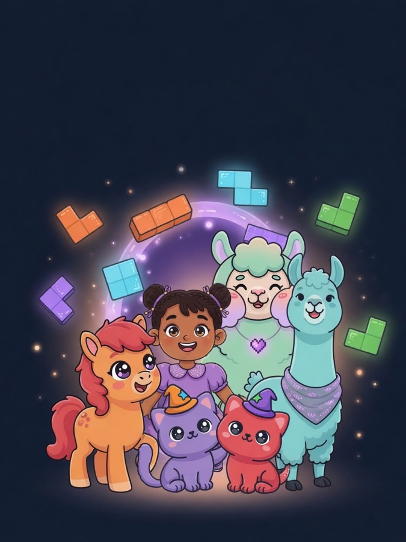
книга-сборник · внутри — настоящий код игры BlockDuel 9×9
Герои этой книги
Они будут рядом все 200 дней. Запоминай лица — дальше они станут учителями, напарниками и контролёрами.
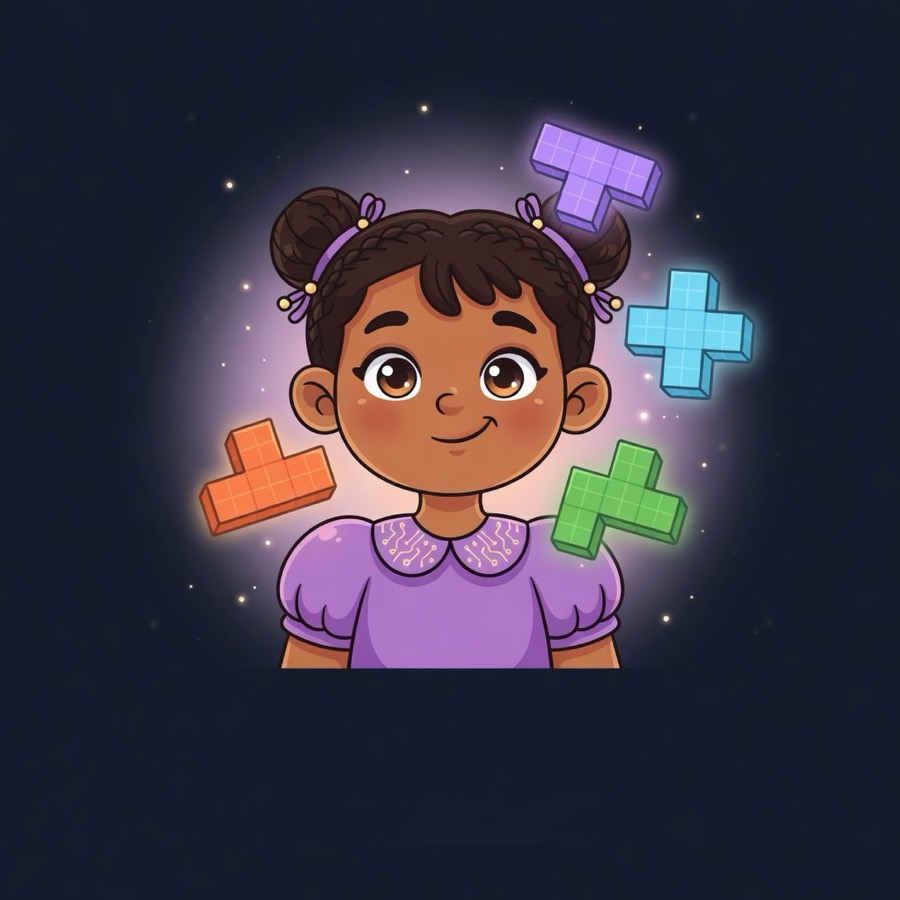
Марьям девочка, которая провалилась внутрь игры и решила её построить
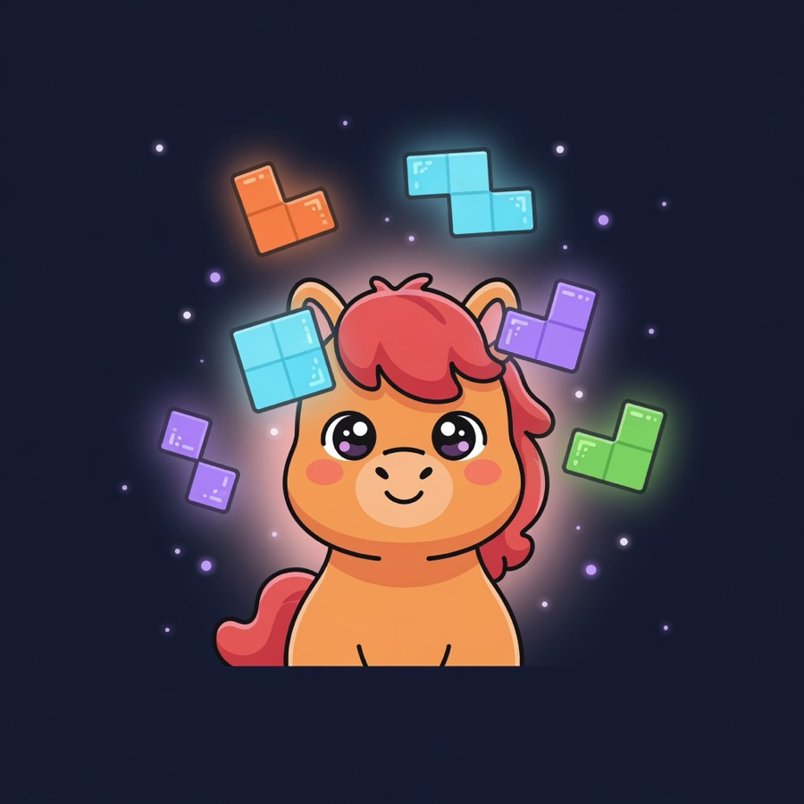
Пони По хранит коробочки-переменные и все снимки истории
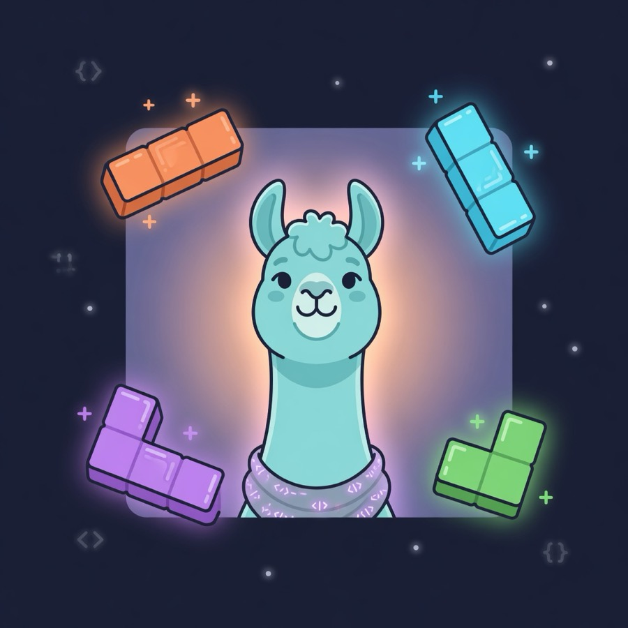
Лама Лу любит функции, числа и честную случайность
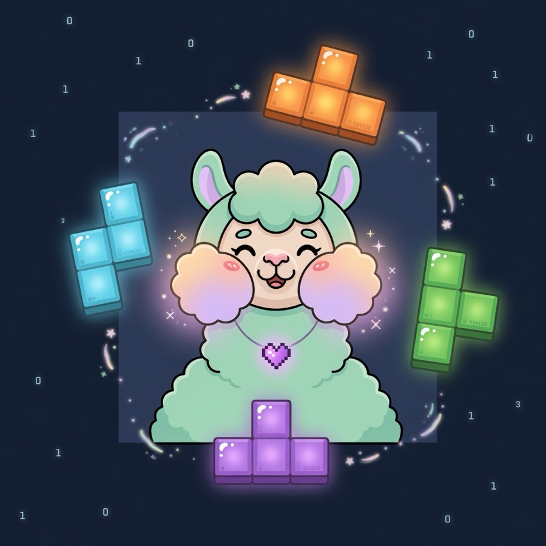
Альпака Аля учит «если» и «повтори», раскладывает фигурки
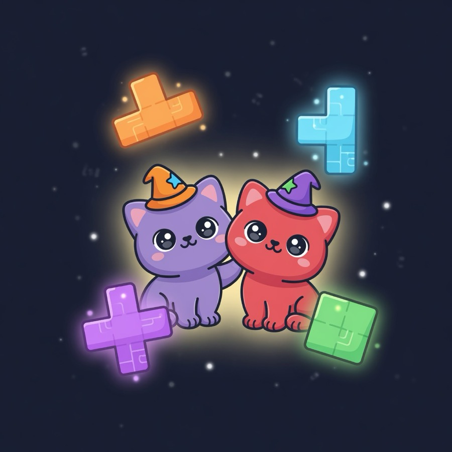
Два котика фиолетовый считает, рыжий ловит баги
Как учиться по этой книге
Это не просто сказка — это учебник-курс. Он рассчитан на 200 дней по 3 часа — это шестьсот
часов, за которые ребёнок из нуля становится настоящим разработчиком. Спешить не надо: программисты растут
не рывком, а каждый день понемногу.
200
дней пути
3 ч
в день
600 ч
до разработчика
Ритм одного дня (3 часа делим на три части — как завтрак, обед и ужин):
🥣 1 час — читаем главу и разбираем код🍲 1 час — набираем код сами, меняем числа, смотрим что будет🍎 1 час — своя маленькая задачка (в конце глав — «Задание»)
Правило для детей: идём по порядку. Сначала неделя 1 (семь вечеров), и только
потом глава про переменные. В конце книги — 200-дневная карта. Правило одно: ошибаться
— нормально.
Честно и по-взрослому. Марьям в сказке строит игру с нуля. Но настоящая игра — это тысячи строк, и ни
один разработчик не пишет их «на память». Секрет профессии другой: берёшь настоящий проект, запускаешь
его в первый же день, и растёшь вместе с ним — читаешь, меняешь, чиняешь. Так к концу курса у тебя
на экране будет наша игра BlockDuel — собранная твоими руками и понятная тебе до винтика.
Поставь инструменты. Flutter с сайта flutter.dev и бесплатный редактор
(VS Code). Один раз — и на всю жизнь. Зафиксируй версии — тогда книга не «протухнет»:
эта книга собрана и проверена на Flutter 3.44 (Dart 3.9),
Riverpod 3.3, Flame 1.37. Проверить у себя:
flutter --version. Если у тебя новее и что-то не собирается — переключись на
проверенную версию: flutter version 3.44.0 (или через
fvm). Точные версии всех пакетов уже заморожены в файле
pubspec.lock внутри проекта — его не трогаем, он и есть гарантия повторяемости.
Скачай настоящую игру и запусти её. Уже в первый день ты увидишь её живой. Мы забираем
не «последний» код, а зафиксированный снимок-тег книги — он никогда не изменится под тобой,
даже если проект поедет дальше:
git clone https://github.com/alshfu/block-puzzle-pvp
cd block-puzzle-pvp
git checkout book-v1 # снимок ровно под эту книгу (не «плавающий» main)
flutter pub get
flutter run -d chrome # и вот она, наша игра, у тебя в браузере!
Тег book-v1 — это фотография проекта на день выхода книги.
Хочешь свежак — потом сделаешь git checkout main. Но учиться начинаем со снимка,
чтобы номера строк и файлы в книге совпадали с тем, что у тебя на экране.
Дальше — не «пиши с нуля», а «найди → пойми → поменяй → запусти». Каждую неделю открываешь
настоящий файл из проекта, разбираешь его по этой книге и делаешь маленькую правку. Нажал «запустить» —
сразу видишь результат. Так знание становится твоим.
Собери и покажи миру. В конце — flutter build под
web/Android/iPhone/Mac (глава 15) и документ RELEASE_CHECKLIST.md в проекте:
пошагово, как выложить в Google Play и App Store.
🔧 Мини-квесты на НАСТОЯЩЕМ коде (каждый сразу видно в игре)
Поменяй цвета клеток в теме — файл lib/ui/theme/ (темы neutral / candy / night).
Сделай ход быстрее/медленнее — таймер turnTimeStart в lib/core/types.dart
(defaultConfig).
Измени формулу очков — lib/core/scoring.dart (например, больше очков за
бокс 3×3).
Сделай бота хитрее — веса в lib/core/bot.dart (botWeights).
Добавь свою тему в конструкторе тем прямо в игре (экран «Конструктор тем»).
Напиши свой тест в test/ и запусти flutter test
— стань контролёром (глава 12).
📂 Заготовка на каждый день — в самом проекте
В скачанном проекте есть папка course/ — там на каждый из 200 дней свой
файл-заготовка: шапка с заданием дня, связь с настоящим кодом игры и место // TODO,
куда ты дописываешь свой код.
Открыл файл дня (например course/week03_functions/day015.dart) → прочитал
задание → сначала подумал сам → написал код на месте TODO → запустил →
сравнил с настоящим файлом игры.
🩹 Если что-то сломалось (это нормально — чинится за минуту)
«Красный текст после flutter doctor». Это не поломка, а список
подсказок. Нам для старта хватает строчки Flutter с галочкой ✓ и
браузера Chrome ✓. Android/Xcode для веб-запуска не нужны — их «крестики»
сегодня игнорируем.
«command not found: flutter». Flutter не в «списке дорог» (PATH).
Закрой и открой терминал заново; не помогло — добавь папку flutter/bin в PATH
(на сайте Flutter это один абзац для твоей ОС).
«Ошибка на flutter pub get» или странные ошибки сборки. Почти всегда
лечит: flutter clean → flutter pub get. Проверь, что
ты на снимке книги: git checkout book-v1.
«У меня Flutter новее и всё красное». Вернись на проверенную версию (см. пункт 1) — и книга
снова совпадает с экраном. Новые версии освоишь позже, это отдельное приключение.
Правило спокойствия для папы и ребёнка: ошибка — это сообщение, а не приговор.
Скопируй последнюю строку ошибки, вставь в поиск — так делают все инженеры каждый день.
Итог курса: не «похожая игрушка», а наша игра целиком — ты её запустил,
понял, поменял под себя, покрыл тестами и собрал под четыре платформы. Это и есть настоящий разработчик.
Настоящие слова: от зверят — к профессии
Метафоры в этой книге — не замена терминов, а мостик к ним. Каждый образ привязан к
настоящему слову, которое ты встретишь в любом коде и любой документации мира, и к настоящему файлу
в нашей игре. Сказку читаем ради тепла — но уходим со взрослым словарём в кармане.
Образ в сказке
Настоящее слово
Где увидеть в коде игры
коробочка Пони По
переменная (variable)
int score = 0
снимок на полке у По
коммит Git, версия состояния
git log
воронка ламы Лу
функция (function)
lib/core/moves.dart
зерно и «формула роста»
PRNG, seed, детерминизм
lib/core/rng.dart
развилка альпаки Али
условие if / else
lib/core/board.dart
карусель Али
цикл for / while
lib/core/moves.dart
чертёж-коробочка котиков
класс · объект · поле · метод (ООП)
class Cell в board.dart
зелёная галочка
юнит-тест (unit test)
test/, flutter test
котик-думатель
бот, эвристика, перебор ходов
lib/core/bot.dart
домик в облаке
сервер (backend)
server/index.ts
нить к другу + конверт
WebSocket + JSON
server/
столбик силы
рейтинг ELO
server/leaderboard.ts
Правило книги: каждый раз, когда встречаешь образ — назови вслух настоящее
слово. Тогда «котики-классы» не придётся «вытравливать» — ты с самого начала знал, что это классы.
Глава 00 · Пролог · Неделя 1 · дни 001–007
Портал из блока
С детьми идём только по порядку. Семь вечеров — семь страниц. Сначала смотрим
картинку: по ней должно быть ясно, какая сегодня тема. Потом читаем, потом одно дело вместе — и книгу
закрываем. Завтра — следующий день. Не листайте вперёд.
День 1 · из 200 · тема: инструменты
Ставим инструменты
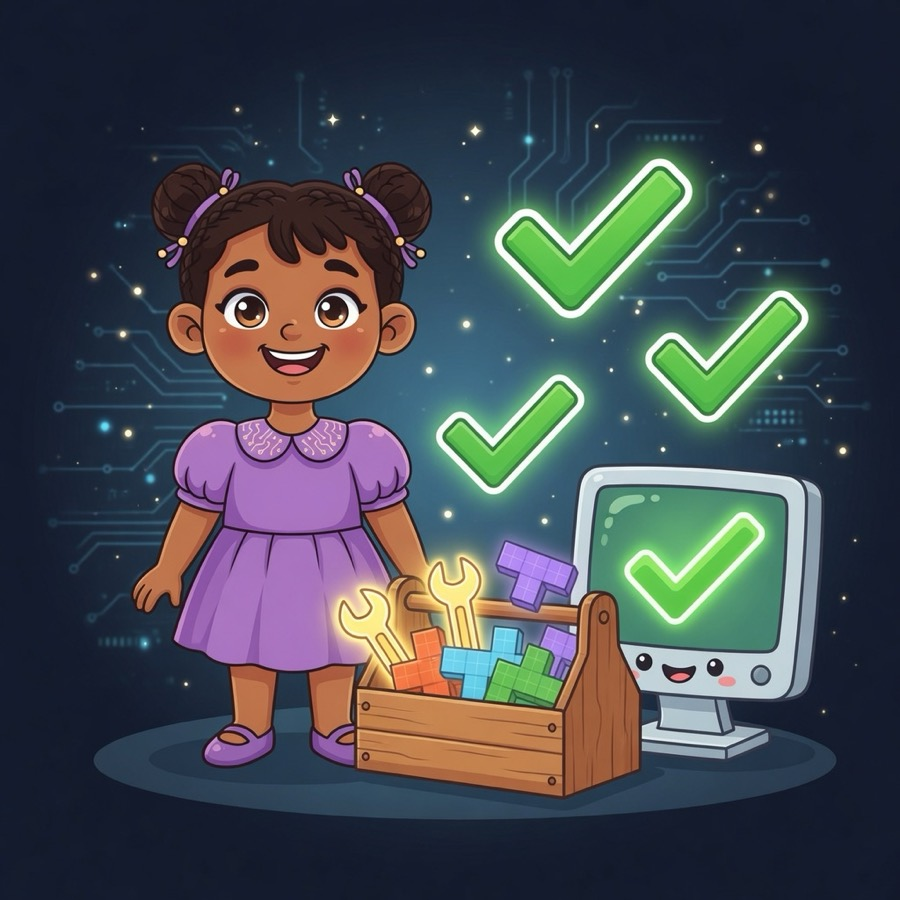
Тема дняСтавим инструменты и проверяем
Марьям было восемь, и больше всего на свете она любила складывать. Кубики, пазлы, слова из букв, башни из подушек — что угодно, лишь бы из маленького получалось большое. Папа говорил, что из неё выйдет строитель, а мама — что архитектор; сама Марьям пока не решила и строила всё подряд.
В тот дождливый вечер она играла в игру на старом планшете: разноцветные фигурки-тетромино падали на сетку, и когда ряд заполнялся целиком — вжух! — он вспыхивал и исчезал. Марьям знала эту игру наизусть: где поставить длинную палочку, куда спрятать угловатую «Г», как не оставить дырок. Но сегодня игра вела себя странно — фигурки будто подмигивали.
И вдруг посередине экрана открылся портал. Фиолетовый, из тех самых кубиков, он медленно вращался и тихо гудел, как холодильник ночью. Марьям остановилась и смотрела, а сердце стучало быстрее фигурок. «Прежде чем куда-то идти, — вспомнила она папины слова, — проверь, что все инструменты с собой». Так начинается любая стройка — с ящика инструментов, и наша тоже.
🔬 Настоящее слово: инструменты программиста
Когда папа собирает эту игру, он не колдует — он берёт большой набор готовых
деталей и станков, который называется Flutter. Из этого набора
достают кнопки, экраны, звук и правила, а на выходе получается одна и та же игра,
которая одинаково живёт и на телефоне, и на компьютере, и в браузере. Без такого
набора пришлось бы вытачивать каждую деталь заново под каждый экран — всё равно что
строить три разных дома вместо одного общего чертежа.
Команда flutter doctor — это осмотр мастерской перед работой.
Слово команда значит короткий приказ компьютеру, набранный в
чёрном окошке-терминале. Доктор проходит по списку: на месте ли
сам Flutter, есть ли куда складывать готовую игру для Android, дружит ли редактор со всем
остальным. Напротив каждого пункта он рисует зелёную галочку «всё хорошо» или крестик
«тут детали не хватает» — как настоящий врач, который слушает по очереди сердце, горло и уши.
Мастера проверяют инструменты до стройки не из трусости, а из
уважения к своему времени: пять минут осмотра экономят час поисков, почему «опять ничего
не запускается». И самое важное: игра BlockDuel, которую вы держите
в руках, собрана ровно этими инструментами — теми, что вы ставите сегодня. Значит, с первого
же вечера у Марьям и у тебя в руках не игрушечный молоток, а настоящий ящик мастера.
🎯 Задание дня — вместе с папой
Откройте сайт flutter.dev.
Поставьте Flutter (папа нажимает, ребёнок смотрит, куда кладутся файлы).
В терминале напишите flutter doctor и нажмите Enter.
Готово, когда доктор Flutter ответил и не испугался. Сегодня больше ничего не
надо.
Марьям протянула руку к светящемуся кубику. Он был тёплый, как лампочка, и чуть дрожал — будто внутри кто-то дышал. Из глубины портала доносились звуки: щёлканье, шелест, короткие звонкие «динь», как будто где-то далеко работала маленькая мастерская.
«Интересно, — шепнула она, — кто тебя собрал?» Кубик мигнул в ответ, и на его гранях на секунду проступили буквы и скобки — крошечные, как муравьи. Марьям поняла: кто-то писал его, строчка за строчкой, как письмо.
У каждого мастера есть своя мастерская. У программиста она называется редактор кода: слева — шкаф с папками, посередине — стол, где пишут строчки, а сверху — зелёная кнопка «запустить», которая оживляет написанное. Сегодня мы просто заходим в эту мастерскую и осматриваемся, ничего не трогая руками.
Марьям сделала осторожный шаг вперёд и заглянула внутрь одним глазком. Слева тянулись
полки с подписанными ящиками, посередине стоял длинный светлый стол, а над столом горела
та самая зелёная кнопка, про которую говорил папа. Всё было прибрано и как будто ждало
хозяина — ни пылинки, ни лишней бумажки. «Значит, сюда приходят, когда хотят что-то
придумать и собрать», — подумала она, и бояться сразу стало не так страшно.
🔬 Настоящее слово: редактор кода
Мастерская программиста называется редактор кода, а тот, которым
пользуется папа, — IntelliJ IDEA. Слева в нём всегда открыто
дерево файлов — тот самый шкаф с ящиками. В нашей игре у ящиков
говорящие имена: в lib/ лежит сама игра, в test/
— проверки, что она не сломалась, в web/ — то, что видно в браузере,
а в server/ — часть, которая через интернет соединяет двух игроков.
Посередине — большой лист, где пишут строчки. Редактор раскрашивает их разными цветами не для
красоты, а чтобы подсказывать: слова-приказы одним цветом, имена —
другим. А если что-то написано с ошибкой, под словом сразу появляется волнистая линия, как
красное подчёркивание в тетради. Так машина помогает заметить опечатку раньше, чем игра
вообще попробует запуститься, — и не даёт маленькой оплошности испортить целый вечер.
Сверху живёт зелёный треугольник ▶. Нажать на него — то же самое, что сказать команду
flutter run: редактор собирает всю игру из ящиков и показывает её на
экране. Сегодня мы ничего не пишем и не нажимаем всерьёз — просто запоминаем, где что лежит.
Хороший мастер сначала знакомится с мастерской, а уже потом берёт в руки инструмент.
🎯 Задание дня — вместе с папой
Откройте IntelliJ IDEA — тот редактор, в котором папа собирает эту игру.
Папа покажет: вот дерево файлов слева, вот место, где пишут код, вот кнопка запуска.
Ребёнок сам нажимает на папки и смотрит, что внутри. Ничего не удаляем.
Готово, когда ребёнок знает, где «открыть проект» и где «запустить».
Марьям поставила одну ногу в портал. Пол под пяткой стал мягким, как свет, комната закружилась — и планшет вдруг стал глубоким, как колодец. Она зажмурилась, сосчитала до трёх и шагнула второй ногой.
Она не упала. Она вошла — и полетела вниз медленно, словно пёрышко, а мимо неё проплывали большие полупрозрачные коробки. На каждой было написано имя, и Марьям успела прочитать: «правила», «картинка», «проверки». «Это как посылки, — подумала она. — Только внутри не подарки, а… игра?»
Именно так игра и путешествует между компьютерами: не по кусочкам, а целой коробкой, в которой сложено всё — и правила, и картинки, и проверки. Такая коробка называется репозиторий, а команда, которая приносит её из интернета к вам домой, — git clone. Сегодня посылка с нашей игрой приезжает на ваш компьютер.
Одна коробка подплыла к самой Марьям — на ней знакомым почерком было выведено
«BlockDuel». Сквозь полупрозрачную стенку виднелась та самая доска с фигурками, в которую
она играла на планшете. Марьям потянулась к коробке обеими руками, и та послушно двинулась
за ней, лёгкая, будто воздушный шарик. «Ты поедешь со мной домой», — сказала она коробке, и
коробка тихо звякнула в ответ, словно была этому рада.
🔬 Настоящее слово: репозиторий и git clone
Коробка с игрой по-настоящему называется репозиторий — это папка
проекта вместе со всей её историей: кто, когда и что менял. Наш репозиторий живёт в интернете
на сайте GitHub по адресу
github.com/alshfu/block-puzzle-pvp. Там он доступен всем, как книга
в библиотеке: можно прийти и взять свою копию, никому не мешая и ничего не ломая у других.
Команда git clone и есть «принеси мне такую же коробку». Слово
клонировать значит сделать точную копию: git скачивает не только
сегодняшние файлы, но и всю летопись изменений, чтобы дома у вас была не картинка игры, а её
настоящая живая мастерская. Вторая строчка, cd block-puzzle-pvp,
просто заходит внутрь привезённой папки — как открыть крышку у большой коробки.
Когда посылка приедет, внутри вы увидите знакомые ящики: lib/ — сама
игра, test/ — проверки, book/ — вот эта
самая книга. Всё, что мы будем изучать двести вечеров, уже лежит там и ждёт. Мы не станем
переписывать игру с нуля — мы возьмём настоящую и будем менять её по маленькому кусочку, как
делают взрослые мастера.
🎯 Задание дня — вместе с папой
Скачайте игру (это и есть наша книга в коде):
git clone https://github.com/alshfu/block-puzzle-pvp
cd block-puzzle-pvp
Готово, когда на компьютере появилась папка block_puzzle_pvp (или block-puzzle-pvp) и внутри
видны lib/, test/, book/.
Вокруг Марьям вспыхнули значки. Скобки { }, стрелочки, маленькие </> — они летали, как светлячки, и складывались в слова, которые она не знала, но которые почему-то казались знакомыми. Один светлячок сел ей на ладонь и оказался буквой «i».
«Это не просто картинки, — поняла Марьям. — Это слова, из которых собран мир.» Она заметила, что слова не висят по одному: они собраны в стопки, стопки — в коробочки, а коробочки подписаны чужими именами. Кто-то уже придумал их до неё и любезно оставил здесь, чтобы не строить всё заново.
Так и в настоящей игре: часть деталей мы пишем сами, а часть берём готовыми у других мастеров — это пакеты. Их нужно принести в проект, прежде чем что-то запускать, иначе игра будет как конструктор без половины деталей. Команда flutter pub get говорит: «принеси все нужные коробочки», — и они приезжают сами.
Светлячки-значки закружились гуще, будто звали за собой, и повели Марьям к маленькому домику,
что стоял прямо в воздухе. У порога аккуратной горкой были сложены разноцветные коробочки —
большие и совсем крошечные. Марьям взяла верхнюю, и та оказалась неожиданно нужной: без неё,
она это как-то почувствовала, домик не достроить. Она принялась носить коробочки к порогу
одну за другой, и работа сразу стала спориться.
🔬 Настоящее слово: пакеты и flutter pub get
Готовые коробочки от других мастеров называются пакеты. Никто не
пишет всю игру в одиночку с самого нуля: рисовать фигурки на экране помогает пакет
flame, аккуратно хранить состояние игры — riverpod,
а находят их все на общем складе pub.dev. Взять готовое — не лень, а
разумная бережливость: зачем вытачивать колесо, если хорошее колесо уже придумали до тебя.
Список нужных коробочек проект хранит в файле pubspec.yaml — это как
записка «что купить», приклеенная к дверце. В ней перечислены имена пакетов и какая версия
подходит. Когда вы говорите flutter pub get, Flutter читает эту
записку, идёт на склад и приносит домой всё разом — да ещё и те коробочки, которые нужны
самим коробочкам.
Делать это надо до запуска: без пакетов игра — как конструктор, у
которого половину деталей забыли положить. Зато один раз принёс — и они лежат в папке,
готовые к работе. Сегодня мы просто позовём flutter pub get и
посмотрим, как в проект приезжают десятки маленьких помощников, о которых даже не пришлось
думать заранее.
🎯 Задание дня — вместе с папой
В папке игры в терминале напишите:
flutter pub get
Это как сказать: «принеси все нужные коробочки». Готово, когда команда закончилась
без красной ошибки.
Марьям мягко приземлилась на пол из светящихся клеток. Точь-в-точь как сетка той игры — только теперь она стояла на ней, и каждая клетка была размером с плитку в ванной. Девять в ширину, девять в длину — Марьям сосчитала дважды, чтобы не ошибиться.
Клетки пружинили под ногами, как батут. Когда она подпрыгнула, клетка под ней вспыхнула зелёным, а соседняя — оранжевым, будто спрашивая: «сюда поставишь?» Где-то наверху пролетела фигурка-«Т» и с мягким «тук» встала в угол.
Игру нельзя понять только по чертежам — в неё надо поиграть. Сегодня мы впервые запускаем нашу игру на своём компьютере: ставим фигурки, ищем, где закрыть ряд, смотрим, как он гаснет и как считаются очки. Всё, что вы увидите на экране, мы потом разберём по винтикам и соберём сами.
Марьям не удержалась и сама поставила пролетавшую мимо фигурку в ряд. Ряд на миг замер,
потом вспыхнул весь целиком — от края до края — и с тихим звоном погас, а над ним выскочила
цифра «плюс десять». «Это мне очки?» — засмеялась она и захлопала в ладоши. Играть,
оказывается, можно было прямо руками и ногами, а не только пальцем по холодному стеклу.
🔬 Настоящее слово: flutter run
Команда flutter run — это «оживи игру и покажи её мне». Flutter берёт
все строчки из ящиков, переводит их на язык, который понимает устройство, и запускает готовую
игру. Хвостик -d chrome значит «покажи в браузере Chrome»: буква
d — от слова device, «устройство». Тем же приказом, только с другим
устройством, игру можно вывести на телефон или в окно компьютера — код один, а экранов много.
Первый запуск всегда самый долгий: машина впервые собирает игру целиком, как повар готовит
блюдо с нуля. Зато потом работает волшебная вещь — горячая перезагрузка:
поменял слово в коде, сохранил — и игра меняется на экране за секунду, даже не закрываясь. Это
и делает работу программиста живой: правишь чуть-чуть и сразу видишь, что вышло.
Главное правило сегодняшнего дня — сначала поиграть, а уже потом
разбирать. Ни один мастер не чинит часы, не поняв сперва, как они тикают. Мы ставим фигурки,
закрываем ряды, смотрим на очки — и запоминаем ощущение. Всё, что вы почувствовали руками, в
следующих главах мы разложим по винтикам и соберём заново уже своими силами.
🎯 Задание дня — вместе с папой
Запустите игру:
flutter run -d chrome
Дождитесь окна в браузере.
Поиграйте. Просто поиграйте. Поставьте фигурку. Посмотрите, как гаснет ряд.
Готово, когда ребёнок сам увидел живую игру BlockDuel. Сегодня код не трогаем.
📘 синяя дверь — правила · lib/core🎨 жёлтая дверь — картинка · lib/ui✅ зелёная дверь — проверки · test
Марьям огляделась. Кубики всех цветов парили, как фонарики, а вдалеке, там, где кончалась доска, стояли три двери: синяя, жёлтая и зелёная. «Где это я?» — прошептала она.
Голос ответил тепло, ещё из-за угла: «В Мире Кода. Здесь всё, что ты видишь, кто-то придумал и записал. За синей дверью хранят правила — как ходить и когда гаснет ряд. За жёлтой рисуют картинку — цвета, кнопки, доску. А за зелёной сидят контролёры и проверяют, что правила честные».
Так устроен и наш настоящий проект — не одной кучей, а тремя комнатами. Папка lib/core — правила игры, lib/ui — то, что видно на экране, test — проверки «всё ли честно». Когда знаешь, за какой дверью что лежит, никакой проект не страшен: открываешь нужную и ищешь только там.
Марьям подошла к дверям поближе. На синей был нарисован маленький свиток с правилами, на
жёлтой — кисточка и палитра, на зелёной — галочка и лупа. Она приложила ладонь к синей двери:
из-за неё доносился ровный деловой гул, будто там что-то без устали считали. За жёлтой было
светло и слышался шорох красок, а за зелёной кто-то методично повторял вполголоса:
«проверено, проверено, проверено».
🔬 Настоящее слово: три комнаты проекта
Настоящие программы не сваливают в одну кучу. Наш проект честно поделён на комнаты, и у каждой
своя работа. За «синей дверью» — папка lib/core: там живут
правила игры, чистые и строгие, без единой картинки. Файл
board.dart знает, как ставится фигурка и когда гаснет ряд, а
scoring.dart — как считаются очки.
За «жёлтой дверью» — lib/ui: всё, что видно на
экране. Цвета, кнопки, сама доска, летящие фигурки — это её забота. Важное правило:
комната-картинка может спросить у комнаты-правил «а сюда поставить можно?», но сама правила не
выдумывает. Так художник не спорит с судьёй, а судья не берёт в руки кисть.
За «зелёной дверью» — папка test, комната контролёров. Там лежат
маленькие проверки, которые сами запускают игру понарошку и следят, честно ли работают
правила: закрыл ряд — получил очки? не пускает фигурку за край? Когда правила, картинка и
проверки живут отдельно, чинить игру легко: сломалось — и сразу ясно, за какой дверью искать, а не
нужно перерывать весь дом от подвала до самой крыши.
🎯 Задание дня — вместе с папой
Откройте в редакторе папки lib/ и test/.
Папа коротко говорит, что где: lib/core/ — правила игры, lib/ui/ — картинка на экране, test/ — проверки
«всё ли честно».
Ребёнок выбирает один файл, открывает и просто смотрит на буквы. Ничего не меняем.
Готово, когда ребёнок может показать пальцем: вот правила, вот экран, вот
проверки.
День 7 · из 200 · мини-проект · тема: меняем слова
Свои слова на экране
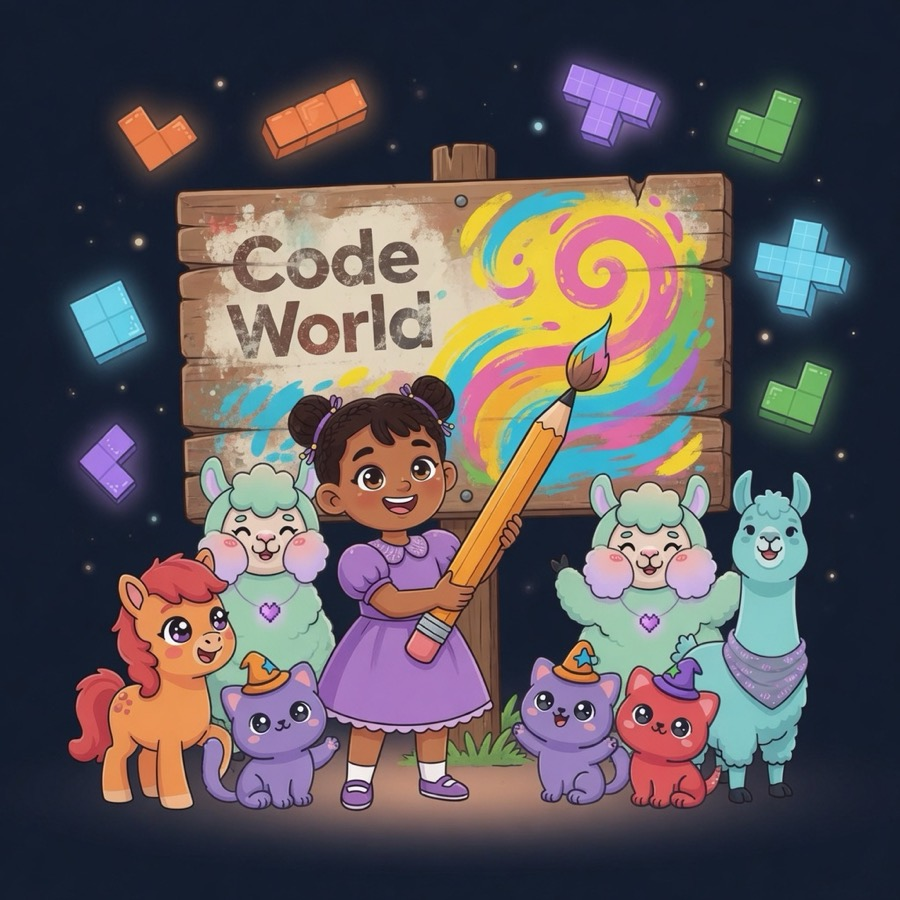
Тема дняМеняем слова на экране
Из портала вышли четверо: рыжий пони, высокая лама с бирюзовым платком, пушистая зелёная альпака и два маленьких котика — фиолетовый и рыжий. Они шли неспешно, будто давно ждали гостей, и у каждого в лапах или на спине было что-то своё: коробочка, свиток, стрелка, клубок. Марьям сразу поняла, что это не случайные вещи, а инструменты — и что каждый зверёнок отвечает за что-то одно.
«Игра, из которой ты выпала, — тоже записана, — сказал тёплый голос, и оказалось, что это говорит пони. — Кто-то сложил её из слов, как ты складываешь башню из кубиков. Хочешь, научим тебя её строить?» Марьям кивнула так быстро, что чуть не потеряла бантик. Пони
переступил копытцами и добавил: «Только уговор — строить будем по одному кирпичику за вечер,
не спеша». Марьям согласилась: спешить ей было совсем некуда.
Первое, что делает любой строитель, — оставляет на доме свою подпись. Сегодня вы найдёте в игре большую надпись BlockDuel и замените её на своё приветствие. Когда игра поздоровается вашими словами, вы поймёте главное: то, что на экране, — не волшебство, а текст, который можно прочитать и поменять.
🔬 Настоящее слово: текст на экране — это строка
Большая надпись BlockDuel на заставке — не картинка, а обычный
текст, записанный в коде. В языке Dart
кусочек текста берут в кавычки и называют строкой: например,
'BlockDuel'. Flutter показывает такую строку на экране через
маленький кирпичик-виджетText('…') —
«выведи вот эти буквы вот здесь».
Лежит эта надпись в файле lib/ui/widgets/logo.dart — за «жёлтой
дверью», в комнате-картинке. Поменять слова между кавычками совершенно безопасно: вы меняете
только то, что написано, а не то, как игра работает. Правила за
«синей дверью» не шелохнутся, очки будут считаться по-прежнему. Испортить тут ничего нельзя —
поэтому это идеальная первая правка в жизни.
Так вы делаете то же, что делает каждый мастер, закончив дом, — оставляете свою подпись.
Сохраните файл, снова скажите flutter run — и игра поздоровается
вашими словами. В эту секунду происходит главное открытие недели: экран перестаёт быть
волшебным. Это просто текст, который можно прочитать, понять и поменять.
★ Что такое программа
Программа — это очень точный список указаний, записанный так, что его понимает компьютер.
Игра, сайт, приложение — всё это программы. Мы будем строить игру BlockDuel 9×9:
тетромино на доске 9×9, как та, из которой выпала Марьям.
Язык, на котором мы напишем игру, называется Dart, а её «тело» — Flutter.
🎯 Мини-проект недели
Вместе найдите на экране игры большое слово BlockDuel.
Папа откроет файл lib/ui/widgets/logo.dart. Ребёнок меняет слова Block и Duel на своё приветствие, например:
Привет, я Марьям!
Снова flutter run -d chrome — и смотрите: игра поздоровалась вашими
словами.
Неделя 1 закрыта, когда на экране видно ваше «Привет, я Марьям!». Дальше — только
глава 01, день 8. Не раньше.
Глава 01 · Данные · Неделя 2 · дни 008–014
Пони По и коробочки-переменные
спутник главы — рыжий пони По
Неделю 1 закрыли. Теперь семь вечеров про коробочки. По картинке сразу видно тему
дня. Не прыгаем в неделю 3.
День 8 · из 200 · тема: две коробочки
Коробочки с именами
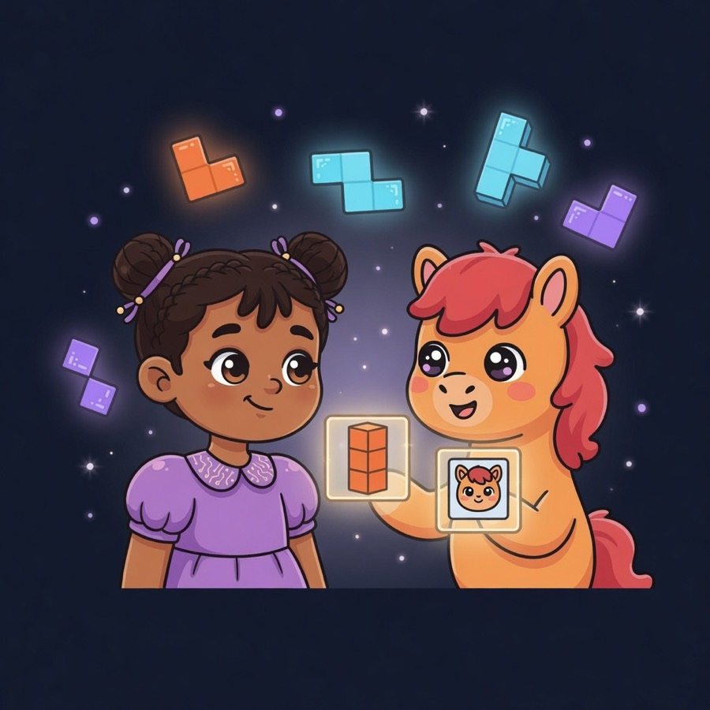
Тема дняПеременная — коробочка с подписью
Рыжий пони топнул копытцем и представился: «Я — По. Я храню всё, что в игре нужно помнить: сколько очков, чьё имя, чей сейчас ход». Он скинул со спины две коробочки и поставил их перед Марьям, как на витрину.
«Чтобы компьютер что-то запомнил, мы кладём это в переменную — коробочку с подписью, — объяснил По. — Снаружи имя, внутри значение. Без подписи коробка бесполезна: попробуй найти носки в тысяче одинаковых ящиков».
В нашей игре таких коробочек сотни: очки каждого игрока, имя, номер хода, сколько секунд осталось на таймере. Сегодня вы заведёте первую — score — и положите в неё ноль. Это самое маленькое действие в программировании и одновременно самое главное: с него начинается всё.
Марьям взяла коробочку в руки — та оказалась лёгкой и пустой, только подпись ждала своего
слова. Она вывела на боку крупными буквами «score», подумала и положила внутрь ноль, как
первый камешек в копилку. Коробочка чуть потеплела, будто обрадовалась, что у неё наконец
появились имя и содержимое. «Теперь она моя», — сказала Марьям, и По одобрительно кивнул
рыжей гривой.
🔬 Настоящее слово: переменная
Компьютер помнит вещи не в голове, а в памяти — огромном шкафу с
ячейками. Переменная — это одна такая ячейка, которой мы дали
понятное имя, чтобы находить её среди тысяч других. Строчка int score = 0;
заводит коробочку и сразу кладёт в неё ноль.
Прочитаем её по частям, слева направо. int — это
тип, обещание «здесь будут только целые числа». score
— имя коробочки, по нему мы к ней обращаемся. Знак = — приказ
«положи», а 0 — то самое значение, которое кладём. В конце стоит
точка с запятой ; — как точка в предложении: «мысль закончена».
В настоящей игре у каждого игрока есть своя коробочка очков, и живёт она в большом
ящике-состоянии GameState вместе с именем, номером хода и таймером.
Когда гаснет ряд, программа находит нужную коробочку по имени и меняет число внутри. Вы
только что научились самому первому и самому важному действию: дать памяти имя и положить в
неё значение. Без него не работает ни одна программа на свете — ни игра, ни браузер, ни
будильник в телефоне: все они только и делают, что заводят коробочки и меняют в них числа и
слова.
🎯 Задание дня — вместе с папой
Откройте файл дня course/week02_variables/day008.dart.
Напишите: int score = 0;
Рядом: print(score); и запустите.
Готово, когда в консоли появился ноль. Сегодня только одна коробочка.
По подкатил первую коробочку и написал на боку score — «очки». Потом заглянул внутрь, подул, чтобы не было пыли, и аккуратно положил число 0. «Партия ещё не началась, поэтому внутри тихо», — сказал он.
Марьям заглянула тоже: ноль лежал на дне и чуть светился. «А почему именно ноль, а не пусто?» — спросила она. «Потому что компьютер не любит неизвестность, — ответил По. — Пустая коробка — это вопрос, а ноль — уже ответ: очков пока нет».
У коробочки с числами есть тип int — от слова integer, «целое». В неё влезают 0, 15, 250, даже минус три, но не влезают буквы. В нашей игре очки, номер хода и ширина доски — всё это int, и всё начинается с честного нуля.
Марьям осторожно потрогала ноль пальцем — он был прохладный и гладкий, как речной камешек.
«А он не убежит?» — спросила она. «Не убежит, — успокоил По. — Пока мы сами не положим туда
другое число, ноль будет лежать смирно и ждать. Коробочка хранит ровно то, что в неё
положили, — ни больше, ни меньше». Марьям кивнула и мысленно поставила рядом с коробочкой
маленького сторожа.
🔬 Настоящее слово: тип int
У каждой коробочки есть тип — обещание, что за вещь будет внутри.
int — это тип для целых чисел: слово пришло
от английского integer, «целое». В такую коробочку помещаются 0, 15, 250 и даже минус три, но
не помещаются ни буквы, ни половинки: 2 — да, а 2,5 — уже нет.
Зачем вообще класть ноль в самом начале? Затем, что компьютер не любит неизвестность. Пустая
коробочка — это вопрос «а сколько тут?», на который никто не ответил, и из-за таких вопросов
игры и ломаются. Ноль — уже честный ответ: «очков пока нет». Программисты называют это
начальным значением и почти всегда ставят его сразу, чтобы игра
стартовала с ясного места, а не с пустого.
В нашей игре целыми числами описано очень многое: очки каждого игрока, номер текущего хода,
ширина и высота доски — те самые девять на девять, — сколько секунд осталось на таймере. Все
они начинают партию с честного нуля или с заранее известного числа. Сегодня вы кладёте ноль в
score — и делаете то же, что делает игра в первую миллисекунду новой
партии.
🎯 Задание дня — вместе с папой
Ещё раз напишите int score = 0;
Скажите вслух: «подпись — score, внутри — ноль».
Готово, когда ребёнок пальцем показывает: вот имя, вот значение.
На второй коробочке По написал nick и положил в неё слово "Марьям". Слово было тёплое и мягкое, как ленточка, и По завязал его бантиком. «Подпись — это имя коробочки. То, что внутри, — значение», — повторил он на всякий случай.
«А кавычки зачем?» — Марьям показала на два маленьких хвостика по краям слова. «Кавычки — это ленточка, которой мы перевязываем буквы, — объяснил По. — Без них компьютер решит, что Марьям — это ещё одна коробочка, и пойдёт её искать. А с ленточкой сразу видно: это просто слово».
Коробочка для слов называется String — «строка», нитка из букв. В игре в таких коробочках живут имя игрока, название темы, текст на кнопках. Сегодня вы кладёте в nick своё имя и просите игру сказать его вслух — в консоли.
Марьям взяла своё имя — оно оказалось тёплым, как варежка, — и уложила его во вторую
коробочку. По подал ей две маленькие ленточки-кавычки, и она аккуратно перевязала слово с
двух сторон, чтобы буквы не рассыпались. «Вот теперь порядок, — сказал пони. — Число живёт в
своей коробке, слово — в своей, и никто никого не перепутает». Марьям полюбовалась обеими
коробочками и осталась очень довольна.
🔬 Настоящее слово: тип String и кавычки
Коробочка для слов называется String — по-английски «строка», нитка,
на которую нанизаны буквы. В неё кладут любой текст: имя, название темы, надпись на кнопке.
Строчка String nick = "Марьям"; заводит такую коробочку с именем
nick и кладёт в неё слово.
Кавычки вокруг слова — не украшение, а важный знак. Они говорят компьютеру: «это просто
текст, читай его буквально». Без кавычек машина решит, что Марьям —
имя ещё одной коробочки, побежит искать её по всей памяти, а не найдя — рассердится. С
кавычками сразу ясно: искать ничего не надо, вот оно слово, целиком. Поэтому
"score" — это пять букв, а score без
кавычек — это коробочка с очками. Разница огромная.
В нашей игре строками записано всё, что игрок читает глазами: его ник над доской, названия
тем оформления, подписи на кнопках, сообщение «Ничья!» в конце партии. Компьютер не понимает
смысла этих слов — для него это просто нитки букв, — но аккуратно показывает их на экране.
Сегодня вы кладёте в nick своё имя и просите игру произнести его в
консоли.
🎯 Задание дня — вместе с папой
Напишите String nick = "Марьям"; (можно своё имя).
Наверху вспыхнул ряд — девять клеток загорелись разом и погасли, а вниз посыпались светящиеся кубики. По ловко подставил коробочку score, и в неё упало ровно пятнадцать. «Очистили ряд — получили очки», — довольно сказал он.
«Смотри внимательно: score = score + 15, — По написал это копытцем прямо в воздухе. — Сначала считаем то, что справа: было ноль, прибавили пятнадцать. Потом кладём результат в коробочку слева. Старый ноль выбрасываем — он больше не нужен».
Так работает любой счёт в игре: не «запомни новое число», а «возьми старое, прибавь и положи обратно». Именно это происходит в нашей игре каждый раз, когда гаснет ряд, столбец или квадрат три на три. Сегодня вы впервые меняете значение в коробочке — и видите в консоли не ноль, а пятнадцать.
Марьям захотела сделать всё сама. Она подставила коробочку под падающие кубики, поймала
пятнадцать штук и уже собралась просто высыпать их внутрь. «Стой, — придержал её По. —
Сначала посчитай, сколько станет, а потом клади результат. Не сыпь поверх старого — замени
старое новым». Марьям посчитала: ноль да пятнадцать — пятнадцать, — и бережно положила это
число в коробочку вместо нуля.
🔬 Настоящее слово: score = score + 15
Эта строчка выглядит странно, если читать её как в школе: разве число равно самому себе плюс
пятнадцать? Но в коде = — не «равно», а приказ «положи». Поэтому
читать надо в два шага. Сначала компьютер считает правую часть:
берёт нынешнее значение score и прибавляет к нему пятнадцать. Потом
результат едет по стрелке и ложится в коробочку score, а старое
число просто выбрасывается.
Важно, что старое значение успевают прочитать до того, как заменят. Было ноль — стало
пятнадцать. Сыграли ещё раз, закрыли ряд — score = score + 15 снова,
и вот уже тридцать. Так число растёт шаг за шагом, не забывая прошлого. Программисты пишут это
так часто, что придумали короткую запись score += 15 — то же самое,
только пальцам легче.
В нашей игре ровно это происходит каждый раз, когда гаснет ряд, столбец или квадрат три на
три: программа считает, сколько очков дала очистка, и прибавляет их к коробочке того игрока,
чей был ход. Живёт этот подсчёт в файле scoring.dart за «синей
дверью». Сегодня вы впервые не просто кладёте число, а меняете его —
и видите, как ноль превратился в пятнадцать.
🎯 Задание дня — вместе с папой
После нуля напишите score = score + 15;
print(score); — должно быть 15.
Готово, когда консоль показала пятнадцать, не ноль.
Марьям попыталась положить слово "Марьям" в коробочку с очками — просто ради интереса. Коробочка сердито пискнула и вытолкнула слово обратно, как батут. По засмеялся: «У коробочки есть тип. В этой живут только числа, а буквы ей — как рыбе велосипед».
«Числа мы зовём int, а буквы — String, — продолжил По и достал третью, совсем маленькую коробочку. — А это bool: в ней помещается только «да» или «нет», true или false. Например, «ход закончен?» — да. «Ряд полный?» — нет».
Тип защищает от ошибок: компьютер сразу скажет, если вы попытались положить слово туда, где ждут число. В нашей игре три типа встречаются на каждом шагу: очки — int, имя — String, «клетка занята?» — bool. Сегодня вы раскладываете значения по коробкам на бумаге — и проверяете, что ни одно слово не попало в дом для чисел.
Марьям решила проверить сама. Она взяла число пятнадцать — оно легко скользнуло в коробку с
очками. Взяла слово «победа» — числовая коробка снова пискнула и оттолкнула его, зато
буквенная приняла с радостью. А крошечное «да» уверенно устроилось в самой маленькой
коробочке-bool. «Каждому — свой дом», — подытожила Марьям и
довольно захлопала в ладоши.
🔬 Настоящее слово: тип бережёт от ошибок
Мы уже знаем два типа: int для чисел и String
для слов. Сегодня добавляется третий, самый маленький — bool. В него
помещается только одно из двух: true («да») или
false («нет»). Им отвечают на вопросы, у которых нет середины: «ход
закончен?», «клетка занята?», «ряд полный?».
Зачем вообще типы? Затем, что они ловят ошибки заранее. Если вы
случайно попробуете положить слово в коробочку для чисел, компьютер не станет молча делать
вид, что всё хорошо, — он сразу скажет: «сюда нельзя, тут живут только int». Лучше услышать
это в тихий вечер за столом, чем потом гадать, почему очки вдруг стали буквами. Тип — как
форма отверстия у детской сортёрки: круглая деталь просто не пролезет в квадратную дырку.
В нашей игре три типа встречаются на каждом шагу. Очки и номер хода — int.
Имя игрока и название темы — String. А в клетке доски живёт поле
bool filled — «занята ли клетка»: true или
false. Сегодня вы раскладываете значения по коробкам на бумаге и
проверяете, что ни одно слово не забрело в дом для чисел.
🎯 Задание дня — вместе с папой
Нарисуйте две коробки на бумаге: «числа» и «буквы».
Разложите: 0, 15, "Марьям", true — куда что кладётся.
Готово, когда ни одно слово не лежит в коробке чисел.
По нарисовал в воздухе длинную стрелку — справа налево. «Знак = в коде совсем не тот, что в школе, — сказал он. — В школе «равно» — это утверждение: два плюс два равно четыре. А у нас это приказ: возьми то, что справа, и положи в коробочку слева».
«Поэтому score = score + 15 — правильно, а 15 + score = score — бессмыслица: нельзя положить что-то в число пятнадцать, у него нет крышки. Сначала считается правая часть, потом результат едет по стрелке в имя слева». Марьям повторила это вслух три раза, пока не перестала путаться.
Ниже — первое настоящее заклинание По: три строчки на языке Dart, ровно те, что вы уже писали руками. Прочитайте их вместе и найдите в каждой имя коробочки, тип и стрелку-присваивание. В нашей игре таких строк тысячи — и все устроены точно так же.
Марьям взяла палочку и сама нарисовала на песке стрелку — справа налево, как показывал По.
«Значит, слева всегда коробочка, а справа — то, что в неё едет?» — уточнила она. «Именно, —
кивнул пони. — Слева — куда кладём, справа — что кладём. Перепутаешь стороны — и заклинание не
сработает». Марьям стёрла стрелку и нарисовала ещё раз, теперь уже уверенно и без запинки.
🔬 Настоящее слово: = это «положи», а не «равно»
Знак = — самый частый и самый обманчивый в коде. В школе «равно»
значит «две стороны одинаковы»: 2 + 2 = 4, и переставить их можно как угодно. В программе всё
иначе: = — это присваивание, приказ «возьми
то, что справа, и положи в коробочку слева». У него есть строгое направление, как у стрелки.
Поэтому score = score + 15 — правильно, а
15 + score = score — бессмыслица. Слева от стрелки должна стоять
коробочка, у которой есть крышка и в которую можно что-то положить. А
15 + score — это просто число, готовый результат, у него нет
крышки: класть туда некуда. Компьютер сначала до конца вычисляет правую часть, а потом одним
движением кладёт итог в имя слева.
В заклинании По ниже спрятаны ровно три такие стрелки, и все они на языке
Dart — том самом, на котором написана наша игра. Прочитайте каждую
строку и найдите в ней три вещи: тип коробочки, её имя и стрелку-присваивание. В настоящем
коде игры таких строк тысячи, но устроены они точно так же, как эти три, — и, разобрав их, вы
уже умеете читать самое сердце программы.
заклинание По Dart
int score = 0; // коробочка с числом: очки игрокаString nick = "Марьям"; // коробочка с буквами: имя
score = score + 15; // очистили ряд — прибавили 15 очков
День 14 · из 200 · мини-проект · тема: карточка игрока
Карточка: имя и очки
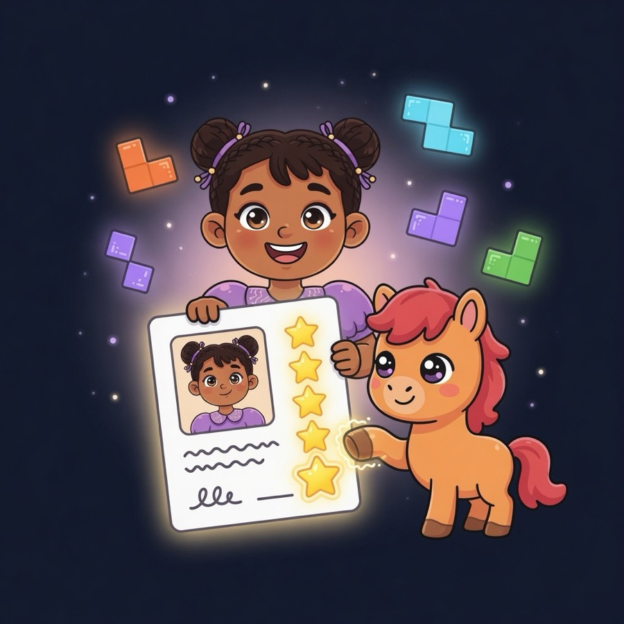
Тема дняМини-проект: имя + очки
К концу недели у Марьям было две коробочки, и она носила их с собой повсюду: в одной лежало имя, в другой — очки. По предложил склеить их в одну карточку — как у настоящего игрока: слева портрет, справа звёзды. «Это и есть мини-проект, — сказал он. — Маленькая вещь, которая работает целиком».
Марьям написала обе коробочки в одном файле, прибавила пятнадцать очков и попросила компьютер напечатать всё. Консоль ответила: «Марьям — 15». Пони поставил на карточку печать копытцем и объявил неделю закрытой.
В настоящей игре карточка игрока устроена так же, только коробочек больше: имя, очки, уровень, рейтинг. Вы уже умеете главное — заводить коробочку, класть в неё значение, менять и печатать. Дальше лама Лу покажет, как превращать действия в машины-функции, но это только на следующей неделе.
Марьям держала готовую карточку и не могла налюбоваться: слева — её имя в бантике-кавычках,
справа — пятнадцать честно заработанных очков. Это была её первая собственная вещь в Мире
Кода — маленькая, но настоящая, собранная своими руками из двух коробочек. «Я построила это
сама», — тихо сказала она, и По торжественно приложил к уголку карточки печать в виде
подковки.
🔬 Настоящее слово: маленькая программа целиком
Карточка игрока — ваша первая программа целиком, пусть и крошечная. В
ней есть всё, из чего состоят большие: коробочки для данных (score и
nick), действие над ними (score = score + 15)
и показ результата человеку (print). Данные, действия, вывод — на
этих трёх китах держится и наша игра, и любое приложение в телефоне.
Команда print(…) — это «скажи вслух в консоль». Консоль — чёрное
окошко, куда программа пишет сообщения для программиста, а не для игрока. Когда вы просите
print(nick) и print(score), машина честно
печатает «Марьям» и «15». Так вы своими глазами видите, что в коробочках лежит именно то, что
вы туда положили, — а это и есть самый первый способ проверить, что программа работает.
В настоящей игре карточка игрока устроена так же, только коробочек больше: имя, очки, уровень,
рейтинг, аватар — все они собраны в один класс Player. Вы пока
сложили две, но принцип тот же самый, и дальше вы будете просто добавлять коробочки в уже
знакомую карточку. Неделя переменных закрыта: вы умеете заводить память, класть в неё
значение, менять его и показывать. Это фундамент, на котором стоит всё остальное.
★ Что ты выучил за неделю
Переменная — именованная коробочка для данных.
У каждого значения есть тип: int, String, bool.
= — это «присвоить», а не «равно».
🎯 Мини-проект недели
В одном файле заведите score и nick.
Прибавьте 15 к очкам.
Напечатайте оба значения в консоль.
Неделя 2 закрыта, когда консоль показала имя и число. Дальше — неделя 3, лама Лу и
функции. Не раньше.
Недели 3–29 · страницы-дни
Дни 15–200: продолжаем по вечерам
каждый вечер — одна страница; в конце недели — мини-проект
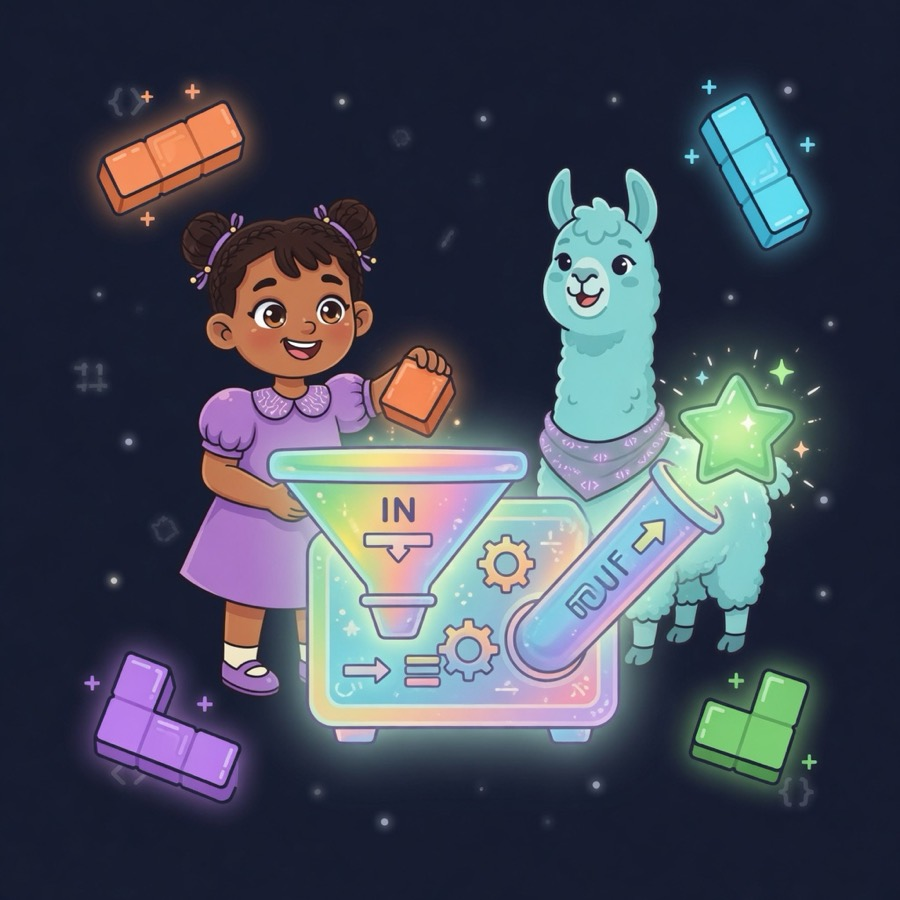
Неделя 3Лама Лу
Неделя 3. Семь вечеров по одной странице. Сначала смотрим картинку — по ней ясна тема дня. Не листаем вперёд.
День 15 · из 200 · тема: функция-приветствие
Волшебная машина-функция
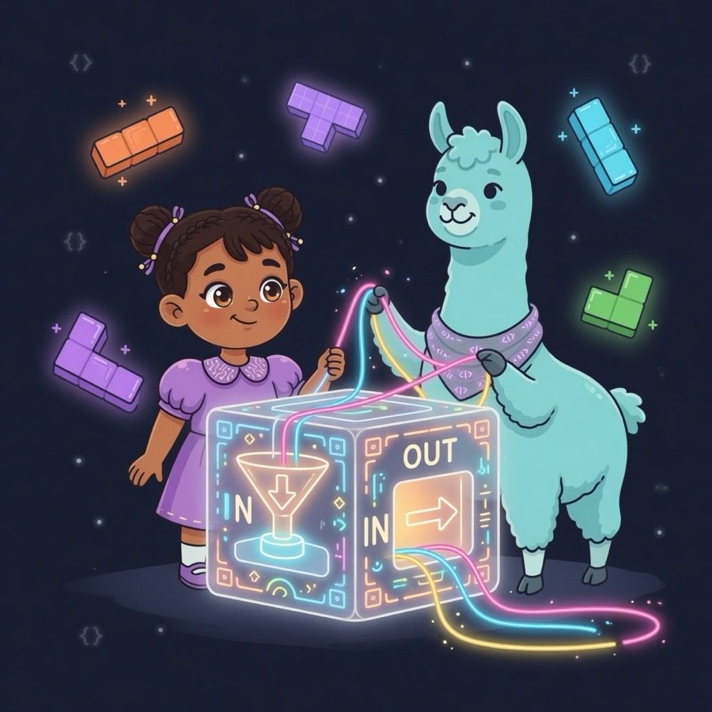
Тема дняфункция-приветствие
За доской начинался луг из светящихся линий, и на нём стояла лама Лу — высокая, бирюзовая, с платком, на котором мерцали цифры. Она плела из лучей странную машину: слева воронка-вход, справа лоток, откуда что-то выезжает. «Смотри, — сказала Лу, не оборачиваясь, — кладёшь в воронку имя, а из лотка выезжает приветствие».
Марьям положила в воронку слово «Марьям» — и через секунду из лотка выехала табличка «Привет, Марьям!». Положила «По» — выехало «Привет, По!». «Действие с именем — это функция, — объяснила Лу. — Один раз придумал, как делать, и зовёшь сколько хочешь, не переписывая заново».
В нашей игре функций сотни: одна ставит фигуру, другая считает очки, третья решает, чей ход. Сегодня вы соберёте самую первую — привет(имя): она берёт слово и возвращает приветствие. Обратите внимание на слово return — это и есть лоток, из которого выезжает ответ.
Марьям попробовала сама: положила в воронку «мама» — выехало «Привет, мама!», положила «папа» — выехало «Привет, папа!». Она засмеялась и принялась кормить машину именами всех, кого знала: бабушки, кота, соседской девочки. Машина ни разу не ошиблась и ни разу не устала, только тихо гудела от удовольствия.
🔬 Настоящее слово
Машина ламы Лу по-настоящему называется функция — это действие, которому дали имя, чтобы звать его сколько угодно раз. У функции есть вход (воронка) и выход (лоток). Запись String привет(String имя) читается так: функция по имени привет принимает одно слово имя и обещает вернуть слово (тип String).
Самое важное слово внутри — return. Это и есть лоток: что стоит после return, то и выедет наружу, став ответом функции. Строка return 'Привет, $имя!'; склеивает приветствие с тем именем, что положили в воронку. Значок $ внутри кавычек значит «подставь сюда значение коробочки» — маленькое, но очень удобное правило языка Dart.
Зачем это нужно? Затем, что придуманное однажды правило работает потом везде. В нашей игре сотни функций: одна ставит фигуру на доску, другая — scoreForMove — считает очки за ход, третья тянет фигуру из мешка через bag.draw(). Каждую написали единожды, а зовут тысячи раз за партию. Сегодня вы соберёте свою первую функцию — маленькую, но настоящую машину, которая берёт вход и честно возвращает ответ.
Утром Лу переделала машину: теперь у неё было две воронки. «Одной воронки мало, когда нужно сравнить или перемножить, — сказала она. — Функция может брать сколько угодно входов, только каждому — своё имя». Марьям написала над воронками a и b.
В левую она бросила три, в правую четыре — и из лотка выехало двенадцать. «Площадь прямоугольника три на четыре, — кивнула Лу. — Машина не знает, что такое площадь; она знает только «умножь». Смысл придумываешь ты, а функция честно выполняет».
Так устроена любая функция с параметрами: имена входов — это подписи на воронках, а число, которое возвращается, — ответ. В игре такая же машина считает, сколько клеток занимает фигура и сколько очков даёт квадрат три на три. Сегодня соберите площадь(a, b) и проверьте её на нескольких парах чисел.
Марьям стала подбрасывать в воронки разные пары: два и два — вышло четыре, пять и три — пятнадцать, десять и десять — целых сто. «Это же таблица умножения!» — ахнула она. Лу улыбнулась: машина и правда знала всю таблицу сразу, потому что умела не запоминать готовые ответы, а честно считать их каждый раз заново.
🔬 Настоящее слово
Вчерашняя функция брала один вход, сегодняшняя — два. Их называют параметры: это подписи на воронках, по которым функция узнаёт, что куда положили. В записи int площадь(int a, int b) => a * b; параметров два — a и b, — и оба целые числа.
Стрелка => — короткая запись для функций из одной строчки. Она значит ровно то же, что { return a * b; }, только компактнее: «функция сразу возвращает вот это». Программисты любят её за краткость и зовут «толстой стрелкой». А тип перед именем — int — обещает, что назад приедет целое число.
Важная мысль: функция не понимает, что такое «площадь». Она умеет только «умножь первое на второе». Смысл — что это площадь прямоугольника — придумываете вы, а машина честно выполняет действие. В нашей игре так же устроены функции, считающие, сколько клеток занимает фигура или сколько очков даёт квадрат три на три: внутри простая арифметика, а смысл ей придаёт человек. Сегодня соберите площадь(a, b), проверьте на нескольких парах чисел и заметьте: одна маленькая функция уже знает всю таблицу умножения наизусть.
🎯 Задание дня — вместе с папой
Напиши int площадь(int a, int b) => a * b;
Позови площадь(3, 4) и напечатай 12.
Не спешим: одна маленькая победа за вечер — уже отлично.
Марьям решила проверить, правда ли машину можно звать сколько угодно. Она собрала функцию сумма(a, b) и позвала её десять раз подряд с разными числами, быстро-быстро, как играют в «ладушки». Машина ни разу не устала и ни разу не ошиблась.
«В этом и секрет, — сказала Лу. — Ты придумываешь правило один раз, а пользуешься тысячу. Если в правиле ошибка — чинишь в одном месте, и все тысяча вызовов становятся правильными». Марьям вспомнила, как переписывала домашку по три раза, и позавидовала компьютеру.
Правило «написал один раз — пользуйся везде» программисты зовут переиспользованием, и это одна из главных причин, зачем нужны функции. В нашей игре функция очков зовётся при каждом ходе каждого игрока — и всегда считает одинаково честно. Сегодня проверьте свою сумма(a, b) на самых разных числах, включая ноль и отрицательные.
Марьям придумала игру: она называла два числа, а машина мгновенно возвращала их сумму, и они с ламой считали наперегонки. Машина, конечно, всегда была первой, но ни капельки не зазнавалась. «Она не умнее тебя, — сказала Лу. — Просто ты придумала ей правило, а она повторяет его без устали. Ум тут твой, а скорость — её».
🔬 Настоящее слово
Сегодняшняя функция int сумма(int a, int b) => a + b; устроена как вчерашняя, только вместо умножения — сложение. Но урок дня не в плюсе, а в другом: одну и ту же функцию можно звать сколько угодно раз, и каждый раз она отработает совершенно одинаково.
Это свойство называют переиспользованием. Правило пишут единожды, а пользуются им повсюду. И тут есть огромный подарок: если в правиле нашлась ошибка, чинить надо только в одном месте — внутри функции, — и сразу все тысячи вызовов становятся правильными. Представьте обратное: если бы формулу очков переписывали руками в каждом уголке игры, одну ошибку пришлось бы ловить в сотне мест. Функция спасает от этого кошмара.
Программисты даже завели короткое правило: «не повторяйся» (по-английски DRY — don't repeat yourself). В нашей игре функция очков scoreForMove зовётся при каждом ходе каждого игрока — и всегда считает по одной и той же формуле. Сегодня проверьте свою сумма(a, b) на самых разных числах, включая ноль и отрицательные, и убедитесь: правило одно, а работает везде.
🎯 Задание дня — вместе с папой
Напиши int сумма(int a, int b) => a + b;
Проверь на нескольких числах.
Не спешим: одна маленькая победа за вечер — уже отлично.
Лу привела Марьям к светящемуся свитку, приколотому к стене луга. На нём была записана длинная функция, и рядом стояла подпись: scoreForMove — «очки за ход». «Это настоящая, — сказала Лу тихо. — Не учебная. Именно она считает очки в той игре, из которой ты выпала».
Марьям читала медленно, водя пальцем: сколько линий очистили, какая серия подряд, был ли идеальный ход, когда доска опустела. Половину слов она не знала, но узнавала знакомое: воронки-входы, лоток return, умножение. «Читать чужой код — как читать чужой рецепт, — сказала Лу. — Сначала ищешь, что кладут и что получают».
Сегодня вы ничего не пишете — вы открываете настоящий файл игры lib/core/scoring.dart и читаете функцию построчно. Найдите её входы, найдите return и попробуйте догадаться, что она вернёт, если очистить одну линию. Умение читать код важнее умения писать: девять десятых работы программиста — чтение.
Марьям водила пальцем по свитку сверху вниз и шёпотом называла то, что узнавала: «вот воронка, вот ещё одна, а вот лоток». Незнакомых слов было много, но знакомых — тоже, и от этого свиток переставал пугать. «Ты уже читаешь код, — тихо сказала Лу. — Пусть не весь, но читаешь. Это и значит — начала понимать».
🔬 Настоящее слово
Сегодня вы впервые открываете настоящий код игры, а не учебный. Функция scoreForMove живёт в файле lib/core/scoring.dart за «синей дверью» — там, где хранят правила. Её задача — сказать, сколько очков принёс один ход.
Читать чужую функцию лучше не подряд, а по вопросам. Первый: что у неё на входе? Сколько линий очистилось за ход, какая сейчас серия подряд (комбо), был ли ход идеальным. Второй: что она возвращает? Одно число — очки. Третий: что происходит между входом и return? Там прячется формула, которую вы уже видели в книге: базовые очки за линии, множитель за серию, надбавка за идеальную очистку.
Не пугайтесь незнакомых слов — их всегда будет половина, и это совершенно нормально. Опытные программисты тоже читают чужой код, не понимая каждой мелочи: сначала ловят главное — вход и выход, — а детали разбирают потом. Умение читать код важнее умения его писать: девять десятых работы программиста — это чтение уже написанного. Сегодня просто пройдите функцию глазами и найдите её воронки и лоток.
🎯 Задание дня — вместе с папой
Открой lib/core/scoring.dart и найди scoreForMove.
Прочитай её построчно, ничего не меняя.
Не спешим: одна маленькая победа за вечер — уже отлично.
«Теперь давай её позовём», — Лу протянула Марьям светящийся шарик с числами. Марьям положила в воронку «одна линия, серия ноль, не идеально» — и из лотка выехало десять. Положила «две линии, серия три» — выехало двадцать шесть, и шарик радостно подпрыгнул.
«Видишь, вторая пара дала не вдвое больше, а больше, чем вдвое, — заметила Лу. — Серия подряд умножает очки: чем дольше не промахиваешься, тем дороже каждый ряд. Это не случайность, это правило, записанное в функции».
Так программисты изучают чужие функции: не гадают, а зовут с разными входами и смотрят на ответы. Сегодня позовите scoreForMove с несколькими наборами чисел, запишите ответы в тетрадку и найдите закономерность. Завтра вы соберёте такую же машину сами.
Марьям завела тетрадку и стала записывать: какой вход — такой ответ, столбиком, аккуратно. Скоро страница заполнилась парами чисел, и в них проступил рисунок: чем длиннее серия, тем круче взлетают очки. «Ты не угадываешь правило, а добываешь его, — одобрительно сказала Лу. — Спросила машину много раз — и она сама всё про себя рассказала».
🔬 Настоящее слово
Вчера вы читали функцию глазами, сегодня — зовёте её. Позвать функцию значит написать её имя и дать ей вход в скобках: scoreForMove(1, 0, false) — «одна линия, серия ноль, не идеально». Функция посчитает и вернёт число, которое можно напечатать или положить в коробочку.
Числа в скобках называют аргументы, и порядок у них важен: первое — сколько линий, второе — серия, третье — был ли идеальный ход. Перепутаешь местами — получишь другой ответ, хотя явной ошибки не будет. Поэтому, вызывая чужую функцию, всегда сверяются с её подписью: что за чем идёт. Это как набирать телефонный номер — цифры те же, а порядок решает всё.
Так программисты и изучают незнакомые функции: не гадают, а зовут с разными входами и смотрят на ответы. Позовите scoreForMove сначала с одной линией, потом с двумя, потом добавьте серию — и сравните. Вы заметите, что серия подряд умножает очки: чем дольше не промахиваешься, тем дороже каждый ряд. Это не случайность, а правило, честно записанное в функции. Завтра вы соберёте такую же машину сами.
🎯 Задание дня — вместе с папой
Позови scoreForMove(1, 0, false) — сколько вышло?
Позови scoreForMove(2, 3, false) — сравни.
Не спешим: одна маленькая победа за вечер — уже отлично.
Марьям вернулась к лугу с тетрадкой, где были записаны все ответы машины очков, и объявила: «Я поняла правило. Теперь хочу такую же — свою». Лу отступила на шаг и сложила копытца: «Тогда я не помогаю. Только смотрю».
Марьям поставила две воронки — линии и комбо, — написала внутри формулу, которую вывела вчера, и приделала лоток return. Первая попытка выдала ерунду: она перепутала, что на что умножать. Вторая — почти правильно. Третья дала ровно двадцать шесть, и Лу молча кивнула.
Собирать функцию по образцу — главный способ учиться программированию: сначала читаешь, потом зовёшь, потом делаешь свою и сравниваешь с настоящей. Сегодня напишите очки(линии, комбо) по формуле из книги и проверьте: очки(2, 3) должно вернуть 26. Если не сходится — это не провал, а подсказка, где искать.
Первая попытка вышла смешной: машина выдала число больше, чем очков во всей игре. Марьям не расстроилась — сверилась с тетрадкой, нашла, где перепутала множитель, и поправила одну строчку. Вторая машина заработала почти верно, третья — точь-в-точь как настоящая. «Ошибка — это не стыд, а стрелка, — сказала Лу. — Она показывает, где чинить».
🔬 Настоящее слово
Сегодня вы впервые пишете функцию не по подсказке, а по образцу: смотрите, как устроена настоящая scoreForMove, и собираете свою очки(линии, комбо). У неё два входа и один выход, а внутри — формула из книги.
Формула такая: сначала считают базу за линии — N*(N+1)/2, где N — сколько рядов очистилось, — потом умножают на множитель 1 + 0.1 * комбо. Не пугайтесь значков: это просто «чем больше линий и длиннее серия, тем больше очков». Проверочная точка — очки(2, 3) должно вернуть 26. Другое число — не провал, а подсказка, где искать ошибку.
Собирать функцию по образцу — главный способ учиться программированию: сначала читаешь чужое, потом зовёшь, потом делаешь своё и сравниваешь с настоящим. Так учатся и повара, и музыканты, и мастера: повторил за учителем — понял изнутри. Сегодня напишите свою машину очков и сверьте её ответ с эталоном из книги. Совпало — вы только что повторили кусочек настоящей игры своими руками. И запомните это чувство: именно так, по одному маленькому кусочку, и собирают любую большую программу на свете.
🎯 Задание дня — вместе с папой
Напиши int очки(int линии, int комбо) по формуле из книги.
Проверь: очки(2, 3) должно дать 26.
Не спешим: одна маленькая победа за вечер — уже отлично.
К седьмому вечеру машина очков сияла на лугу, как маленький маяк, и все зверята пришли посмотреть. По принёс коробочки, чтобы складывать в них ответы, котики бегали вокруг и подкидывали числа в воронки. Марьям звала функцию снова и снова, и каждый раз из лотка выезжало правильное число.
«Неделю функций закрыли, — сказала Лу. — У тебя теперь есть первый настоящий инструмент. Переменная хранит, а функция — делает. С этими двумя уже можно строить». Марьям посмотрела на свои руки так, будто они впервые что-то умели.
Мини-проект недели: доведите функцию очки(...) до рабочего вида, позовите её три раза с разными входами и напечатайте результаты. Сравните с тем, что выдаёт настоящая scoreForMove, — они должны совпасть. Если совпали, вы только что повторили кусочек настоящей игры своими руками.
Марьям в последний раз позвала свою машину и сравнила ответ с настоящей scoreForMove — числа совпали до единички. Зверята захлопали, а По приклеил к машине блестящую наклейку «работает». «Ты повторила кусочек настоящей игры своими руками, — сказала Лу. — Теперь эта машина твоя навсегда». Марьям бережно свернула чертёж и спрятала его в карман.
🔬 Настоящее слово
Мини-проект недели — не новая тема, а сборка всего, что вы уже умеете, в одну работающую вещь. Вы доводите функцию очки(...) до рабочего вида, зовёте её три раза с разными входами и печатаете результаты. Это маленькая, но законченная программа: у неё есть правило, вызовы и понятный вывод.
Главная проверка — сравнить свой ответ с настоящим. Позовите свою очки(2, 3), а рядом — scoreForMove из игры с тем же входом. Числа должны совпасть. Такое сравнение с эталоном — важнейший приём: так убеждаются, что твоя версия правила работает как надо. По сути вы написали свой маленький тест — пока руками и глазами, а не кодом; но настоящие тесты в папке test/ устроены ровно по этой же мысли.
За эту неделю у вас в руках оказался второй инструмент. Переменная хранит, функция делает. С этими двумя уже можно строить многое: одна помнит очки, другая считает, сколько к ним прибавить. Дальше альпака Аля покажет развилки — как программа принимает решения и выбирает путь, — но это уже совсем другая, следующая неделя.
🎯 Задание дня — вместе с папой
Доведи функцию очки(...) до рабочего вида.
Позови её три раза с разными входами и напечатай.
Не спешим: одна маленькая победа за вечер — уже отлично.
Неделя 4. Семь вечеров по одной странице. Сначала смотрим картинку — по ней ясна тема дня. Не листаем вперёд.
День 22 · из 200 · тема: развилка if
Развилка: если…
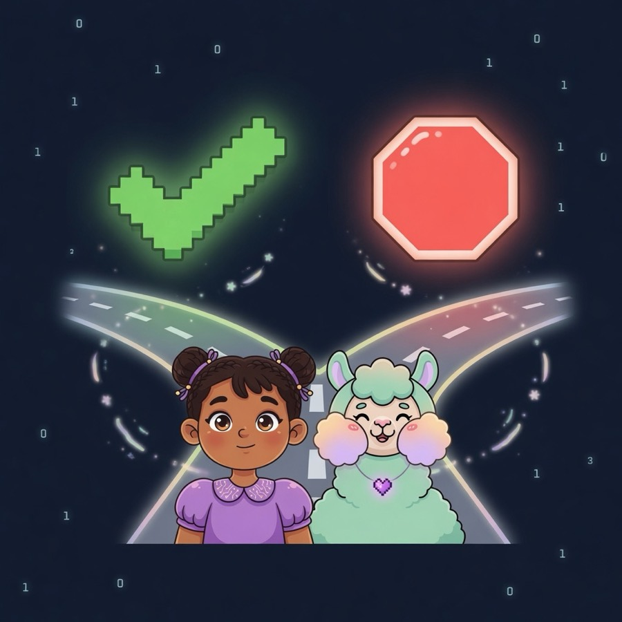
Тема дняразвилка if
За лугом дорога раздваивалась, и на развилке стояла альпака Аля — пушистая, зелёная, с двумя стрелками в копытцах: одна «да», другая «нет». Она подпрыгивала на месте, будто не могла дождаться вопроса. «Спроси меня что-нибудь!» — крикнула она, когда Марьям подошла.
«Очки больше рекорда?» — спросила Марьям. Аля глянула на две коробочки, которые принёс По, сравнила и прыгнула на дорожку «да»: «Значит, новый рекорд — записываем!» Потом вернулась и объяснила: «if — это выбор. Программа доходит до развилки, задаёт вопрос и идёт туда, куда выпал ответ».
Без развилок программа — как поезд на прямых рельсах: делает всегда одно и то же. С if она умеет решать: если очки больше рекорда — обнови рекорд; если клетка занята — не ставь фигуру. Сегодня вы напишете первую развилку if (score > best) best = score; и посмотрите, когда она срабатывает, а когда молчит.
Марьям подошла к развилке сама и загадала: «Очки — двадцать, рекорд — пятнадцать». Аля мигом прыгнула на дорожку «да»: «Больше! Новый рекорд!». Тогда Марьям загадала очки поменьше рекорда — и альпака спокойно осталась на месте, даже не шелохнувшись. «Видишь, — сказала она, — когда ответ „нет“, развилка просто ничего не делает».
🔬 Настоящее слово
Развилка альпаки по-настоящему называется условие, а в коде — if, «если». Пишут так: if (условие) действие;. Компьютер доходит до этого места, проверяет, что в круглых скобках, и, если там «да» (true), выполняет действие; если «нет» — просто идёт дальше.
В скобках всегда стоит вопрос с ответом «да» или «нет» — тот самый тип bool из недели пони. Строка if (score > best) best = score; читается по-человечески: «если очки больше рекорда, запиши очки в рекорд». Знак > — это вопрос «больше?», а не приказ; он возвращает «да» или «нет», и по этому ответу if решает, действовать ли.
Без развилок программа как поезд на прямых рельсах: всегда делает одно и то же. С if она умеет решать: если клетка занята — не ставь фигуру, если время вышло — заверши ход, если очки побили рекорд — обнови его. Именно из таких маленьких «если» и складывается вся логика игры. Сегодня вы напишете первую развилку и увидите, когда она срабатывает, а когда молчит. Не бойтесь ошибиться — любую развилку можно перечитать вслух, заменив «if» на «если», и сразу станет ясно, что именно она проверяет.
🎯 Задание дня — вместе с папой
Открой course/week04_if/day022.dart
Напиши: if (score > best) best = score;
Не спешим: одна маленькая победа за вечер — уже отлично.
Аля притащила на развилку мешок чисел и стала бросать их по одному в воздух. Чётные вспыхивали зелёным и улетали направо, нечётные — оранжевым и налево. «Как ты так быстро понимаешь?» — удивилась Марьям.
«Я не понимаю, я проверяю, — засмеялась Аля. — Делю на два и смотрю на остаток. Остаток ноль — чётное. Знак % как раз и значит «остаток от деления»». Марьям попробовала сама: восемь — остаток ноль, зелёное; семь — остаток один, оранжевое.
Условие в скобках после if — всегда вопрос с ответом «да» или «нет», то есть тот самый bool из недели пони. Компьютер вычисляет ответ и решает, что делать дальше. Сегодня проверьте if (n % 2 == 0) на нескольких числах и заметьте: сравнение пишется двумя знаками равно, а не одним.
Марьям взяла горсть чисел и стала бросать их сама. Восемь — зелёное, направо. Семь — оранжевое, налево. Ноль — Аля на секунду задумалась и отправила направо: «Ноль тоже чётный, он делится на два без остатка». Марьям хихикнула: даже у нуля, оказывается, есть характер, и его надо знать заранее.
🔬 Настоящее слово
Как понять, чётное ли число, не разглядывая его? Разделить на два и посмотреть на остаток. Для остатка в коде есть особый знак — %. 8 % 2 даёт 0 — делится ровно, значит чётное; 7 % 2 даёт 1 — остался хвостик, значит нечётное.
Отсюда условие if (n % 2 == 0) — «если остаток от деления на два равен нулю». И тут важнейшая тонкость: сравнение пишется двумя знаками равно — ==, а не одним. Один знак = — приказ «положи в коробочку», а два == — вопрос «равны ли?». Перепутать их — самая частая ошибка новичка, и компьютер честно на неё жалуется.
Знак остатка % в играх — рабочая лошадка. С его помощью раскрашивают доску в шахматную клетку, чередуют ходы двух игроков (номер хода % 2 — чей сейчас черёд), пускают что-то по кругу. Сегодня проверьте if (n % 2 == 0) на нескольких числах и не забудьте про ноль: он тоже чётный. А ещё попробуйте отрицательные — минус четыре тоже делится на два без остатка. Знак процента поначалу кажется странным, но стоит пару раз им воспользоваться, и он станет таким же привычным, как обычные плюс и минус.
🎯 Задание дня — вместе с папой
Проверь: if (n % 2 == 0) print('чётное');
Не спешим: одна маленькая победа за вечер — уже отлично.
На следующий день развилка выросла: вместо двух дорожек стало три двери. Над первой было написано «мало», над второй «средне», над третьей «много», и светилась всегда только одна. «Два ответа — это скучно, — сказала Аля. — Иногда вариантов больше, и тогда двери ставят в ряд».
Марьям бросила в воздух число 5 — загорелась дверь «мало». Число 50 — «средне». Число 500 — «много». «Программа идёт по дверям по очереди, — объяснила Аля. — Первая подошла — заходит и дальше не смотрит. Если ни одна не подошла — идёт в последнюю, без вопроса. Это else».
Цепочка if / else if / else нужна, когда ответов больше двух: какой уровень у бота, какой цвет у клетки, какая награда за серию. Сегодня сделайте три ветки по значению числа и проверьте на границах — что будет ровно на 10 и ровно на 100. Границы — любимое место, где прячутся ошибки.
Марьям устроила альпаке экзамен: бросала числа у самых границ. Ровно десять — какая дверь? Аля на миг замерла и уверенно шагнула, куда велело правило. «Вот тут легко ошибиться, — призналась она. — „Больше десяти“ и „десять и больше“ — это разные двери. Одна лишняя единичка — и число уходит не туда».
🔬 Настоящее слово
Двух ответов иногда мало. Если вариантов несколько — «мало», «средне», «много», — двери ставят в ряд: if, потом else if, потом else. Программа идёт по ним по очереди сверху вниз: первая подошедшая дверь открывается, а остальные уже не смотрят.
Слово else значит «иначе». Последняя дверь else — без вопроса: сюда попадают все, кому не подошла ни одна из верхних. Это надёжно: что бы ни случилось, хоть одна ветка обязательно сработает. Но порядок дверей важен: если сначала спросить «больше нуля?», в неё провалятся вообще все положительные числа, и до «больше ста» дело не дойдёт.
Такие цепочки развилок — сердце любой логики. В нашей игре по ним решают, каким цветом подсветить клетку, какое сообщение показать в конце — «Победа!», «Ничья!» или «Поражение», — на каком уровне играет бот. Сегодня сделайте три ветки по значению числа и обязательно проверьте границы: что будет ровно на десяти и ровно на ста. Границы — любимое место, где прячутся ошибки. Проверять углы и края — золотая привычка: большинство коварных промахов живёт не в середине, а именно на самой границе, где «больше» незаметно превращается в «больше или равно».
🎯 Задание дня — вместе с папой
Сделай три ветки по значению числа (мало/средне/много).
Не спешим: одна маленькая победа за вечер — уже отлично.
Над развилкой повис огромный светящийся знак «больше» — как галочка, повёрнутая набок. Аля меняла его копытцем: щёлк — «меньше», щёлк — «равно», щёлк — снова «больше». «Это знаки сравнения, — сказала она. — Их всего шесть, и они отвечают на вопросы про числа».
Марьям записала их в тетрадку: больше, меньше, больше-или-равно, меньше-или-равно, равно и не-равно. Особенно она запомнила «равно» из двух палочек — после недели с пони она знала, что одна палочка значит «положи в коробочку». «Две палочки — вопрос, одна — приказ», — повторила она.
Сравнения — кирпичи, из которых строятся условия: «очки больше рекорда», «секунд осталось меньше трёх», «клетка равна пустой». Сегодня напишите программу, которая сравнивает a и b и печатает нужный знак. Проверьте и случай, когда числа равны, — про него часто забывают.
Марьям сыграла с Алей в сравнения: та показывала два числа, а Марьям кричала нужный знак. «Пять и три!» — «Больше!». «Два и семь!» — «Меньше!». «Четыре и четыре!» — Марьям запнулась, а потом крикнула: «Равно!». Аля довольно кивнула: про равенство многие забывают, а зря — оно случается чаще, чем кажется.
🔬 Настоящее слово
Чтобы программа могла сравнивать, у неё есть набор знаков-вопросов: > «больше», < «меньше», == «равно», а ещё >= «больше или равно» и <= «меньше или равно». Каждый из них — вопрос, на который выходит «да» или «нет», то есть уже знакомый bool.
Эти знаки — глаза условия. Само по себе a > b ничего не делает: оно лишь отвечает «да» или «нет». А уже if берёт этот ответ и решает, что предпринять. Поэтому сравнение и развилка ходят парой: один смотрит, другой действует. И снова про коварную пару: = кладёт значение, а == сравнивает — в условиях всегда нужен двойной.
Сравнения в игре повсюду: очки больше рекорда? время меньше нуля — пора завершать ход? номер клетки в пределах доски? Особое внимание — случаю равенства: его часто забывают, а он важен. «Больше» и «больше или равно» — разные вопросы, и одна забытая чёрточка меняет поведение игры. Сегодня сравните два числа, напечатайте нужный знак и проверьте, что будет, когда числа равны. Равенство — тихий, но частый случай: два игрока набрали поровну, таймер показал ровно ноль. Забудешь про него — и игра однажды поведёт себя непонятно именно в этот момент.
🎯 Задание дня — вместе с папой
Сравни a и b, напечатай >, < или =.
Не спешим: одна маленькая победа за вечер — уже отлично.
Аля устроила на развилке жонглирование: подкидывала сразу три условия и ловила их по очереди, не роняя. «Условия можно склеивать, — крикнула она между бросками. — «И» — когда нужны оба ответа «да», «или» — когда хватит одного». Марьям смотрела, как условия сталкиваются в воздухе и вспыхивают.
«Клетка свободна и фигура помещается — ставим. Время вышло или игрок сдался — конец партии», — приводила примеры Аля. Марьям попробовала придумать своё: «Если на улице дождь и нет зонта — сидим дома». Аля одобрительно фыркнула.
Условие — сердце любой логики: игра целиком состоит из вопросов и ответов, склеенных «и» (&&) и «или» (||). Сегодня придумайте своё условие, запишите его кодом и проверьте на нескольких примерах. Обязательно найдите случай, когда ответ «нет», — условие, которое всегда «да», бесполезно.
Марьям придумала своё условие: «если на улице темно — включаем в игре ночную тему». Аля попросила проверить его на двух случаях: когда темно и когда светло. В первом тема менялась, во втором — нет. «Вот теперь верю, что условие работает, — сказала альпака. — Пока не увидишь оба ответа, „да“ и „нет“, — не знаешь наверняка».
🔬 Настоящее слово
Сегодня новых значков нет — есть важная привычка. Написать условие мало; надо проверить его на обоих ответах: и когда получается «да», и когда «нет». Условие, которое всегда истинно, бесполезно — оно как выключатель, приклеенный в положении «включено».
Почему так? Потому что ошибка часто прячется именно в одной из веток. Проверишь только «да» — обрадуешься, что работает, а на «нет» программа поведёт себя не так, и это всплывёт в самый неудобный момент. Поэтому опытные программисты нарочно ищут вход, при котором ответ «нет»: если и он отрабатывает верно, условию можно доверять. Это первый шаг к настоящему тестированию, которым мы займёмся в отдельной главе.
В нашей игре у каждого условия есть обе стороны, и обе важны: клетка занята — не ставь фигуру; клетка свободна — ставь. Рекорд побит — обнови; не побит — оставь как есть. Сегодня придумайте своё условие и обязательно проверьте его на двух случаях — том, где ответ «да», и том, где «нет». Только увидев оба, вы будете уверены, что развилка честная.
🎯 Задание дня — вместе с папой
Придумай своё условие и проверь его в коде.
Не спешим: одна маленькая победа за вечер — уже отлично.
На краю развилки Аля поставила закрытую коробку и таинственно прошептала: «Внутри число. Угадай». Марьям назвала пятьдесят — коробка мигнула: «больше». Семьдесят пять — «меньше». Шестьдесят — коробка распахнулась, и оттуда выпрыгнула конфета.
«Это игра из одних условий, — объяснила Аля. — Задуманное число лежит в коробочке. Твоя догадка — в другой. Развилка сравнивает их и говорит: больше, меньше или угадала». Марьям сразу поняла, что уже умеет всё, что нужно: переменные, сравнение и if.
Сегодня — подготовка: заведите переменную с задуманным числом и переменную с догадкой, напишите одну развилку, которая печатает подсказку. Завтра развилка станет повторяться, пока число не угадано, — и получится настоящая маленькая игра. Настоящая программа — это всегда несколько простых вещей, собранных вместе.
Марьям разложила на траве всё, что понадобится для игры: коробочку с задуманным числом, коробочку для догадки и знакомую развилку «больше или меньше». «Смотри, как мало деталей, — удивилась она. — А получится целая игра». Аля кивнула: «Большое всегда собрано из маленького. Ты уже держишь все кусочки — осталось сложить».
🔬 Настоящее слово
Сегодня вы ничего не запускаете — вы готовите детали для завтрашней игры «Угадай число». Это тоже работа программиста, и немаленькая: прежде чем строить, раскладывают материалы. Понадобятся две коробочки — задуманное число и догадка игрока — и развилка, которая их сравнит.
Обратите внимание, что нового вы не учите: коробочки — это переменные из недели пони, сравнение и if — из этой недели. Вся сила программирования в том, что большое собирается из уже знакомого маленького. Игра, браузер, наш BlockDuel — не особые волшебные штуки, а много простых кусочков, аккуратно сложенных вместе. Кто освоил кусочки, тот соберёт что угодно.
Поэтому сегодня спокойный, но важный вечер. Заведите коробочку с задуманным числом (пусть его знает только компьютер) и пустую коробочку для догадки. Проговорите вслух, какая нужна развилка: если догадка меньше — сказать «больше», если больше — «меньше», если равна — «угадал!». Завтра эти детали оживут и станут вашей первой самостоятельной игрой. А пока просто разложите их по местам и полюбуйтесь: всё, что нужно для целой игры, уже лежит перед вами и ждёт завтрашнего вечера.
🎯 Задание дня — вместе с папой
Заведи задуманное число и переменную-догадку.
Не спешим: одна маленькая победа за вечер — уже отлично.
Все зверята собрались у коробки с числом, и каждый хотел угадать первым. По называл круглые числа, котики — какие попало, а Лу считала середину отрезка и угадывала быстрее всех. Марьям стояла у развилки и следила, чтобы подсказки «больше» и «меньше» звучали честно.
«Смотри, что ты построила, — сказала Аля, когда конфета досталась Лу. — Условия ожили: они не просто отвечают на вопросы, а ведут игрока к цели. Игра — это правила плюс развилки». Марьям поняла, что BlockDuel устроен так же, только развилок там тысячи.
Мини-проект недели: соберите игру «Угадай число» целиком — с подсказками «больше/меньше», пока не угадал. Лу подскажет хитрость: если каждый раз называть середину, угадать можно за семь попыток из ста чисел. Это называется двоичный поиск, и к нему мы ещё вернёмся.
Марьям сыграла в свою игру с Алей. Загадала число, а альпака стала угадывать: пятьдесят? «Больше». Семьдесят пять? «Меньше». И так, деля пополам, добралась до ответа всего за несколько шагов. «Ты не перебираешь подряд, а каждый раз отбрасываешь половину, — восхитилась Марьям. — Это же ужасно умно!».
🔬 Настоящее слово
Мини-проект недели — ваша первая самостоятельная игра, собранная из всего, что вы умеете. Компьютер задумывает число, игрок называет догадки, а программа на каждую отвечает подсказкой: «больше», «меньше» или «угадал!». Эти подсказки — три ветки развилки, которую вы готовили вчера.
Чтобы игра продолжалась, пока не угадали, нужна ещё одна идея — повторение: «спрашивай снова и снова, пока догадка не совпадёт». Полноценные циклы вы разберёте позже, а пока достаточно понять мысль: программа умеет не только выбирать, но и повторять действие много раз. Сравнение решает, что сказать; повторение — сколько раз спрашивать. Вместе они делают игру живой.
Есть тут и красивый секрет. Если каждый раз называть середину оставшегося промежутка, любое число от одного до ста угадывается всего за семь попыток — ведь каждая догадка отбрасывает половину вариантов. Этот приём называется двоичный поиск, и к нему мы ещё вернёмся в главах про алгоритмы. Сегодня же соберите игру с подсказками «больше/меньше» и поиграйте — это ваш первый собственный проект от начала до конца.
🎯 Задание дня — вместе с папой
Сделай игру: подсказки «больше/меньше», пока не угадал.
Не спешим: одна маленькая победа за вечер — уже отлично.
Неделя 5. Семь вечеров по одной странице. Сначала смотрим картинку — по ней ясна тема дня. Не листаем вперёд.
День 29 · из 200 · тема: карусель for
Карусель, что повторяет
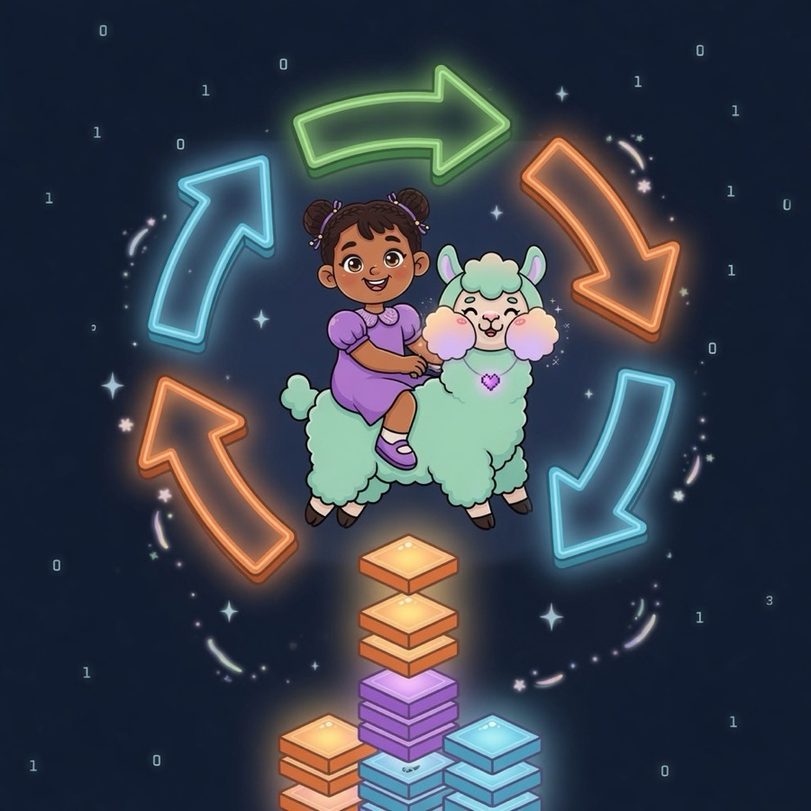
Тема днякарусель for
За развилкой на поляне крутилась карусель — только вместо лошадок на ней сидели числа. Аля стояла в центре, держала счётчик и на каждом круге прибавляла единицу: ноль, один, два… «Карусель повторяет одно и то же, — сказала она, — а счётчик помнит, который сейчас круг».
«А когда она остановится?» — спросила Марьям. «Когда счётчик дойдёт до края, — ответила Аля. — Я говорю ей: начни с нуля, крутись, пока меньше девяти, после каждого круга прибавь один. Это и есть for: старт, условие, шаг — три вещи в одной строчке».
Цикл for — самый частый инструмент в игре: пройти по всем клеткам, по всем фигурам в руке, по всем ходам бота. Сегодня напечатайте числа от 0 до 8 одним циклом и заметьте: программист начинает считать с нуля, а не с единицы. Это не ошибка, а традиция, и скоро вы поймёте, почему она удобна.
Аля толкнула карусель копытцем, и та закружилась: ноль, один, два, три… — на каждом обороте вспыхивала новая цифра, а маленький счётчик наверху щёлкал сам собой. Марьям попробовала остановить её на пятёрке и не смогла — карусель слушалась только правила, а не рук. «Она крутится ровно столько, сколько ты ей велела, — сказала Аля. — Ни оборотом меньше, ни оборотом больше».
🔬 Настоящее слово
Карусель альпаки по-настоящему называется цикл, а в коде — for. Он нужен, когда одно и то же действие надо повторить много раз, а переписывать его руками и лень, и глупо. Вместо ста строчек «напечатай число» пишут одну карусель, которая сама прокрутится сто раз.
У цикла for три части, как у карусели: с чего начать, до каких пор крутиться и на сколько шагать каждый раз. Запись for (int i = 0; i < 9; i++) читается так: «заведи счётчик i с нуля; пока i меньше девяти — работай; после каждого круга прибавь единицу». Значок i++ — короткая запись для «прибавь к i единицу».
Почему счёт начинается с нуля, а не с единицы? Это давняя традиция программистов, и скоро вы поймёте, до чего она удобна: когда на следующей неделе появятся списки, номер первой вещи в них тоже будет ноль. В нашей игре циклы повсюду: пройти все клетки доски, проверить каждый ряд, перебрать фигуры в руке. Сегодня вы соберёте первую карусель и напечатаете числа от нуля до восьми — ровно девять оборотов. И заметьте: карусель займёт всего одну строчку кода, а работу сделает за девятерых — в этом вся её сила.
🎯 Задание дня — вместе с папой
Открой course/week05_for/day029.dart
Напечатай числа от 0 до 8 циклом for.
Не спешим: одна маленькая победа за вечер — уже отлично.
Аля подвела Марьям к краю доски 9×9 и запустила сразу две карусели: одна крутила строки, другая — столбцы. Стрелка бежала по клеткам: первая строка слева направо, потом вторая, потом третья, — пока не обошла все восемьдесят одну. Марьям следила, как загораются клетки, и ни одна не осталась тёмной.
«Карусель внутри карусели, — объяснила Аля. — Внешняя говорит: «строка ноль», а внутренняя пробегает все девять столбцов. Потом внешняя говорит: «строка один», и внутренняя бежит снова». Марьям сосчитала: девять раз по девять — восемьдесят один, ровно столько клеток.
Вложенный for — способ обойти всё, что имеет два измерения: доску, таблицу, картинку. В нашей игре именно так проверяют, заполнен ли ряд, и ищут свободные места для фигуры. Сегодня пройдите вложенным циклом всю сетку 9×9 и напечатайте координаты каждой клетки — их должно получиться ровно восемьдесят одна.
Аля поставила одну карусель внутрь другой: большая крутила ряды, маленькая внутри неё — клетки в ряду. Марьям засмотрелась, как стрелка обходит доску змейкой: слева направо, потом на строчку ниже, и снова слева направо. «Внешняя выбирает строку, внутренняя — клетку, — объяснила Аля. — Вместе они не пропустят ни одной, даже если очень захотят».
🔬 Настоящее слово
Доска в нашей игре — квадрат девять на девять, восемьдесят одна клетка. Чтобы обойти их все, одной карусели мало: нужна карусель внутри карусели, по-научному — вложенный цикл. Внешний for шагает по строкам (их девять), а внутренний на каждом шаге внешнего пробегает все клетки этой строки.
Считать удобно так: внешний круг сделал один шаг — внутренний прокрутился целиком, все девять клеток. Внешний шагнул второй раз — внутренний снова девять. И так девять раз по девять: 9 × 9 = 81. Ни одна клетка не потеряется и ни одна не посчитается дважды. Обычно строку обозначают буквой r (row), а столбец — c (column), и у каждой клетки выходит пара координат (r, c).
Это не игрушечный приём — так устроена почти вся работа с доской в настоящем коде. Проверить, не заполнился ли ряд; перекрасить все клетки под новую тему; посчитать, сколько занято, — везде вложенный цикл по r и c. Сегодня пройдите доску девять на девять двумя вложенными каруселями и напечатайте координаты каждой клетки — их должно получиться ровно восемьдесят одна.
🎯 Задание дня — вместе с папой
Вложенным for пройди 9×9 (81 клетку).
Не спешим: одна маленькая победа за вечер — уже отлично.
На поляне стояла копилка, а к ней по одному подлетали числа: один, два, три, четыре… Каждое падало внутрь с тихим звоном, и копилка становилась тяжелее. «Сколько будет, если сложить всё от одного до ста?» — спросила Аля и хитро прищурилась.
Марьям попыталась считать в уме, сбилась на тридцати и махнула рукой. «А карусель не сбивается, — сказала Аля. — Она крутится сто раз, и на каждом круге бросает число в копилку. Ей всё равно — сто кругов или сто тысяч». Копилка звякнула последний раз и показала: 5050.
Цикл плюс переменная-накопитель — второй по важности приём после развилок: так считают сумму очков, число занятых клеток, количество ходов. Сегодня посчитайте сумму чисел от 1 до 100 циклом и заведите для ответа переменную с нулём в начале. Лу по секрету скажет, что то же самое можно посчитать одной формулой, но сначала — карусель.
Аля подкатила к карусели копилку, и на каждом обороте туда со звоном падало очередное число: сначала один, потом два, потом три… Марьям заглянула внутрь — там росла целая гора. «Считать по одному долго, — заметила она. — А карусель не устаёт», — и Аля хитро прищурилась: мол, есть способ ещё быстрее, но о нём как-нибудь потом.
🔬 Настоящее слово
Сегодня карусель не просто крутится, а копит. Заводят коробочку-копилку int sum = 0; ещё до цикла, а внутри на каждом обороте кладут в неё очередное число: sum = sum + i;. Так, шаг за шагом, из множества маленьких чисел собирается одно большое.
Копилку обязательно заводят снаружи цикла, а не внутри. Заведёшь внутри — и она будет обнуляться на каждом обороте, так и оставшись пустой. Это одна из самых частых ошибок с циклами, и стоит запомнить правило: то, что должно пережить все обороты, живёт снаружи карусели; то, что своё на каждом круге, — внутри. Приём «завести копилку и накапливать в цикле» программисты зовут аккумулятором.
Точно так же в игре набегают очки за партию: коробочка score живёт весь матч, а каждый удачный ход добавляет в неё немного. Сложить числа от одного до ста карусель может честно, оборот за оборотом. Есть, правда, и хитрая формула, считающая ту же сумму мгновенно, без всякого цикла, — но сначала почувствуйте карусель руками, а к формуле мы ещё вернёмся. Карусель медленнее формулы, зато честнее и понятнее — а на первых порах понятность дороже скорости.
🎯 Задание дня — вместе с папой
Посчитай сумму чисел от 1 до 100.
Не спешим: одна маленькая победа за вечер — уже отлично.
Аля включила карусель, и на стене поляны стала сама собой появляться таблица: пять, десять, пятнадцать, двадцать… Строчки выстраивались в столбик, ровные, как в тетради по математике. «Я её не пишу, — призналась Аля. — Я только сказала: для каждого числа от одного до десяти напечатай пять умножить на это число».
Марьям попросила таблицу на семь — и стена перерисовалась за секунду. Потом на двенадцать, потом на двадцать пять. «Одна строчка кода — любая таблица, — сказала Аля. — Повторяем действие, меняем счётчик, а рождается целая таблица».
Так рождается почти всё повторяющееся в игре: ряды клеток на экране, список рекордов, кнопки уровней. Сегодня напечатайте таблицу умножения на 5 одним циклом for. Постарайтесь, чтобы каждая строка выглядела как «5 × 3 = 15», а не просто «15», — так её приятнее читать.
Карусель закрутилась, и в воздухе сама собой стала выкладываться таблица: пять, десять, пятнадцать, двадцать… Марьям читала вслух и вдруг поняла, что не зубрит, а видит, как таблица рождается из простого правила. «Раньше я её боялась, — призналась она. — А это просто карусель, которая на каждом обороте прибавляет пятёрку».
🔬 Настоящее слово
Сегодня карусель показывает, что счётчик внутри цикла — не просто «сколько осталось кругов», а полезное число, с которым можно работать. На каждом обороте берут текущий i и печатают 5 * i — так рождается таблица умножения на пять.
Чтобы строка читалась приятнее, её собирают целиком: не просто «15», а «5 × 3 = 15». В Dart для этого есть удобная подстановка — значок $ внутри строки в кавычках: '5 × $i = ${5 * i}'. Простой $i подставляет значение счётчика, а ${…} с фигурными скобками — результат целого выражения. Это та же подстановка, что вы видели у функции-приветствия на неделе ламы Лу.
Такая сборка строк из кусочков и значений — ежедневная работа в любой программе. В нашей игре так же собирают счёт над доской («Марьям — 30»), подписи на кнопках, сообщение в конце партии. Сегодня напечатайте таблицу умножения на пять одной каруселью и сделайте так, чтобы каждая строка выглядела как «5 × 3 = 15», а не просто «15», — так её куда приятнее читать. Маленькая забота о том, кто будет это читать, — тоже часть ремесла программиста, и очень важная.
🎯 Задание дня — вместе с папой
Напечатай таблицу умножения на 5 циклом.
Не спешим: одна маленькая победа за вечер — уже отлично.
Марьям попросила карусель крутиться по-своему: не по единичке, а через две, потом с конца к началу, потом только по чётным. Аля с восторгом подстраивала счётчик: «Шаг можно любой! И старт любой! Главное — чтобы карусель когда-нибудь остановилась».
Марьям тут же придумала карусель, которая не останавливается: старт ноль, условие «меньше десяти», а шаг — минус один. Счётчик уходил всё дальше в минус, поляна закружилась, и Аля еле дотянулась до рубильника. «Вот это, — выдохнула она, — называется бесконечный цикл. Его боятся даже взрослые программисты».
for — самый частый инструмент программиста, и владеть им значит уметь задавать старт, условие и шаг под задачу. Сегодня напечатайте свою последовательность циклом: чётные до двадцати, обратный отсчёт от десяти, каждое третье число. И один раз, осторожно, сделайте бесконечный цикл — и остановите программу сами.
Аля предложила Марьям опасную забаву: запустить карусель, которая никогда не остановится. Марьям убрала условие остановки — и карусель завертелась как бешеная, засыпая экран числами без конца. «Быстро жми стоп!» — засмеялась Аля. Марьям нажала, карусель замерла, и обе выдохнули: теперь стало ясно, зачем каждой карусели нужна честная точка «до каких пор».
🔬 Настоящее слово
Сегодня новых команд нет — есть тренировка и одно важное предупреждение. Вы уже умеете крутить карусель заданное число раз; попробуйте свои последовательности: числа задом наперёд, только чётные, шаг через два. Управляют этим три части заголовка for — старт, условие и шаг; поменяйте любую, и карусель закрутится иначе.
А теперь про ловушку. Если условие остановки никогда не станет ложным — скажем, забыть прибавлять к счётчику, — карусель закрутится навсегда. Это называется бесконечный цикл: программа зависает, сыплет одним и тем же и не отвечает. Ничего страшного в этом нет, если помнить, как её остановить самому (обычно Ctrl+C в терминале). Каждому циклу нужна честная точка «до каких пор», иначе карусель не отпустит.
Именно поэтому в нашей игре у циклов всегда есть ясная граница: девять строк, восемьдесят одна клетка, столько-то фигур в руке. Сегодня потренируйте разные карусели, а потом нарочно, но осторожно, сделайте бесконечный цикл и остановите программу сами — чтобы этот зверь был вам знаком, а не страшен.
🎯 Задание дня — вместе с папой
Напечатай свою последовательность циклом.
Не спешим: одна маленькая победа за вечер — уже отлично.
Вечером Аля решила рисовать. Карусель крутилась, и на каждом круге на стене появлялась звёздочка: одна, две, три… пока не выросла целая строка из семи звёзд. «Цикл может не только считать, — сказала Аля, — он может рисовать, если каждый круг добавляет по кусочку».
Марьям попросила строку из двенадцати звёзд — и получила её мгновенно. Потом из трёх. Потом из ноля — и стена осталась пустой, что тоже было правильно. «Число звёзд — это вход, — заметила она. — Как в машине у Лу». Аля кивнула: цикл и функция отлично дружат.
Рисовать символами — старая и весёлая традиция программистов: так проверяют циклы, не запуская никакой графики. Сегодня напечатайте строку из N звёздочек ★, где N — переменная, и попробуйте разные N. Завтра из таких строк мы сложим пирамидку, и для этого понадобится карусель внутри карусели.
Аля выложила из светлячков первый ряд звёздочек — сначала одну, потом две в ряд, потом три. «Завтра из таких рядов мы сложим целую пирамидку, — пообещала она, — а сегодня научимся печатать один ряд нужной длины». Марьям представила сияющую пирамидку и загорелась: осталось понять, как из простого ряда вырастает целый узор.
🔬 Настоящее слово
Сегодня спокойный, подготовительный вечер: учимся печатать один ряд из нужного числа звёздочек — скажем, из пяти: ★★★★★. Делают это маленькой каруселью: заводят пустую строку String ряд = '';, а потом N раз подряд дописывают в неё по звёздочке.
Дописывать к строке умеет знакомый плюс: ряд = ряд + '★';. Строки в Dart складываются так же легко, как числа, только вместо суммы получается склейка: было «★★», стало «★★★». Как и с копилкой чисел, пустую строку заводят до цикла, а внутри лишь добавляют по кусочку. Один цикл — одна строка нужной длины.
Это заготовка к завтрашнему узору. Если один ряд печатает одна карусель, то целую пирамидку из рядов разной длины напечатает карусель внутри карусели: внешняя отвечает за номер ряда, внутренняя — за то, сколько звёздочек в этом ряду. Ту же вложенность вы уже встречали, когда обходили доску девять на девять. Сегодня научитесь уверенно печатать ряд из N звёздочек — завтра он станет этажом пирамиды. Сегодняшний тихий ряд — это фундамент завтрашнего узора: большое всегда начинается с уверенно освоенного маленького.
🎯 Задание дня — вместе с папой
Напечатай строку из N звёздочек ★.
Не спешим: одна маленькая победа за вечер — уже отлично.
Утром на стене поляны стояла пирамидка: одна звезда, под ней две, под ними три — и так до самого пола. Зверята смотрели снизу вверх, а Аля гордо крутила две карусели сразу: внешняя считала ряды, внутренняя — звёзды в ряду. «Ряд номер три — три звезды. Ряд номер пять — пять. Внутренняя карусель всегда слушает внешнюю».
Марьям попробовала сама и сначала получила прямоугольник: внутренняя карусель крутилась до одного и того же числа. Тогда она сказала внутренней: «крутись, пока меньше номера ряда», — и пирамидка сложилась. «Вот, — сказала Аля, — вложенный цикл, где внутренний зависит от внешнего. Это уже настоящее мастерство».
Мини-проект недели: постройте пирамидку из ★ вложенным for — ряд 1 из одной звезды, ряд 2 из двух, и так до N. Потом усложните: сделайте её перевёрнутой или выровняйте по центру пробелами. Циклы нарисовали целую пирамидку — а на следующей неделе котики покажут, где хранить много вещей сразу.
Пирамидка росла ряд за рядом — одна, две, три звёздочки, — пока не засияла целиком, как маленькая ёлочка. Марьям отступила на шаг и залюбовалась: две простые карусели, а получился настоящий узор. Аля довольно топнула: неделя каруселей закрылась, и где-то в стороне уже поблёскивали любопытные глаза котиков, ждущих своей очереди.
🔬 Настоящее слово
Мини-проект недели — пирамидка из звёздочек, и это встреча всего, что вы узнали про карусели. Первый ряд — одна звёздочка, второй — две, третий — три, и так до нужной высоты. Строит её вложенный цикл: внешняя карусель отсчитывает ряды, а внутренняя печатает в каждом ряду столько звёздочек, каков его номер.
Вся хитрость в связи двух каруселей: длина внутренней зависит от того, на каком шаге внешняя. На первом обороте внешней внутренняя крутится один раз, на втором — два, на третьем — три. Именно поэтому ряды растут, и получается пирамидка, а не прямоугольник. Если сделать длину внутренней всегда одинаковой, выйдет ровный столбик — попробуйте и так, чтобы почувствовать разницу.
Так из двух простых циклов рождается узор — а из простых правил вообще рождается всё сложное в программировании. За эту неделю у вас в руках третий инструмент после переменной и функции: цикл, повторение. Он умеет обойти доску, набрать сумму, построить узор. Сегодня сложите пирамидку вложенным for — а на следующей неделе котики покажут, где хранить много вещей сразу.
🎯 Задание дня — вместе с папой
Построй пирамидку ★ вложенным for (1,2,3… звезды).
Не спешим: одна маленькая победа за вечер — уже отлично.
Неделя 6. Семь вечеров по одной странице. Сначала смотрим картинку — по ней ясна тема дня. Не листаем вперёд.
День 36 · из 200 · тема: список
Много в одной коробке
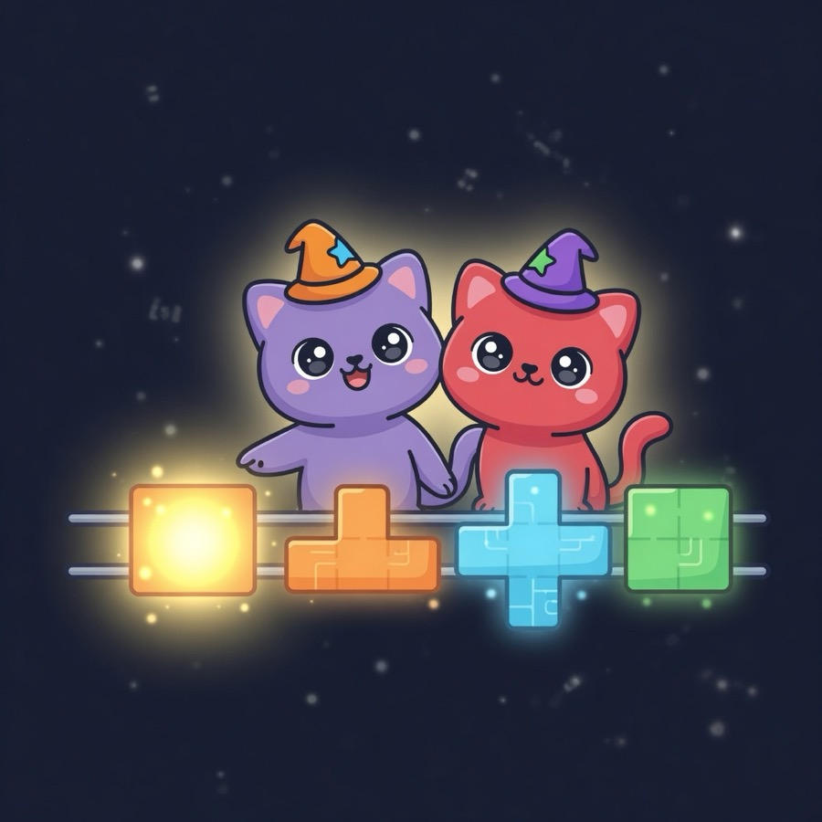
Тема днясписок
На краю поляны два котика — фиолетовый и рыжий — раскладывали вещи в длинный ряд: клубок, ключик, фигурку-«Т», ещё клубок. Над каждой вещью они ставили табличку с номером, и первая табличка была не «1», а «0». «Так принято, — мурлыкнул фиолетовый. — Первое место — нулевое».
«Один — переменная, а много — список, — объяснил рыжий, вылизывая лапу. — Коробочка По хранит одну вещь, а список — сколько угодно, и у каждой свой номер». Марьям спросила про третью вещь — и котики хором ответили: «номер два!».
Список в Dart называется List, и в квадратных скобках перечисляют его вещи через запятую. В нашей игре списки повсюду: доска — список рядов, рука — список фигур, рекорды — список очков. Сегодня заведите List<String> games с тремя названиями и напечатайте его целиком, а потом — вещь под номером ноль.
🎯 Задание дня — вместе с папой
Открой course/week06_lists/day036.dart
Заведи List<String> games = ['A','B','C']; и напечатай.
Не спешим: одна маленькая победа за вечер — уже отлично.
Котики играли в «добавь и убери»: фиолетовый приносил в ряд новую вещь и ставил её в конец, рыжий вытаскивал какую-нибудь из середины, и остальные вещи сами сдвигались, закрывая дырку. Номера на табличках при этом менялись. Марьям следила и путалась, пока не поняла правило: номер — это место, а не имя.
«Список умеет расти и уменьшаться, — сказал фиолетовый. — add кладёт в конец, remove убирает по имени, а length всегда знает, сколько вещей внутри». Рыжий добавил, что если убрать вещь, которой нет, список просто пожмёт плечами — ничего не сломается.
Именно так в игре живёт рука игрока: сыграл фигуру — remove, вытянул новую из мешка — add. Сегодня добавьте в свой список 'D', уберите 'A' и после каждого шага печатайте список и его length. Смотрите, как меняются номера у оставшихся вещей.
🎯 Задание дня — вместе с папой
.add('D') добавит, .remove('A') уберёт — проверь.
Не спешим: одна маленькая победа за вечер — уже отлично.
Рыжий котик пошёл вдоль ряда, трогая лапой каждую вещь по порядку: клубок, ключик, фигурка… Он не смотрел на номера — просто шёл от начала к концу, пока вещи не кончились. «Так проще всего, — сказал он. — Не «дай номер два», а «для каждой вещи в ряду — сделай»».
Марьям узнала карусель Али, только без счётчика. «Это for-in, — подтвердил фиолетовый. — Карусель для списков: идёт по вещам сама и на каждом круге даёт тебе очередную. Счётчик не нужен — и нельзя ошибиться на единицу». Марьям вспомнила вчерашнюю путаницу с номерами и обрадовалась.
Обход списка — самое частое действие в игре: показать все фигуры в руке, проверить все ряды, посчитать очки всех игроков. Сегодня пройдите свой список циклом for (final g in games) и напечатайте каждую вещь на отдельной строке. Потом попробуйте то же обычным for со счётчиком и сравните, какой вариант читается легче.
🎯 Задание дня — вместе с папой
Пройди список циклом for (final g in games).
Не спешим: одна маленькая победа за вечер — уже отлично.
Котики разложили на поляне карточки со словами и загадали: найти самое длинное. Рыжий побежал вдоль ряда, держа в лапе «пока что самое длинное», и каждый раз, встречая слово длиннее, менял карточку. К концу ряда в лапе была «карусель» — восемь букв.
«Ты только что склеила три вещи, — сказал фиолетовый Марьям, когда она повторила фокус в коде. — Карусель по списку, развилку «это длиннее?» и коробочку, где лежит лучший ответ. Из этих трёх кирпичей строится любой поиск».
В игре так ищут лучший ход: бот перебирает все варианты, сравнивает оценки и держит в коробочке самый выгодный. Сегодня найдите самое длинное слово в списке и напечатайте его. Подумайте, что вернёт ваш код для пустого списка — и не сломается ли он.
🎯 Задание дня — вместе с папой
Найди самое длинное слово в списке.
Не спешим: одна маленькая победа за вечер — уже отлично.
Котики притащили огромный клубок ниток и стали разматывать его в длинный список чисел. Марьям складывала их в копилку, как на неделе циклов, только теперь числа брались не со счётчика, а из списка. Сумма росла, клубок худел, и котики мурлыкали в такт.
«Список — не только для слов, — сказал рыжий. — Числа, да-нет, даже другие списки — всё можно уложить в ряд». Марьям попробовала список из списков и представила себе доску: девять рядов, в каждом девять клеток. «Это же наша доска!» — воскликнула она, и котики довольно переглянулись.
Списки — основа всего в игре: доски, руки, истории ходов, таблицы рекордов. Сегодня сделайте список чисел, посчитайте их сумму циклом for-in и найдите самое большое. Если хватит сил — попробуйте список из трёх списков и напечатайте его как таблицу.
🎯 Задание дня — вместе с папой
Сделай список чисел и посчитай их сумму.
Не спешим: одна маленькая победа за вечер — уже отлично.
Фиолетовый котик протянул Марьям три светящиеся фигурки — длинную «I», квадрат «O» и угловатую «L». «Это рука, — сказал он. — В игре у тебя всегда несколько фигур, и ты выбираешь, какую поставить». Марьям сложила их в ряд и подписала номера: ноль, один, два.
«Рука игрока — это тоже список, — объяснил рыжий. — Сыграла фигуру — она уходит, из мешка приходит новая. Пока рука не пуста, партия продолжается». Марьям поняла, что за всю неделю ни разу не видела ничего нового: рука — тот же список, что и games.
Сегодня — подготовка к мини-проекту: заведите список из трёх фигур, пока просто строками — 'I', 'O', 'L'. Напечатайте руку, уберите одну фигуру, добавьте новую и напечатайте снова. Завтра рука станет настоящей: с выбором по номеру и пополнением из мешка.
🎯 Задание дня — вместе с папой
Заведи список из трёх фигур (строками).
Не спешим: одна маленькая победа за вечер — уже отлично.
К концу недели в лапке фиолетового котика лежала аккуратная рука фигур, и все зверята по очереди играли: называли номер, фигура уходила на доску, из мешка приходила новая. Рыжий следил, чтобы никто не назвал номер, которого нет, — иначе список обидится. По хранил очки, Лу считала, Аля кричала «больше!» и «меньше!».
«Смотри, что у тебя есть, — сказал фиолетовый. — Коробочки По, машины Лу, развилки и карусели Али и наши списки. Из этих пяти вещей собрана вся игра — честно, без волшебства». Марьям посмотрела на доску под ногами и впервые увидела в ней не свет, а код.
Мини-проект недели: сделайте список-руку, добавьте фигуру, уберите по номеру, показывайте руку после каждого шага и проверьте, что номер не выходит за край списка. Шесть недель закрыты — основы в руках. Дальше начинаются главы про саму игру: классы, доска, честная случайность.
🎯 Задание дня — вместе с папой
Сделай список-руку: добавь, убери, покажи фигуры.
Не спешим: одна маленькая победа за вечер — уже отлично.
Неделя 7 · Классы. Шесть недель основ позади — теперь мы учимся описывать свои вещи. Котики покажут чертёж, по которому можно наделать сколько угодно одинаковых коробочек.
День 43 · из 200 · тема: класс — чертёж
Коробочка с двумя окошками
Фиолетовый котик притащил на поляну странную коробочку: у неё было два окошка, и над каждым — подпись. В одно окошко он положил слово «Мурзик», в другое — слово «фиолетовый». Коробочка мигнула, будто ожила, и котик довольно замурлыкал.
«Коробочка По хранит одну вещь, — сказал он Марьям. — А если вещь сложная, как котик, у неё несколько свойств: имя, цвет, возраст. Тогда мы рисуем класс — чертёж коробочки с несколькими окошками. Каждое окошко называется поле».
В нашей игре почти всё описано классами: клетка доски, фигура, игрок, ход. Сегодня вы нарисуете первый чертёж — class Котик с двумя полями, String имя и String цвет. Это первый шаг от «коробочек» к настоящим программам.
🎯 Задание дня — вместе с папой
Открой course/week07_classes/day043.dart.
Опиши class Котик { String имя; String цвет; } — чертёж с двумя полями.
Ничего не создавай — сегодня только чертёж.
Не спешим: одна маленькая победа за вечер — уже отлично.
Утром на поляне сидели три котика — но не настоящих, а сделанных по вчерашнему чертежу. У первого на бирке было «Мурзик, фиолетовый», у второго — «Рыжик, рыжий», у третьего — «Снежок, белый». Марьям пересчитала: чертёж один, а котиков три.
«Чертёж — это класс, а каждый котик — объект, — объяснил рыжий. — Объект делают по чертежу, и у него свои значения в окошках. Сломал одного — остальные целы, ведь у каждого свои поля». Марьям попробовала поменять цвет Снежка на серый — и Мурзик остался фиолетовым.
Так в игре из одного класса Cell делают восемьдесят одну клетку доски, и у каждой своё содержимое. Сегодня создайте трёх котиков по чертежу через Котик(), заполните поля и напечатайте их. Убедитесь, что изменение одного не трогает других.
🎯 Задание дня — вместе с папой
Создай трёх котиков: `final a = Котик(); a.имя = 'Мурзик'; …`
Напечатай имя и цвет каждого.
Поменяй цвет одного — проверь, что другие не изменились.
Не спешим: одна маленькая победа за вечер — уже отлично.
Котики повели Марьям к самой доске и показали одну клетку под ногами. На ней светились две подписи: «занята?» и «чья?». «Это тоже коробочка по чертежу, — сказал фиолетовый. — Чертёж называется Cell, и все восемьдесят одна клетка сделаны по нему».
Марьям заглянула в настоящий файл и увидела короткий класс: поле bool filled — занята ли клетка, и поле int? owner — чья она, ноль или один, а знак вопроса значит «может быть никто». «Всего два окошка, — удивилась она. — А целая игра держится».
Сегодня — чтение настоящего кода: откройте lib/core/board.dart и найдите class Cell. Прочитайте оба поля и придумайте вслух, что лежит в клетке, куда только что поставили фигуру первого игрока. Чертёж клетки — самый маленький класс в игре, и он отличный, чтобы начать.
🎯 Задание дня — вместе с папой
Открой lib/core/board.dart, найди class Cell.
Выпиши в тетрадь оба поля и их типы (bool, int?).
Скажи вслух: что в клетке после хода игрока 0?
Не спешим: одна маленькая победа за вечер — уже отлично.
Рыжий котик заявил, что настоящий котик не только имеет имя и цвет, но и умеет мяукать. Он дописал в чертёж маленькую функцию прямо внутри фигурных скобок — и теперь каждый котик, сделанный по чертежу, умел сказать «Мяу, я Мурзик!». Марьям вспомнила машины Лу и обрадовалась: функция и здесь пригодилась.
«Функция внутри класса называется метод, — объяснил фиолетовый. — Она видит поля своего объекта: Мурзик мяукает от своего имени, Рыжик — от своего. Ей не нужно передавать имя в воронку — оно уже внутри».
В игре у класса мешка есть метод draw() — вытянуть фигуру, а у генератора случайности — next(). Сегодня добавьте котику метод void мяу(), который печатает приветствие с его именем, и позовите его у каждого из трёх котиков. Заметьте, что метод зовут через точку: a.мяу().
🎯 Задание дня — вместе с папой
Добавь в класс метод void мяу() { print("Мяу, я $имя!"); }.
Позови мяу() у всех трёх котиков.
Придумай второй метод — например, представиться с цветом.
Не спешим: одна маленькая победа за вечер — уже отлично.
Марьям заметила, что делать котиков долго: создать, потом заполнить одно окошко, потом второе. Фиолетовый котик кивнул и показал фокус: он написал в чертеже особую строчку, и теперь котик рождался сразу с именем и цветом — одним движением. «Это конструктор, — сказал он. — Правило, как собирать объект с самого начала».
«Смотри на настоящую клетку, — добавил рыжий. — Cell({this.filled = false, this.owner}) — это тоже конструктор: пока не сказали иначе, клетка пустая и ничья. Хороший конструктор даёт объекту честное начальное состояние, как ноль в коробочке очков».
Сегодня допишите котику конструктор Котик(this.имя, this.цвет) и создавайте котиков одной строкой: Котик("Мурзик", "фиолетовый"). Потом сравните с конструктором Cell в игре — там значения по умолчанию, чтобы пустую доску было легко собрать. Так одна строчка чертежа экономит сотни строк дальше.
🎯 Задание дня — вместе с папой
Добавь конструктор Котик(this.имя, this.цвет);.
Пересоздай трёх котиков одной строкой каждый.
Сравни с Cell(...) в lib/core/board.dart — где значения по умолчанию?
Не спешим: одна маленькая победа за вечер — уже отлично.
По прискакал на поляну с двумя старыми коробочками — имя и очки — и пожаловался, что носить их по отдельности неудобно. Котики переглянулись и нарисовали чертёж «Игрок» с тремя окошками: ник, очки и серия подряд. Пони сложил свои коробочки внутрь и вздохнул с облегчением.
«Класс собирает вместе всё, что относится к одной вещи, — сказал фиолетовый. — Игрок — это не имя и не очки по отдельности, а имя, очки и серия вместе. Когда они вместе, их нельзя перепутать: очки Марьям не убегут к очкам По».
В игре игрок описан похожим классом, только полей больше: рейтинг, уровень, аватар. Сегодня опишите class Игрок с полями String nick, int score, int combo и конструктором. Создайте двух игроков — себя и По — и напечатайте их карточки.
🎯 Задание дня — вместе с папой
Опиши class Игрок с тремя полями и конструктором.
Создай двух игроков и напечатай «ник — очки — серия».
Прибавь одному 15 очков и напечатай снова.
Не спешим: одна маленькая победа за вечер — уже отлично.
К концу недели поляна была полна объектов: котики, клетки, игроки. Марьям построила по чертежу «Игрок» себя и По и устроила им партию. Каждый ход она звала метод — и очки у нужного игрока росли, а серия считалась сама.
«Неделю классов закрыли, — объявил фиолетовый. — Теперь ты умеешь описывать вещи целиком: поля хранят, методы делают, конструктор даёт честное начало». Рыжий добавил, что вся игра — это просто много таких чертежей, аккуратно сложенных вместе.
Мини-проект недели: доведите class Игрок — три поля, конструктор и метод победа(int очки), который прибавляет очки и увеличивает серию. Создайте двух игроков, сыграйте три «хода» и напечатайте итоговые карточки. Сравните с тем, как класс игрока устроен в игре.
🎯 Задание дня — вместе с папой
Добавь метод void победа(int очки): очки += , combo++.
Сыграй три хода двумя игроками и напечатай карточки.
Придумай метод «проигрыш», который обнуляет серию.
Не спешим: одна маленькая победа за вечер — уже отлично.
Неделя 8 · Доска 9×9. Клетка у нас есть — теперь соберём из клеток целую доску. Девять рядов по девять клеток: список списков, по которому можно ходить как по полу.
День 50 · из 200 · тема: доска из клеток
Девять рядов по девять
Котики решили построить доску заново — не ту, что светилась под ногами, а свою, из клеток по чертежу Cell. Фиолетовый выкладывал клетки в ряд, пока не получилось девять, а рыжий ставил готовые ряды один под другим. Когда рядов стало девять, доска замкнулась в квадрат и тихо загудела.
«Ряд — это список клеток, — сказал фиолетовый. — А доска — список рядов. Значит, доска — это список списков: снаружи девять рядов, внутри каждого девять клеток». Марьям вспомнила клубок из недели списков и кивнула: она тогда уже угадала.
В ядре игры это записано одной строчкой: typedef Board = List<List<Cell>>. Сегодня откройте lib/core/board.dart, найдите функцию emptyBoard() и прочитайте, как два вложенных цикла собирают восемьдесят одну пустую клетку. Это те самые карусели Али, только внутри функции Лу.
🎯 Задание дня — вместе с папой
Открой lib/core/board.dart, найди emptyBoard().
Прочитай оба цикла вслух: внешний — ряды, внутренний — клетки.
Сколько раз позовётся Cell()? Проверь: 9 × 9.
Не спешим: одна маленькая победа за вечер — уже отлично.
Сегодня Марьям строила доску сама, без котиков. Внешняя карусель — девять раз, внутренняя — девять раз, и на каждом круге — новая клетка по чертежу. Когда она напечатала длину доски и длину первого ряда, оба числа оказались девятками, и доска довольно мигнула.
«Пустая доска — это не «ничего», — заметил рыжий, подкравшись сзади. — Это восемьдесят одна клетка, у каждой filled равно false. Пустота в программе тоже надо построить». Марьям подумала, что это похоже на ноль в коробочке очков: пусто, но честно.
Сегодня соберите свою emptyBoard() из Cell() двумя вложенными циклами и проверьте размеры: board.length и board[0].length. Потом сравните с настоящей функцией — в ядре она записана короче, через генератор списка, но делает ровно то же. Заметьте, что размер доски — тоже число из настроек, а не магия.
🎯 Задание дня — вместе с папой
Собери доску 9×9 из Cell() двумя вложенными for.
Напечатай board.length и board[0].length.
Сравни со строчкой в ядре — найди, где там «9».
Не спешим: одна маленькая победа за вечер — уже отлично.
Марьям взяла фонарик и пошла по доске: первый ряд слева направо, потом второй, потом третий. Под лучом каждая клетка на секунду вспыхивала и сообщала свои координаты — ряд и столбец. К концу прогулки она насчитала восемьдесят одну вспышку и ни одной пропущенной.
«Координаты — это два числа, — сказал фиолетовый. — Первое — ряд, второе — столбец, оба от нуля. Клетка board[r][c] — сначала выбираем ряд, потом клетку в нём». Марьям заметила, что первое число — «этаж», а второе — «квартира», как в доме.
В игре по доске ходят постоянно: чтобы найти полные ряды, посчитать дырки, проверить, есть ли вообще ход. Сегодня пройдите свою доску вложенным циклом и напечатайте координаты каждой клетки в виде «(r, c)». Убедитесь, что первая — (0, 0), а последняя — (8, 8).
🎯 Задание дня — вместе с папой
Пройди доску вложенным for по r и c.
Напечатай (r, c) для каждой клетки — 81 строка.
Проверь первую и последнюю пару.
Не спешим: одна маленькая победа за вечер — уже отлично.
Рыжий котик прыгнул на клетку в третьем ряду и пятом столбце — и она загорелась ярче остальных. «Теперь она занята, — сказал он. — И она моя». Марьям заглянула внутрь клетки: там было записано «занята — да, чья — ноль».
«Чтобы отметить клетку, меняем её поля, — объяснил фиолетовый. — board[2][4].filled = true и board[2][4].owner = 0. Помнишь, ряды и столбцы считаются с нуля? Третий ряд — это номер два». Марьям чуть не написала три и вовремя поймала себя.
Так игра отмечает каждую клетку, куда легла фигура: четыре клетки — четыре отметки. Сегодня займите одну клетку своей доски, а потом пройдите всю доску циклом и найдите её — напечатайте координаты первой занятой. Это маленький поиск, как самое длинное слово на неделе списков.
🎯 Задание дня — вместе с папой
Отметь board[2][4]: filled = true, owner = 0.
Пройди доску и найди занятую клетку — напечатай (r, c).
Займи ещё одну и найди обе.
Не спешим: одна маленькая победа за вечер — уже отлично.
Марьям захотела увидеть свою доску целиком, а не по одной клетке. Котики предложили старый трюк: пустую клетку печатать точкой, занятую — решёткой, а в конце каждого ряда переходить на новую строку. Через минуту на экране появился квадрат из точек с одной решёткой — ровно там, где сидел рыжий.
«Это называется отладочная печать, — сказал фиолетовый. — Когда картинки ещё нет, программист рисует символами, чтобы видеть, что происходит внутри». Марьям вспомнила пирамидку из звёзд — тот же приём, только теперь рисуют не узор, а состояние.
В ядре игры есть похожие помощники для тестов: доску превращают в строки, чтобы сравнивать «ожидали — получили». Сегодня напишите функцию печать(board): вложенный цикл, точка или решётка по filled, перевод строки в конце ряда. Дальше она станет вашими глазами на всю оставшуюся книгу.
Котики решили проверить, что будет, если занять целый ряд. Рыжий прыгал по клеткам нулевого ряда — раз, два, три… девять — и все они загорались. Когда последняя вспыхнула, весь ряд задрожал, как будто хотел исчезнуть, но котики пока не разрешили.
«Полный ряд — это когда все девять клеток заняты, — сказал фиолетовый. — Проверить это можно циклом, а можно одним словом: board[0].every((c) => c.filled) — «каждая клетка занята?». Это функция для списков, которая задаёт вопрос всем вещам сразу».
Полный ряд — сердце игры: именно он гаснет и приносит очки, и на неделе очистки мы заставим его исчезать. Сегодня заполните нулевой ряд циклом, напечатайте доску и проверьте условие «каждая занята» для нулевого и для первого ряда — одно должно дать да, другое нет. Одно слово вместо целого цикла — так выглядит взрослый код.
🎯 Задание дня — вместе с папой
Заполни board[0] циклом: все filled = true.
Проверь board[0].every((c) => c.filled) и то же для board[1].
Напечатай доску своей функцией.
Не спешим: одна маленькая победа за вечер — уже отлично.
К концу недели у Марьям была своя доска: пустая, потом с отметками, потом с целым рядом. Она печатала её точками и решётками после каждого шага и чувствовала себя настоящим программистом — видела то, что внутри. Котики сидели по бокам экрана, как два сторожа.
«Неделю доски закрыли, — сказал рыжий. — Ты умеешь собрать доску, пройти её, отметить клетку и показать себе. Дальше на эту доску будут ложиться фигуры». Фиолетовый добавил, что настоящая доска игры устроена точно так же — просто у неё больше помощников вокруг.
Мини-проект недели: соберите всё в один файл — emptyBoard(), отметка нескольких клеток, полный ряд и печать(). Напечатайте доску три раза: пустую, с отметками, с полным рядом. Сравните с тем, как это устроено в lib/core/board.dart.
🎯 Задание дня — вместе с папой
Один файл: пустая доска → отметки → полный ряд.
Печатай доску после каждого шага.
Найди в board.dart функцию, которая ищет полные ряды.
Не спешим: одна маленькая победа за вечер — уже отлично.
Неделя 9 · Честная случайность. Игре нужна случайность: какая фигура придёт следующей? Но случайность должна быть честной — одинаковой у двух игроков и повторяемой для проверки. Лу знает, как это устроить.
День 57 · из 200 · тема: зерно случайности
Зёрнышко, из которого растут числа
Лу стояла на лугу с крошечным светящимся зерном в копытце. Она положила его в землю — и из земли выросла цепочка чисел, одно за другим, как бусины на нитке. Марьям смотрела, как числа тянутся вверх, и не могла угадать, какое будет следующим.
«Компьютер не умеет бросать кубик по-настоящему, — сказала Лу. — Он считает следующее число из предыдущего по хитрой формуле. А первое число — это зерно, seed. Дай зерно — вырастет цепочка».
В нашей игре зерно называется matchSeed, и из него растёт всё: порядок фигур, мешок, даже ходы бота. Сегодня откройте lib/core/rng.dart и найдите класс Mulberry32 — это и есть наша «формула роста». Читать её целиком не нужно, найдите только конструктор с зерном и метод next().
🔬 Настоящее слово
Взрослые называют такую «формулу роста» генератором псевдослучайных чисел (PRNG), а Mulberry32 — его конкретный рецепт: горстка сложений и битовых сдвигов, которая из одного 32-битного числа делает следующее. Формулу не нужно заучивать — важно другое, и это по-настоящему: одинаковое зерно всегда даёт одну и ту же цепочку. Это свойство называется детерминизм; благодаря ему онлайн честный (сервер и оба игрока считают одинаково), реплеи повторяются, а тесты не «мигают». «Псевдо» значит «как будто»: числа выглядят случайными, но полностью предсказуемы, если знаешь зерно.
🎯 Задание дня — вместе с папой
Открой lib/core/rng.dart, найди class Mulberry32.
Найди конструктор (принимает int seed) и метод next().
Что возвращает next() — целое или дробное? Прочитай тип.
Не спешим: одна маленькая победа за вечер — уже отлично.
Лу достала кубик и бросила: выпало четыре. Потом сказала «зерно сорок два» и бросила ещё раз — снова четыре. И ещё раз — четыре. Марьям засмеялась: «Так это нечестный кубик!» — «Наоборот, — ответила Лу. — Самый честный: он никогда не врёт про своё зерно».
«Создаёшь Mulberry32(42) — и зовёшь next() пять раз. Получишь пять чисел от нуля до единицы. Создашь ещё раз с тем же зерном — получишь те же пять, в том же порядке». Марьям поняла: случайность здесь — не хаос, а очень длинный список, который просто никто не читал заранее.
Сегодня создайте final rng = Mulberry32(42), позовите rng.next() пять раз и запишите числа в тетрадь. Завтра мы проверим, что второй кубик с тем же зерном даст ровно те же числа — и поймём, зачем это нужно двум игрокам через океан. Записанные числа пригодятся уже завтра.
🎯 Задание дня — вместе с папой
Создай Mulberry32(42) и позови next() пять раз.
Запиши пять чисел в тетрадь.
Перезапусти программу — числа те же?
Не спешим: одна маленькая победа за вечер — уже отлично.
Лу посадила два зерна с одной подписью — «42» — в двух концах луга. Из обоих выросли цепочки, и Марьям пошла вдоль них, сравнивая бусину за бусиной. Все совпали: первая с первой, десятая с десятой, сотая с сотой.
«Вот зачем зерно, — сказала Лу. — Ты в одном городе, соперник в другом. Сервер даёт вам одно зерно — и у вас обоих выпадают одни и те же фигуры в одном и том же порядке. Никто не может сказать «мне не повезло»». Это и называется детерминизм: одинаковый вход — одинаковый выход.
В игре есть тесты, которые проверяют ровно это: два Mulberry32 с одним зерном обязаны совпасть до последнего знака. Сегодня создайте два генератора с зерном 42, позовите у каждого next() по десять раз и сравните пары через ==. Если хоть одна пара не совпала — что-то сломано.
🎯 Задание дня — вместе с папой
Создай два Mulberry32(42) — a и b.
Десять раз сравни a.next() == b.next() и напечатай результат.
Все десять — true?
Не спешим: одна маленькая победа за вечер — уже отлично.
Марьям посадила зерно с подписью «43» — всего на единицу больше. Выросла цепочка, совсем не похожая на вчерашнюю: другие числа, другой порядок, ничего общего. Лу кивнула: «Маленькая разница в зерне — совсем другая партия».
«Так каждая партия в игре получается новой, — объяснила она. — Сервер выбирает новое зерно, и фигуры приходят в новом порядке. Но зерно записывается, и партию можно повторить целиком — это называется реплей». Марьям представила, как пересматривает свой лучший матч, ход за ходом.
Сегодня создайте генераторы с зёрнами 42 и 43 и напечатайте по пять чисел из каждого рядом. Потом попробуйте зерно 0 и очень большое. Заметьте: цепочки разные, но каждая — повторяемая. Именно так в игре получается «случайно, но честно».
🎯 Задание дня — вместе с папой
Напечатай по пять чисел для зёрен 42 и 43 рядом.
Попробуй зерно 0 и 999999.
Перезапусти — каждая цепочка повторилась?
Не спешим: одна маленькая победа за вечер — уже отлично.
Марьям заметила, что next() даёт дробные числа от нуля до единицы, а кубику нужны целые от одного до шести. Лу улыбнулась и показала: умножь дробь на шесть, отбрось хвост, прибавь один. Дробь 0.5 стала четвёркой, 0.01 — единицей, 0.99 — шестёркой.
«Это маленькая функция-переводчик, — сказала Лу. — Вход — дробь, выход — грань кубика. В игре такая же превращает дробь в номер фигуры из семи». Марьям сложила её из знакомых кусочков: умножение, floor, плюс один.
Сегодня напишите функцию int кубик(Mulberry32 rng), которая возвращает от 1 до 6, и бросьте кубик двадцать раз с зерном 7. Проверьте, что никогда не выпадает ноль или семь. Завтра мы проверим, что кубик честный — все грани выпадают.
🎯 Задание дня — вместе с папой
Напиши int кубик(rng) => (rng.next() * 6).floor() + 1;.
Брось двадцать раз с зерном 7 и напечатай.
Есть ли 0 или 7? Не должно быть.
Не спешим: одна маленькая победа за вечер — уже отлично.
Лу предложила проверку: бросить кубик шестьсот раз и посчитать, сколько раз выпала каждая грань. Марьям завела список из шести нулей и на каждом броске прибавляла единицу к нужной ячейке. К концу все шесть чисел были около ста — не ровно, но близко.
«Честная случайность — не значит «по очереди», — сказала Лу. — Значит, что в долгую все грани выпадают примерно поровну и никто не знает следующую». Марьям поняла: список-счётчик и цикл — снова знакомые кирпичи, а идея новая.
Так в игре проверяют мешок фигур: за много партий каждая фигура приходит примерно одинаково часто. Сегодня заведите List<int> счёт = [0,0,0,0,0,0], бросьте кубик шестьсот раз и напечатайте счётчик. Подумайте, почему числа не ровно сто — и хорошо ли это.
🎯 Задание дня — вместе с папой
Заведи список из шести нулей.
Шестьсот бросков: счёт[грань - 1]++.
Напечатай счётчик — все около 100?
Не спешим: одна маленькая победа за вечер — уже отлично.
К концу недели у Марьям был свой кубик — маленькая программа, которой достаточно сказать зерно, и она выдаст те же броски хоть завтра, хоть через год. Лу проверила: два кубика с зерном сорок два бросали одинаково, а с сорок третьим — по-другому. «Это и есть честная случайность», — сказала она.
«Теперь ты понимаешь главный секрет онлайн-игры, — добавила Лу. — Два игрока получают одно зерно, и им приходят одинаковые фигуры. Никто не может подкрутить удачу — а сервер может проверить любой ход заново». Марьям подумала, что честность — это просто хорошо записанное правило.
Мини-проект недели: соберите «кубик» из Mulberry32 и функции кубик(), добавьте проверку «два кубика с одним зерном совпадают» и счётчик граней. Всё в одном файле, с печатью результатов. На следующей неделе из этого кубика вырастет мешок фигур.
🎯 Задание дня — вместе с папой
Один файл: генератор + кубик + сравнение двух зёрен + счётчик.
Напечатай всё и убедись, что повторяется при перезапуске.
Найди в lib/core/bag.dart, где мешок берёт Mulberry32.
Не спешим: одна маленькая победа за вечер — уже отлично.
Неделя 10 · Мешок фигур. Из кубика с зерном вырастает мешок: семь фигур, перетасованных честно. Один seed — один и тот же порядок фигур у обоих игроков.
День 64 · из 200 · тема: мешок семи фигур
Мешок, в котором ровно семь
Лу принесла на луг бархатный мешок. Марьям сунула руку — и вытащила длинную «I». Ещё раз — квадрат «O». Ещё — «T», «S», «Z», «J», «L». На восьмой раз мешок оказался пуст, а потом сам собой наполнился снова.
«Это 7-bag, — сказала Лу. — В мешке лежит по одной фигуре каждого вида, всего семь. Ты вытягиваешь их по очереди, пока не кончатся, и тогда мешок наполняется заново. Так не бывает, что «Т» не приходит пять раз подряд — это было бы нечестно».
В игре мешок описан классом Bag в lib/core/bag.dart: ему дают зерно, а он выдаёт фигуры методом draw(). Сегодня откройте файл и найдите, где мешок наполняется семью типами и где он тасует их через Mulberry32. Прошлая неделя была именно для этого.
🎯 Задание дня — вместе с папой
Открой lib/core/bag.dart, найди class Bag.
Найди, где создаётся Mulberry32(seed) и где семь типов фигур.
Найди метод draw() — что он возвращает?
Не спешим: одна маленькая победа за вечер — уже отлично.
Марьям создала свой мешок с зерном 4242 и стала тянуть: draw(), ещё draw(), семь раз подряд. Фигуры ложились в ряд на траву, и все семь были разными — ни одной повторной. Лу пересчитала и одобрительно кивнула.
«Первые семь — всегда все разные, — сказала она. — Это обещание мешка. А вот в каком порядке они придут, решает зерно». Марьям записала порядок в тетрадь: сегодня это была её собственная партия, которую можно повторить.
Сегодня создайте Bag(4242), позовите draw() семь раз и напечатайте тип каждой фигуры. Проверьте, что все семь разные. Подсказка: положите типы в список и сравните его длину с длиной набора уникальных — toSet().length.
🎯 Задание дня — вместе с папой
Создай Bag(4242) и вытяни 7 фигур через draw().
Напечатай типы по порядку.
Проверь: типы.toSet().length == 7.
Не спешим: одна маленькая победа за вечер — уже отлично.
Лу поставила рядом два мешка и написала на обоих «4242». Марьям тянула из левого, По — из правого, и каждый раз у них в руках оказывались одинаковые фигуры: «Т» и «Т», «I» и «I». Пони удивился, а Марьям уже знала, почему.
«Одно зерно — одна цепочка, — сказала Лу. — Мешок просто спрашивает у кубика, кого вытащить следующим, а кубик с одним зерном отвечает одинаково». Так два игрока через океан получают одни и те же фигуры без всякой пересылки — хватает одного числа.
Сегодня создайте два мешка с зерном 4242 и вытяните из каждого по четырнадцать фигур — два полных круга. Сравните пары по типу: все должны совпасть. В тестах игры есть ровно такая проверка, и на следующей неделе тестов вы напишете её своими руками.
🎯 Задание дня — вместе с папой
Создай два Bag(4242): a и b.
Четырнадцать раз сравни a.draw().type == b.draw().type.
Все совпали? Смени зерно у одного — что изменилось?
Не спешим: одна маленькая победа за вечер — уже отлично.
Марьям решила собрать мешок сама, из кубика прошлой недели и списка. Она положила в список семь букв — I, O, T, S, Z, J, L, — а потом перетасовала их: шла с конца к началу и на каждом шаге менялась местами со случайной позицией, которую подсказывал кубик. Лу наблюдала молча, как обычно, когда Марьям строила своё.
«Это тасовка Фишера–Йетса, — сказала Лу, когда список перемешался. — Самая честная: каждый порядок одинаково возможен. И повторяемая, потому что кубик с зерном». Марьям сравнила свой мешок с настоящим — порядок отличался, но принцип был тот же.
Сегодня напишите функцию перетасовать(list, rng): цикл от конца к началу, случайный индекс из rng.next(), обмен местами. Перетасуйте семь букв с зерном 4242 и напечатайте. Перезапустите — порядок должен повториться.
🎯 Задание дня — вместе с папой
Список из семи букв I O T S Z J L.
Тасовка: for i от 6 до 1, j = (rng.next() * (i + 1)).floor(), обмен.
Напечатай, перезапусти — тот же порядок?
Не спешим: одна маленькая победа за вечер — уже отлично.
Марьям вытянула из своего мешка все семь фигур и потянулась за восьмой — а список был пуст. Программа обиженно упала с ошибкой. Лу подошла: «Настоящий мешок в этот момент наполняется заново. Твой пока не умеет».
«Добавь развилку, — сказала она. — Если список пуст — наполни его семью буквами и перетасуй. Потом отдай первую». Марьям вспомнила if Али и add котиков — и мешок научился не кончаться никогда.
Так устроен и настоящий Bag.draw(): проверил, не пусто ли, при нужде наполнил, отдал следующую. Сегодня допишите свой мешок методом вытянуть() с такой развилкой и вытяните двадцать одну фигуру — три полных круга. В каждом круге все семь должны быть разными.
🎯 Задание дня — вместе с папой
Метод вытянуть(): если пусто — наполни и перетасуй; отдай первую.
Вытяни 21 фигуру и напечатай по 7 в строке.
В каждой строке все семь разные?
Не спешим: одна маленькая победа за вечер — уже отлично.
Котики заглянули на луг и напомнили про руку из недели списков: у игрока всегда несколько фигур на выбор. Марьям вытянула из мешка три фигуры и положила их в список-руку. Сыграла одну — вытянула новую на её место. Рука всегда оставалась полной.
«Мешок и рука работают вместе, — сказала Лу. — Мешок отвечает за честность, рука — за выбор. Игрок видит три фигуры и думает, какую поставить». Марьям поняла, что за две недели собрала целый кусок игры, не заметив.
В игре рука и мешок живут в состоянии партии, и у каждого игрока свой мешок с одним зерном (sharedBag = false). Сегодня соберите руку из трёх фигур своего мешка, «сыграйте» вторую (уберите по номеру) и дотяните новую. Печатайте руку после каждого шага.
🎯 Задание дня — вместе с папой
Рука = три вытянуть() подряд.
Убери фигуру под номером 1, вытяни новую в конец.
Напечатай руку до и после.
Не спешим: одна маленькая победа за вечер — уже отлично.
К концу недели у Марьям был свой мешок: семь фигур, честная тасовка, пополнение и рука из трёх. Лу устроила экзамен: два мешка с одним зерном — совпали; двадцать один ход — в каждом круге все семь разные; смена зерна — новый порядок. Марьям сдала всё.
«Ты собрала ту часть игры, которую не видно на экране, — сказала Лу. — Но именно она делает игру честной. Без неё любой мог бы сказать: мне просто не повезло». Марьям решила, что невидимые части ей нравятся не меньше видимых.
Мини-проект недели: напишите проверку «два мешка с одним зерном выдают одинаковые фигуры» — сначала для своего мешка, потом для настоящего Bag. Оформите как функцию, которая возвращает true или false, и напечатайте результат. На неделе тестов она станет настоящим тестом.
🎯 Задание дня — вместе с папой
Функция bool совпадают(int seed): два мешка, 14 фигур, сравнить.
Проверь для своего мешка и для Bag из ядра.
Напечатай результат для зёрен 1, 42, 4242.
Не спешим: одна маленькая победа за вечер — уже отлично.
Неделя 11 · Фигуры-тетромино. Мешок выдаёт фигуры, а из чего сделана фигура? Из четырёх клеток и их координат. Аля разложит все семь на траве и покажет, как их записать числами.
День 71 · из 200 · тема: семь фигур
Алфавит из семи букв
Аля разложила на траве семь фигур, как буквы алфавита: длинную «I», квадрат «O», трёхзубую «T», две змейки «S» и «Z» и две кочерги «J» и «L». Каждая была из четырёх клеток — Марьям проверила все семь, и ни одна не обманула. «Тетра — значит четыре, — сказала Аля. — Отсюда и тетромино».
«Больше семи не бывает, — добавила она. — Из четырёх клеток, соединённых сторонами, можно сложить ровно семь разных форм, если повороты считать одной фигурой». Марьям попробовала придумать восьмую и через десять минут сдалась: получались только те же семь.
В игре типы фигур перечислены в enum PieceType, а их формы — в lib/core/pieces.dart. Сегодня откройте файл, найдите список базовых форм и сосчитайте: семь записей, в каждой по четыре Coord. Просто посмотрите на них — завтра разберём, что значат числа.
🎯 Задание дня — вместе с папой
Открой lib/core/pieces.dart, найди базовые формы.
Сосчитай: семь фигур, по четыре координаты в каждой.
Нарисуй все семь в тетради, по клеточкам.
Не спешим: одна маленькая победа за вечер — уже отлично.
Аля положила «T» на клетчатую траву так, чтобы верхний левый угол фигуры оказался в углу (0, 0). Потом подписала каждую клетку: (0, 0), (0, 1), (0, 2) — три в верхнем ряду — и (1, 1) — одна снизу посередине. «Четыре пары чисел, — сказала она, — и это вся фигура».
«Координата — это сдвиг от угла: сколько рядов вниз, сколько столбцов вправо, — объяснила Аля. — Записываем Coord(r, c). Фигура — просто список из четырёх координат». Марьям увидела в этом список котиков и класс с двумя полями сразу.
Сегодня возьмите настоящую запись «T» из ядра: [Coord(0,0), Coord(0,1), Coord(0,2), Coord(1,1)]. Нарисуйте её по координатам на бумаге и убедитесь, что получилась «T». Потом попробуйте наоборот: нарисуйте «T» ножкой вверх и запишите её координаты.
🎯 Задание дня — вместе с папой
Нарисуй T по координатам (0,0) (0,1) (0,2) (1,1).
Нарисуй T ножкой вверх и запиши её четыре Coord.
Проверь: все r и c ≥ 0, угол в (0,0).
Не спешим: одна маленькая победа за вечер — уже отлично.
Марьям взяла квадрат «O» — самую простую фигуру — и подписала: (0, 0), (0, 1), (1, 0), (1, 1). Два ряда по две клетки. Аля покрутила квадрат — и он остался тем же квадратом, с теми же координатами. «У «O» только одна ориентация, — сказала она. — Крути не крути».
Марьям решила описать квадрат классом: class Фигура с полем String тип и полем List<Coord> клетки. Аля одобрила: фигура — вещь с именем и формой, а форма — список координат. Ровно так она устроена и в игре.
Сегодня напишите свой маленький class Coord с полями r и c (или возьмите готовый из ядра), опишите квадрат «O» списком координат и напечатайте его точками и решётками, как доску: два ряда, две решётки в каждом. Функция печати из недели доски снова пригодится. Квадрат — хорошая разминка перед фигурами посложнее.
🎯 Задание дня — вместе с папой
Заведи class Coord { final int r, c; ... } или импортируй из ядра.
Опиши O списком из четырёх Coord.
Напечатай фигуру решётками на сетке 4×4.
Не спешим: одна маленькая победа за вечер — уже отлично.
Палку «I» Аля положила горизонтально: (0, 0), (0, 1), (0, 2), (0, 3) — один ряд, четыре клетки. Потом поставила вертикально: (0, 0), (1, 0), (2, 0), (3, 0) — четыре ряда по одной. Марьям заметила: числа поменялись местами, а фигура та же, только повёрнутая.
«Запомни это наблюдение, — сказала Аля. — На следующей неделе мы будем поворачивать фигуры формулой, и ты увидишь, что r и c меняются местами не случайно». Марьям записала оба варианта рядом и подчеркнула.
Сегодня опишите «I» горизонтально и вертикально двумя списками координат и напечатайте обе на сетке 4×4. Потом найдите «I» в pieces.dart — какой вариант записан как базовый? Подсказка: в ядре хранят один, а остальные получают поворотом.
🎯 Задание дня — вместе с папой
Опиши I горизонтально и вертикально.
Напечатай обе на сетке 4×4.
Какой вариант базовый в ядре?
Не спешим: одна маленькая победа за вечер — уже отлично.
Аля разложила все семь фигур веером и попросила Марьям записать каждую координатами. «S» и «Z» оказались зеркальными: у одной верхний ряд сдвинут вправо, у другой — влево. «J» и «L» — тоже зеркальные, только кочерга смотрит в разные стороны. Марьям записывала и проверяла рисунком.
«Заметь: в каждой записи угол — (0, 0), и нет отрицательных чисел, — сказала Аля. — Это называется нормализация: фигуру всегда прижимают к верхнему левому углу. Так две одинаковые формы, записанные по-разному, всегда совпадут». В ядре для этого есть функция normalize.
Сегодня опишите все семь фигур списками координат и положите их в Map<String, List<Coord>> — словарь «буква → форма». Напечатайте каждую на сетке 4×4. Сравните с ядром: там записи могут отличаться поворотом, но после нормализации формы те же.
🎯 Задание дня — вместе с папой
Словарь: 'I','O','T','S','Z','J','L' → список Coord.
Напечатай все семь на сетке 4×4.
Сравни с pieces.dart — где отличается поворот?
Не спешим: одна маленькая победа за вечер — уже отлично.
Марьям нарисовала «T» посреди сетки: (3, 4), (3, 5), (3, 6), (4, 5). «Это та же «T», — сказала она, — но числа другие». Аля кивнула и показала фокус: найти самый маленький ряд и самый маленький столбец и вычесть их из всех координат. Получилось (0, 0), (0, 1), (0, 2), (1, 1) — знакомая запись.
«Нормализация — это «положи фигуру в угол», — объяснила Аля. — Тогда сравнивать формы легко: нормализовал обе — и смотришь, одинаковые ли списки». Марьям поняла, зачем это ядру: чтобы после поворота не хранить дубликаты.
Сегодня напишите List<Coord> нормализовать(List<Coord> клетки): найдите минимальные r и c, вычтите из каждой координаты. Проверьте на «T» из середины сетки. Потом сравните с normalize в pieces.dart — идея та же.
🎯 Задание дня — вместе с папой
Функция нормализовать(): min r, min c, вычесть.
Проверь на (3,4)(3,5)(3,6)(4,5) → (0,0)(0,1)(0,2)(1,1).
Сравни с normalize в ядре.
Не спешим: одна маленькая победа за вечер — уже отлично.
К концу недели Марьям умела записать любую фигуру числами и нарисовать её обратно. Она напечатала все семь подряд, каждую на своей сетке, с буквой сверху — получился настоящий алфавит игры. Аля смотрела и подпрыгивала: её любимые фигуры наконец жили в коде Марьям.
«Неделю фигур закрыли, — сказала Аля. — Фигура — список координат, угол в нуле, семь штук на всё. Дальше мы научим их поворачиваться, и в игре появятся все положения». Марьям подумала, что четыре клетки — это очень мало, а получается так много.
Мини-проект недели: соберите словарь из семи фигур, функцию нормализации и функцию печати фигуры на сетке. Напечатайте все семь с подписями. Сверьте каждую с lib/core/pieces.dart — и если ваша запись отличается поворотом, это нормально: на следующей неделе разберёмся.
🎯 Задание дня — вместе с папой
Один файл: словарь семи фигур + нормализация + печать.
Напечатай все семь с буквами-подписями.
Сверь с ядром, отметь, где повороты отличаются.
Не спешим: одна маленькая победа за вечер — уже отлично.
Неделя 12 · Повороты фигур. Фигуры записаны числами — значит, их можно поворачивать формулой. Восемь дней про то, как из одной записи получить все положения.
День 78 · из 200 · тема: поворот на бумаге
Крутим T руками
Аля положила «T» на траву и повернула её по часовой стрелке. Марьям записала новые координаты: то, что было ножкой снизу, стало ножкой слева. Потом ещё поворот — ножка вверх. Ещё — ножка справа. Четвёртый поворот вернул фигуру в начало.
«Четыре поворота — и ты дома, — сказала Аля. — Но сначала посмотри на числа: где был ряд, теперь столбец. Ищи закономерность сама, я только подпрыгиваю». Марьям выписала четыре записи в столбик и стала сравнивать.
Сегодня — только бумага и карандаш: нарисуйте «T» в четырёх положениях и запишите координаты каждого, прижав к углу. Найдите, как связаны (r, c) до поворота и после. Завтра проверим вашу догадку формулой — а то, что она есть, Аля обещает.
🎯 Задание дня — вместе с папой
Нарисуй T в четырёх поворотах по часовой.
Запиши координаты каждого, прижав к (0,0).
Догадайся: куда уходит r, куда уходит c?
Не спешим: одна маленькая победа за вечер — уже отлично.
Аля наконец раскрыла секрет: при повороте по часовой стрелке клетка (r, c) переходит в (c, maxR − r), где maxR — самый большой ряд в фигуре. Марьям проверила на «T»: ножка (1, 1) при maxR = 1 стала (1, 0) — слева. Совпало с рисунком.
«Ряд становится столбцом, а столбец — рядом, только «перевёрнутым», — сказала Аля. — Это и есть поворот на девяносто градусов, записанный числами. Никакого волшебства — одна строчка». Марьям записала формулу большими буквами и обвела.
Сегодня напишите функцию Coord повернуть(Coord p, int maxR) по формуле и проверьте её на всех четырёх клетках «T». Сравните с рисунком вчерашнего дня. Если что-то не сходится — скорее всего, перепутаны r и c: это самая частая ошибка, и Аля тоже её делала.
Одну клетку повернуть легко, но фигура — это четыре. Марьям пошла по списку циклом, повернула каждую и собрала новый список. Получилось что-то похожее на «T», но сдвинутое от угла. Аля хитро молчала, пока Марьям сама не вспомнила про нормализацию.
«Повернул — прижми к углу, — сказала Аля, когда Марьям добавила вызов. — Иначе фигура «уплывёт» и её нельзя будет сравнить с другими». После нормализации получилась ровно та запись, что была на бумаге. Марьям выдохнула.
Сегодня напишите List<Coord> повернутьФигуру(List<Coord> клетки): найти maxR, повернуть каждую клетку, нормализовать. Проверьте на «T» и на «I»: палка из горизонтальной должна стать вертикальной. В ядре это делает rotate90 — загляните после.
🎯 Задание дня — вместе с папой
Функция: maxR → повернуть каждую → нормализовать.
Проверь на T и на I.
Сравни с rotate90 в pieces.dart.
Не спешим: одна маленькая победа за вечер — уже отлично.
Марьям повернула «T» четыре раза подряд, печатая после каждого. Четыре разных положения — и после четвёртого снова первое. Она разложила распечатки по кругу на траве, и Аля прошлась вокруг, кивая каждой.
«Столько положений у «T», — сказала она. — А у «O»? Крути сколько хочешь — всегда одно. У «I» — два: лёжа и стоя. У «S» и «Z» — тоже по два». Марьям поняла: количество положений у фигур разное, и запоминать его не надо — можно посчитать.
Сегодня поверните каждую из семи фигур четыре раза и напечатайте все положения. Сосчитайте, сколько среди них разных: у «O» одно, у «I», «S», «Z» — по два, у «T», «J», «L» — по четыре. Всего должно получиться девятнадцать — запомните это число.
🎯 Задание дня — вместе с папой
Каждую фигуру поверни 4 раза, печатай.
Сосчитай разные положения у каждой.
Сумма — 19?
Не спешим: одна маленькая победа за вечер — уже отлично.
Марьям заметила, что четыре поворота «O» дают четыре одинаковые записи, и хранить их все — глупо. Аля предложила проверять: повернул — сравнил с теми, что уже есть, — если такой уже был, выбрасываем. Марьям сложила это из цикла, развилки и сравнения списков.
«Так получается список уникальных ориентаций, — сказала Аля. — Игра перебирает именно их, когда ищет, куда поставить фигуру. Меньше положений — меньше работы боту». Марьям вспомнила, что сравнивать два списка координат надо поэлементно, и написала для этого маленькую функцию.
Сегодня напишите List<List<Coord>> ориентации(List<Coord> форма): четыре поворота, добавлять только новые. Проверьте: «O» → 1, «I» → 2, «T» → 4. В ядре это функция orientations — сравните с ней на следующий день.
🎯 Задание дня — вместе с папой
Функция ориентации(): 4 поворота, добавляй только новые.
Нужна функция «списки равны?» — напиши её.
Проверь O→1, I→2, T→4.
Не спешим: одна маленькая победа за вечер — уже отлично.
Аля привела Марьям к свитку с функцией orientations из ядра. Марьям читала и узнавала свою: поворот, нормализация, проверка на повтор. Только записано короче и аккуратнее, и есть ещё flipH — зеркальное отражение, которое в правилах игры выключено, но на всякий случай умеет.
«Твоя функция и настоящая делают одно и то же, — сказала Аля. — Это лучший знак: ты поняла идею, а не переписала строчки». Марьям сравнила количество ориентаций у всех семи — совпало: девятнадцать.
Сегодня прочитайте orientations в lib/core/pieces.dart построчно и найдите три знакомых шага. Позовите её для каждого типа фигуры и напечатайте length — сравните со своими вчерашними числами. Если совпало — вы только что проверили кусочек ядра.
🎯 Задание дня — вместе с папой
Прочитай orientations в ядре, найди поворот/нормализацию/проверку.
Позови для всех семи типов, напечатай length.
Сравни со своими числами.
Не спешим: одна маленькая победа за вечер — уже отлично.
Марьям напечатала все девятнадцать положений всех семи фигур — ровными рядами, с подписями. Аля бегала вдоль распечатки и сверяла с настоящими: одно положение «I» лёжа, одно стоя, четыре «T»… Всё сошлось до последней клетки.
«Это полный алфавит ходов, — сказала Аля. — Когда игра ищет, куда поставить фигуру, она пробует каждое из этих положений в каждом месте доски. Девятнадцать положений на восемьдесят одну клетку — вот сколько вариантов у одного хода». Марьям прикинула: больше тысячи — и это только одна фигура.
Сегодня напечатайте все ориентации всех фигур своей функцией печати и сосчитайте общее число — девятнадцать. Заодно подумайте, зачем игре хранить их заранее, а не поворачивать каждый раз: ответ — скорость, и на неделе перебора ходов вы это почувствуете. Пока просто запомните: считать заранее — быстрее, чем каждый раз.
🎯 Задание дня — вместе с папой
Напечатай все ориентации всех фигур с подписями.
Сосчитай общее число — 19.
Подумай: зачем считать заранее, а не на лету?
Не спешим: одна маленькая победа за вечер — уже отлично.
К концу недели у Марьям была фигура, которая умела всё: записываться числами, прижиматься к углу, поворачиваться и знать все свои положения. Она показала «T» в четырёх видах — Аля, По и котики смотрели, как фигура крутится на экране символами, и хлопали. Даже По, который в фигурах не разбирался, попросил показать ещё раз.
«Неделю поворотов закрыли, — сказала Аля. — Одна формула — и все положения. Дальше эти положения будут ложиться на доску, и там нас ждёт главный закон игры: «сюда можно?»». Марьям потрогала формулу в тетради, как талисман.
Мини-проект недели: соберите в один файл фигуру «T», повернутьФигуру, ориентации и печать. Покажите все четыре положения «T» с подписями «поворот 0…3». Сравните вывод с orientations(PieceType.t) из ядра — они должны совпасть как множества.
🎯 Задание дня — вместе с папой
Один файл: T + поворот + ориентации + печать.
Покажи четыре положения T с подписями.
Сравни с orientations ядра — совпали как набор?
Не спешим: одна маленькая победа за вечер — уже отлично.
Неделя 13 · Закон «сюда можно?». У нас есть доска и фигуры во всех положениях. Осталось главное правило игры: можно ли поставить фигуру вот сюда. По — страж этого закона.
День 86 · из 200 · тема: страж доски
По проверяет каждый ход
По надел маленькую фуражку и встал у края доски. Каждый раз, когда Марьям подносила фигуру, он смотрел на все четыре клетки и говорил «можно» или «нельзя». Марьям поднесла «T» к самому краю — «нельзя»: одна клетка вылезала за доску. Поднесла к центру — «можно».
«Закон простой, — сказал По. — Ставить можно, только если все клетки фигуры на доске и ни одна не занята. Одна клетка нарушила — весь ход нельзя». Марьям заметила два слова: «все» и «ни одна» — они и будут условием.
В ядре этот закон — функция canPlace(board, cells, r, c) в lib/core/board.dart: доска, клетки фигуры, ряд и столбец, куда ставим угол. Сегодня прочитайте её: найдите цикл по клеткам, проверку границ и проверку занятости. Она короткая — но на ней держится честность всей игры.
🎯 Задание дня — вместе с папой
Открой canPlace в lib/core/board.dart.
Найди цикл по клеткам и два условия: границы и занятость.
Что функция возвращает, когда всё хорошо?
Не спешим: одна маленькая победа за вечер — уже отлично.
Марьям взяла пустую доску и «T» в базовом положении и поднесла к ряду 4, столбцу 4 — в самый центр. По прошёлся по четырём клеткам: (4,4), (4,5), (4,6), (5,5) — все на доске, все пустые. «Можно», — сказал он и поставил зелёную галочку.
«Координаты клетки на доске — это угол плюс сдвиг из фигуры, — объяснил По. — Ряд четыре плюс ноль, столбец четыре плюс один — и так для каждой». Марьям поняла: фигура описана относительно угла, а угол выбирает игрок.
Сегодня позовите canPlace(emptyBoard(), формаT, 4, 4) и получите true. Потом напишите свою версию той же проверки: цикл по клеткам, координата на доске = r + p.r, c + p.c, и пока только проверка «в пределах 0…8». Сравните ответы для центра.
🎯 Задание дня — вместе с папой
Позови canPlace ядра для T в (4,4) → true.
Напиши свою: цикл, r + p.r, c + p.c, проверка 0…8.
Сравни ответы для центра.
Не спешим: одна маленькая победа за вечер — уже отлично.
Марьям поднесла «T» к столбцу 7: клетки (4,7), (4,8), (4,9) — и третья оказалась за краем, ведь столбцов всего девять, от нуля до восьми. По поднял красный знак. Марьям сдвинула на один столбец левее — и галочка снова стала зелёной.
«Край — любимое место ошибок, — сказал По. — Ноль включительно, девять — уже нет. Проверяй: ряд от нуля до восьми и столбец от нуля до восьми, для каждой клетки». Марьям вспомнила границы в развилках Али: ровно на десять, ровно на сто.
Сегодня найдите для «T» все положения угла, где фигура ещё помещается по горизонтали: столбцы от 0 до 6. Проверьте своей функцией и ядром: столбец 6 — можно, столбец 7 — нельзя. Потом то же по вертикали для нижнего края.
🎯 Задание дня — вместе с папой
Проверь T в (4, 6) и (4, 7) — где false?
Проверь у нижнего края: (7, 4) и (8, 4).
Ответы ядра и твои совпадают?
Не спешим: одна маленькая победа за вечер — уже отлично.
По занял клетку (5, 5) и попросил поставить «T» в центр, как позавчера. Марьям поднесла — и ножка фигуры попала ровно на занятую клетку. Красный крестик. «Все клетки на доске, но одна занята, — сказал По. — Значит, нельзя».
«Проверка занятости — вторая половина закона, — объяснил он. — Для каждой клетки фигуры смотрим board[r][c].filled. Одна true — весь ход false». Марьям добавила в свою функцию вторую развилку, и та стала отвечать точно как ядро.
Сегодня допишите свою проверку: после границ — занятость. Проверьте на доске с занятой (5, 5): «T» в (4, 4) — нельзя, а в (0, 0) — можно. Сравните с canPlace ядра на нескольких местах — ответы должны совпасть все до одного.
🎯 Задание дня — вместе с папой
Добавь проверку filled в свою функцию.
Займи (5,5); T в (4,4) → false, в (0,0) → true.
Сравни с ядром на пяти местах.
Не спешим: одна маленькая победа за вечер — уже отлично.
Марьям решила увидеть закон целиком: пройти всеми углами от (0,0) до (8,8) и для каждого спросить «можно?». Она напечатала доску, где «+» — можно, «-» — нельзя. Получилась карта: в центре сплошные плюсы, у правого и нижнего края — минусы, вокруг занятой клетки — дырка.
«Это и есть то, что видит бот перед ходом, — сказал По. — Не одна проверка, а вся карта возможностей». Марьям поняла, что перебор ходов, о котором говорили раньше, — это просто такая карта для каждой ориентации каждой фигуры.
Сегодня постройте карту «можно/нельзя» для «T» на доске с парой занятых клеток и напечатайте её символами. Посчитайте плюсы — столько мест для этого положения. Завтра сделаем то же для всех ориентаций и увидим, как число растёт.
🎯 Задание дня — вместе с папой
Вложенный цикл по всем углам (r, c) 0…8.
Печатай «+» если canPlace, иначе «-».
Сосчитай плюсы.
Не спешим: одна маленькая победа за вечер — уже отлично.
Марьям взяла все четыре ориентации «T» и для каждой посчитала плюсы на пустой доске. Получилось четыре числа, и в сумме — несколько сотен. По присвистнул: «И это одна фигура на пустой доске. В руке три фигуры, а доска не пустая — представь, сколько вариантов перебирает бот».
«Вот зачем ориентации считают заранее и почему проверка должна быть быстрой, — сказал По. — Её зовут тысячи раз за один ход». Марьям посмотрела на свою функцию с новым уважением: она маленькая, но работает больше всех.
Сегодня для каждой ориентации «T» посчитайте число мест на пустой доске и сложите. Потом займите десяток клеток и посчитайте снова — число упадёт. Это первое чувство того, как «тесно» на доске, — и на неделе оценки хода бот будет это использовать.
🎯 Задание дня — вместе с папой
Для каждой ориентации T — число мест на пустой доске.
Сумма по всем ориентациям.
Займи 10 клеток — посчитай снова.
Не спешим: одна маленькая победа за вечер — уже отлично.
К концу недели закон «сюда можно?» жил в собственной функции Марьям и отвечал точно так же, как настоящий. По устроил проверку на сто случайных мест с случайными фигурами — и ни одного расхождения с ядром. Он снял фуражку и торжественно передал её Марьям.
«Неделю закона закрыли, — сказал он. — Все на доске и ни одна не занята — это всё правило, но без него игра рассыпается. Дальше фигуры будут по-настоящему ложиться на доску, и ряды начнут гаснуть». Марьям надела фуражку — она была ей чуть велика.
Мини-проект недели: напишите программу, которая для разных мест и ориентаций печатает «да/нет», и сравнивает свой ответ с canPlace ядра. Проверьте сто случайных случаев с зерном 42 — ни одного расхождения. Это почти тест, и на неделе тестов он им станет.
🎯 Задание дня — вместе с папой
Сто случайных (фигура, ориентация, r, c) с Mulberry32(42).
Сравни свой ответ и canPlace ядра.
Напечатай число расхождений — должно быть 0.
Не спешим: одна маленькая победа за вечер — уже отлично.
Неделя 14 · Постановка и очистка. Закон «можно» работает — теперь фигура по-настоящему ложится на доску. А когда ряд, столбец или квадрат 3×3 заполняется целиком — гаснет. Котики любят этот момент.
День 93 · из 200 · тема: фигура ложится
Мягкая посадка
Котики дождались своего часа: наконец фигуры не просто примеряются, а ложатся. Марьям поднесла «T» к центру, По сказал «можно», и фиолетовый котик прыгнул по четырём клеткам — каждая загорелась и получила подпись «чья — ноль». Фигура легла, как в кроватку.
«Поставить — значит отметить клетки, — сказал рыжий. — Для каждой координаты фигуры: клетка на доске становится занятой и получает хозяина. Ровно то, что ты делала на неделе доски, только четыре раза». Марьям открыла ядро и увидела place(board, cells, r, c, owner): цикл и две отметки.
Сегодня прочитайте place в lib/core/board.dart, а потом напишите свою: сначала проверка canPlace, потом цикл по клеткам с отметкой. Поставьте «T» в центр и напечатайте доску — четыре решётки в форме «T». Печать после каждого шага — привычка, которую стоит сохранить навсегда.
🎯 Задание дня — вместе с папой
Прочитай place в ядре.
Напиши свою: если canPlace — отметь клетки владельцем.
Поставь T в центр и напечатай доску.
Не спешим: одна маленькая победа за вечер — уже отлично.
Марьям заполнила нулевой ряд восемью клетками — все, кроме одной. Ряд дрожал и мерцал, как будто ждал. «Ему не хватает одной клетки, — сказал фиолетовый. — Поставь палку стоймя в эту дырку — и увидишь». Марьям оставила это на завтра, чтобы растянуть удовольствие.
«Полный — значит все девять, — напомнил рыжий. — Проверка одна: row.every((c) => c.filled). Восемь из девяти — не считается, игра честная». Марьям вспомнила, как на неделе доски проверяла ряд тем же словом.
Сегодня напишите функцию, которая находит все полные ряды и возвращает их номера списком. Проверьте на доске с почти полным рядом — список пустой; допишите девятую клетку — в списке появился ноль. Завтра мы заставим ряд погаснуть.
🎯 Задание дня — вместе с папой
Функция полныеРяды(board) → List<int>.
Восемь клеток в ряду 0 → пусто; девять → [0].
Напечатай доску в обоих случаях.
Не спешим: одна маленькая победа за вечер — уже отлично.
Марьям поставила девятую клетку. Ряд вспыхнул так ярко, что котики зажмурились, — и погас. Девять клеток стали пустыми и ничьими, а над доской повисло число «10» и медленно уплыло к коробочке очков По. Марьям смотрела на пустой ряд и улыбалась.
«Погасить — значит вернуть клетки в начало, — сказал фиолетовый. — filled = false, owner = null. Как будто их и не было». В ядре это делает applyClears: ей дают список того, что нужно погасить, и она проходит по клеткам.
Сегодня напишите погаситьРяд(board, r): цикл по девяти клеткам, обе отметки в начало. Соедините с вчерашней функцией: нашли полные ряды — погасили каждый. Поставьте, найдите, погасите, напечатайте — и увидьте пустой ряд.
🎯 Задание дня — вместе с папой
Функция погаситьРяд(board, r): filled=false, owner=null.
Нашёл полные ряды → погасил каждый.
Напечатай доску до и после.
Не спешим: одна маленькая победа за вечер — уже отлично.
Рыжий котик напомнил, что в нашей игре гаснут не только ряды. Он заполнил столбец сверху донизу — и тот погас точно так же, только вертикально. «Столбец — это девять клеток с одним номером столбца в разных рядах, — сказал он. — Проверка та же, цикл повёрнут».
Марьям написала «полные столбцы» по образцу «полных рядов», только вместо board[r][c] по c бежала по r. Это заняло минуту — и она поняла, что в этом сила хорошо написанной функции: похожую делаешь по образцу. Марьям поняла: столбец — это ряд, повёрнутый набок.
Сегодня добавьте поиск полных столбцов и их гашение. Заполните столбец 4 и ряд 0 одновременно — оба должны погаснуть за один раз, а клетка на их пересечении гасится дважды, и это нормально. Проверьте, что после гашения доска пуста, кроме прочих клеток.
🎯 Задание дня — вместе с папой
Функция полныеСтолбцы(board) и погаситьСтолбец(board, c).
Заполни ряд 0 и столбец 4 — погаси оба.
Напечатай доску: остались только прочие клетки?
Не спешим: одна маленькая победа за вечер — уже отлично.
Фиолетовый котик обвёл лапой квадрат три на три в углу доски — девять клеток. «У нас, как в судоку, гаснут и боксы, — сказал он. — Девять боксов на доске: три ряда по три». Марьям заполнила один и увидела ту же вспышку.
«Бокс — это три ряда по три клетки, — объяснил рыжий. — Его угол — ряд, кратный трём, и столбец, кратный трём: (0,0), (0,3), (0,6), (3,0)…». Марьям записала девять углов и поняла, что для проверки нужен вложенный цикл три на три от угла.
Сегодня напишите поиск полных боксов и их гашение: для каждого угла проверьте девять клеток. Заполните бокс с углом (3, 3) и погасите. В ядре все три поиска — ряды, столбцы, боксы — собраны в findClears; загляните туда и найдите три цикла.
🎯 Задание дня — вместе с папой
Функция полныеБоксы(board): углы кратны 3, проверка 3×3.
Заполни бокс (3,3) и погаси.
Найди в findClears три поиска.
Не спешим: одна маленькая победа за вечер — уже отлично.
Марьям поставила последнюю фигуру так, что погас последний ряд, — и доска оказалась совершенно пустой. Котики подпрыгнули оба разом: «Идеальная очистка!» Над доской взлетело «+15» — премия, о которой Марьям читала в свитке Лу.
«Идеальная очистка — когда после гашения на доске нет ни одной занятой клетки, — сказал фиолетовый. — Это редкость, и за неё дают бонус». Проверка — снова знакомая: пройти всю доску и убедиться, что filled нигде не true. В ядре это isPerfectClear.
Сегодня напишите bool идеально(board) и проверьте на пустой доске (true), на доске с одной клеткой (false) и после гашения единственного ряда (true). На следующей неделе этот bool пойдёт прямо в формулу очков. Пустая доска после хода — редкость, но код должен её узнавать.
🎯 Задание дня — вместе с папой
Функция идеально(board): ни одной filled.
Проверь: пустая → true; одна клетка → false.
Заполни один ряд, погаси → true.
Не спешим: одна маленькая победа за вечер — уже отлично.
К концу недели у Марьям была настоящая маленькая игра без экрана: она ставила фигуры, ряды заполнялись и гасли, столбцы и боксы тоже, а иногда доска пустела совсем. Котики сидели по бокам и мурлыкали на каждое гашение. По считал, сколько раз погасло.
«Неделю постановки и очистки закрыли, — сказал рыжий. — Поставить — отметить, погасить — вернуть в начало, найти — проверить «все». Три способа гасить, один бонус. Это сердце игры, и оно теперь бьётся у тебя». Фиолетовый добавил, что дальше — очки.
Мини-проект недели: соберите цепочку «поставил фигуру → нашёл полные ряды/столбцы/боксы → погасил → напечатал доску» и проведите три хода подряд, чтобы хотя бы один ряд погас. Сравните с findClears + applyClears ядра на той же доске. Расхождений быть не должно: ядро делает ровно то же самое.
🎯 Задание дня — вместе с папой
Цепочка: place → найти → погасить → печать.
Три хода, чтобы погас хотя бы один ряд.
Сравни с findClears/applyClears ядра.
Не спешим: одна маленькая победа за вечер — уже отлично.
Неделя 15 · Счёт и комбо. Ряды гаснут — пора считать очки. Формула из свитка Лу возвращается, и теперь вы знаете достаточно, чтобы понять её целиком.
День 100 · из 200 · тема: очки за одну линию
Сотый день: первые очки
Сотый день Марьям встретила на доске с котиками: погас ряд, и над ним взлетело число. «Десять, — сказал фиолетовый. — За одну линию без серии». Марьям вспомнила свиток на лугу Лу — там это число уже выезжало из машины. Теперь она понимала, откуда оно.
«Очки считает функция scoreForMove, — напомнил рыжий. — Ей дают, сколько линий погасло, какая сейчас серия, была ли идеальная очистка, и правила. За одну линию без серии — базовые десять». Полпути пройдено, и Марьям впервые прочитала формулу как свою.
Сегодня позовите scoreForMove(1, 0, false, defaultConfig) и получите 10. Потом откройте lib/core/scoring.dart и найдите, откуда берётся база: n * (n + 1) / 2 и множитель. Запишите формулу в тетрадь — на этой неделе мы соберём её сами.
Марьям поставила палку так, что погасли сразу два ряда. Взлетело не двадцать, а больше. Котики захлопали: «Две линии за раз — это не две по одной!» Марьям позвала функцию для двух линий и сравнила: 2 × 10 = 20, а вышло иначе.
«База — это n(n+1)/2, треугольное число, — объяснил фиолетовый. — Одна линия — 1, две — 3, три — 6, четыре — 10. Потом умножаем на десять очков за единицу. Так игра награждает за то, что ты копишь и гасишь много сразу»
Сегодня посчитайте вручную базу для n от 1 до 4 и сравните с scoreForMove(n, 0, false, cfg). Постройте табличку «линий → очков» в тетради. Заметьте, как растёт разница: за четыре линии сразу — в разы больше, чем за четыре по одной.
🎯 Задание дня — вместе с папой
Посчитай n(n+1)/2 для n = 1…4.
Сравни с scoreForMove(n, 0, false, cfg).
Табличка «линии → очки» в тетради.
Не спешим: одна маленькая победа за вечер — уже отлично.
Рыжий котик объяснил серию: если ты гасишь линии несколько ходов подряд, каждый следующий раз стоит дороже. Марьям погасила ряд, потом ещё ряд, потом ещё — и число росло: десять, одиннадцать, двенадцать. «Множитель, — сказал рыжий. — Плюс десятая часть за каждый ход серии».
«Формула: 1 + 0.1 × min(combo, cap), — записал фиолетовый. — Серия три — множитель 1.3. Но есть потолок, comboCap: чтобы серия не улетала в небо». Марьям проверила: две линии при серии три дали двадцать шесть — то самое число со свитка Лу.
Сегодня позовите scoreForMove(2, 3, false, cfg) и получите 26. Разложите: база 3 × 10 = 30… нет, стойте — проверьте расчёт сами по формуле из scoring.dart и найдите, где округление. Ошибиться здесь нормально: разберитесь, читая код, а не угадывая.
🎯 Задание дня — вместе с папой
Позови scoreForMove(2, 3, false, cfg) → 26.
Разложи по формуле из scoring.dart (найди округление).
Найди comboCap в defaultConfig.
Не спешим: одна маленькая победа за вечер — уже отлично.
Марьям опустошила доску целиком, и котики закричали «идеально!». К очкам прибавилось ещё пятнадцать — премия за пустую доску, которую она проверяла на прошлой неделе. «Три входа функции — линии, серия и идеально, — сказал фиолетовый. — Сегодня третий».
«perfect — это тот самый bool из isPerfectClear, — добавил рыжий. — Если true, прибавляем бонус, и всё». Марьям поняла: формула — это база, умноженная на множитель, плюс премия, если было идеально.
Сегодня позовите scoreForMove(1, 0, true, cfg) и убедитесь, что вышло на 15 больше, чем без true. Найдите в defaultConfig значение бонуса — оно там записано, не вшито в формулу. Настройки отдельно от правил — так игру легко балансировать.
🎯 Задание дня — вместе с папой
Сравни scoreForMove(1,0,false,cfg) и (1,0,true,cfg).
Найди бонус за perfect в defaultConfig.
Зачем бонус в настройках, а не в формуле?
Не спешим: одна маленькая победа за вечер — уже отлично.
Марьям собрала всю формулу сама: треугольная база, умножение на десять, множитель серии с потолком, бонус за идеальную очистку. Прогнала десять разных входов и сравнила с настоящей — все совпали. Котики устроили парад из светящихся чисел.
«Когда своя функция совпадает с настоящей на всех входах, — сказал фиолетовый, — ты понимаешь её по-настоящему. Это лучше любого пересказа». Марьям подумала, что месяц назад этот свиток казался ей заклинанием, а сейчас — просто арифметикой.
Сегодня напишите int очки(int n, int combo, bool perfect) с настоящими числами из defaultConfig и сравните с scoreForMove на десяти входах, включая серию больше потолка. Ни одного расхождения — значит, формула ваша. Если расходится одно число — ищите округление.
🎯 Задание дня — вместе с папой
Своя функция: база, ×10, множитель с потолком, бонус.
Сравни с scoreForMove на 10 входах.
Проверь серию больше comboCap.
Не спешим: одна маленькая победа за вечер — уже отлично.
К концу недели Марьям считала партию целиком: три хода подряд, в каждом что-то гасло, серия росла, и итог складывался в коробочку По. Котики проверяли каждый ход по формуле и ни разу не поймали ошибку. По аккуратно записал итог на карточку игрока.
«Неделю очков закрыли, — сказал рыжий. — Теперь ты знаешь, сколько стоит каждый ход и почему. Дальше мы научим бота думать — а думать он будет именно этими числами». Фиолетовый добавил, что бот без формулы очков — как повар без весов.
Мини-проект недели: смоделируйте три хода — (1 линия, серия 0), (2 линии, серия 1), (1 линия, серия 2, идеально) — посчитайте очки за каждый через scoreForMove и сложите. Напечатайте ход за ходом и итог. Это первая полная партия в числах.
🎯 Задание дня — вместе с папой
Три хода с заданными n / combo / perfect.
Очки за каждый + итог.
Напечатай таблицу «ход → очки → сумма».
Не спешим: одна маленькая победа за вечер — уже отлично.
Неделя 16 · Перебор ходов. Чтобы выбрать ход, сначала нужно увидеть все ходы. Котики покажут, как игра перебирает каждую фигуру в каждом положении на каждом месте.
День 106 · из 200 · тема: все ходы сразу
Призраки возможных ходов
Фиолетовый котик щёлкнул хвостом — и над доской появились сотни бледных фигур: каждая показывала, куда можно поставить «T». Марьям ахнула: призраки заполняли всю доску, накладываясь друг на друга. «Это все ходы, — сказал котик. — Прежде чем выбрать один, надо увидеть все».
«Ход — это фигура, её ориентация и место, — объяснил рыжий. — Перебираем каждую фигуру в руке, каждую её ориентацию, каждый угол на доске — и оставляем те, где canPlace сказал «да»». Марьям вспомнила карту «можно» с недели закона — это она, только для всего сразу.
В ядре это enumerateMoves из lib/core/moves.dart: она возвращает список CandidateMove. Сегодня прочитайте её и найдите три вложенных цикла — по фигурам, ориентациям и местам — и проверку внутри. Это самый «жадный» цикл в игре.
🎯 Задание дня — вместе с папой
Открой enumerateMoves в lib/core/moves.dart.
Найди три вложенных цикла и проверку canPlace.
Что лежит в CandidateMove? Перечисли поля.
Не спешим: одна маленькая победа за вечер — уже отлично.
Марьям позвала перебор для пустой доски и одной «T» и напечатала длину списка. Число было большим — несколько сотен. Потом для «O» — меньше, ведь у квадрата одна ориентация. Для «I» — где-то посередине. Котики записывали числа на стене.
«Число ходов зависит от фигуры и от доски, — сказал фиолетовый. — Пустая доска — простор, полная — теснота. Бот чувствует тесноту именно так: по числу ходов». Марьям поняла, что «мало ходов» — это уже почти оценка позиции.
Сегодня позовите enumerateMoves для пустой доски с рукой из одной фигуры каждого типа и напечатайте семь чисел. Сравните с тем, что вы считали на неделе закона для «T» — должно совпасть. Потом займите десяток клеток и посчитайте снова.
🎯 Задание дня — вместе с папой
Число ходов для каждой из семи фигур на пустой доске.
Сравни T с неделей 13.
Займи 10 клеток — как изменились числа?
Не спешим: одна маленькая победа за вечер — уже отлично.
Марьям вытащила из списка первые три хода и попросила котиков «прочитать» их вслух. «Фигура T, ориентация ноль, угол (0, 0)», — сказал фиолетовый. «Фигура T, ориентация ноль, угол (0, 1)», — продолжил рыжий. Марьям поняла порядок: перебор идёт по местам слева направо, сверху вниз.
«Каждый ход — маленький объект с полями, — напомнил рыжий. — Как котик с именем и цветом, только поля — фигура, ориентация, ряд, столбец». Марьям напечатала поля через точку, как учили на неделе классов, и ход стал понятным.
Сегодня напечатайте первые три хода из списка в человеческом виде: тип фигуры, номер ориентации, (r, c). Потом поставьте первый из них через place на копию доски и напечатайте — убедитесь, что он и правда помещается. Ход, который нельзя поставить, в список не попадает.
🎯 Задание дня — вместе с папой
Напечатай первые три хода: тип, ориентация, (r, c).
Поставь первый на копию доски и напечатай.
Зачем копия? Найди cloneBoard в ядре.
Не спешим: одна маленькая победа за вечер — уже отлично.
Марьям заполнила доску почти целиком и позвала перебор для длинной «I». Список оказался пуст: палке негде лечь. Котики пожали плечами: «Значит, этой фигурой ходить нельзя. А если так со всеми фигурами в руке — игрок пасует».
«Пустой список — это тоже ответ, — сказал фиолетовый. — И очень важный: по нему игра понимает, что ход невозможен. В ядре для этого есть hasAnyMove — «есть ли хоть один ход для всей руки»». Марьям вспомнила, что пустой список ломал её мешок — здесь его, наоборот, ждут.
Сегодня доведите доску до тесноты, при которой у «I» нет ходов, а у «O» ещё есть, и проверьте оба через enumerateMoves и hasAnyMove. Подумайте, что делает игра, когда ходов нет ни у кого: партия заканчивается — это называется тупик. Пустой список — не ошибка, а честный ответ «ходов нет».
🎯 Задание дня — вместе с папой
Сделай доску, где у I ходов нет, а у O есть.
Проверь enumerateMoves для каждой и hasAnyMove для руки.
Что такое тупик в правилах игры?
Не спешим: одна маленькая победа за вечер — уже отлично.
Марьям решила написать перебор сама — из карусели Али, ориентаций Аля и закона По. Три вложенных цикла: по фигурам руки, по ориентациям, по всем углам. Внутри — «можно?» и, если да, добавить ход в список. Котики следили, чтобы она не перепутала порядок циклов.
«Порядок циклов не меняет набор ходов, — сказал рыжий, — только порядок в списке. Но для тестов порядок важен: две одинаковые программы должны выдать одинаковый список». Марьям выбрала порядок ядра, чтобы сравнивать.
Сегодня напишите свой переборХодов(board, рука) и сравните длину списка с enumerateMoves на трёх разных досках. Если длины совпали — сравните и первые три хода. Совпадение до порядка — знак, что вы поняли ядро.
🎯 Задание дня — вместе с папой
Свой перебор: три цикла + canPlace + add.
Сравни длину с enumerateMoves на трёх досках.
Сравни первые три хода.
Не спешим: одна маленькая победа за вечер — уже отлично.
Марьям захотела увидеть ходы, а не только считать. Она взяла пустую доску, «T» в одной ориентации и для каждого хода из списка отметила угол плюсом. Получилась карта, где плюсы стояли везде, кроме правого и нижнего края. Котики узнали карту с недели закона — только теперь она собрана из ходов.
«Одно и то же можно смотреть с разных сторон, — сказал фиолетовый. — Закон говорит «можно ли сюда», перебор говорит «вот все, куда можно». Это две половинки одной мысли». Марьям подумала, что в программировании часто так: новая функция — старая идея под новым углом.
Сегодня напечатайте карту ходов для «T» во всех четырёх ориентациях по очереди — четыре карты. Сравните, как двигается граница плюсов: у лежачей палки минусы справа, у стоячей — снизу. Это интуиция, которая пригодится, когда вы будете смотреть на игру бота.
🎯 Задание дня — вместе с папой
Карта ходов T для каждой ориентации — четыре карты.
Отметь угол хода плюсом, остальное точкой.
Где граница плюсов у каждой ориентации?
Не спешим: одна маленькая победа за вечер — уже отлично.
К концу недели Марьям умела за секунду увидеть все ходы любой фигуры на любой доске — числом, списком и картой. Котики устроили экзамен: доска с десятком клеток, рука из трёх фигур — сколько ходов? Марьям ответила, проверила ядром и совпала.
«Неделю перебора закрыли, — сказал рыжий. — Бот делает первый шаг именно так: смотрит все ходы. Второй шаг — оценить каждый и выбрать лучший, и это следующая неделя». Фиолетовый добавил, что перебор — самая честная часть бота: он ничего не пропускает.
Мини-проект недели: программа, которая для заданной доски и фигуры печатает число ходов и карту, а потом проверяет число через enumerateMoves. Прогоните на пустой доске, на полупустой и на почти полной. Три карты, три числа, ноль расхождений.
🎯 Задание дня — вместе с папой
Программа: число ходов + карта + проверка ядром.
Три доски: пустая, полупустая, почти полная.
Расхождений с enumerateMoves — ноль.
Не спешим: одна маленькая победа за вечер — уже отлично.
Неделя 17 · Оценка хода. Все ходы видны — но какой лучший? Котик, который учится думать, покажет, как превратить ход в число и сравнить числа.
День 113 · из 200 · тема: что такое оценка
Весы для ходов
Фиолетовый котик притащил весы и положил на чаши два хода: один гасил ряд, другой — ничего. Чаша с рядом перевесила. «Так бот и думает, — сказал он. — Каждому ходу — число. Больше число — лучше ход. Потом просто выбираем самое большое».
«Число называется оценка, — добавил рыжий. — Придумать её — самое интересное. Самая простая: сколько линий погасит ход. Чуть умнее: сколько линий минус сколько дырок оставит». Марьям поняла: оценка — функция от хода и доски, а функции она умеет.
Сегодня придумайте самую простую оценку: поставить ход на копию доски, найти полные линии, вернуть их число. В ядре для этого есть simulate — она делает ход на копии и возвращает, что погасло. Прочитайте её в moves.dart и позовите для одного хода.
🎯 Задание дня — вместе с папой
Прочитай simulate в lib/core/moves.dart.
Оценка = число погашенных линий после хода.
Позови для одного хода, напечатай оценку.
Не спешим: одна маленькая победа за вечер — уже отлично.
Марьям взяла два хода из перебора: один закрывал ряд, другой ложился в пустой угол. Оценила оба: первый — единица, второй — ноль. «Первый лучше», — сказала она, и котики согласились. Потом она нашла ход, гасивший ряд и столбец сразу, — двойка. Ещё лучше.
«Пока оценка — просто счётчик линий, — сказал рыжий. — Но уже видно, как бот «предпочитает». Дальше добавим то, что не видно сразу: дырки, которые ход оставляет». Марьям вспомнила, как в игре сама злилась на дырки под фигурами.
Сегодня оцените все ходы для «T» на доске с почти полным рядом и напечатайте те, у которых оценка больше нуля. Их должно быть немного — как раз те, что закрывают ряд. Заодно посчитайте, сколько ходов получили ноль: это «нейтральные» ходы, между которыми бот пока не различает.
🎯 Задание дня — вместе с папой
Доска с рядом из восьми клеток.
Оцени все ходы T; напечатай те, где оценка > 0.
Сколько ходов с нулём?
Не спешим: одна маленькая победа за вечер — уже отлично.
Фиолетовый котик показал плохой ход: фигура легла так, что под ней осталась пустая клетка, до которой теперь не добраться. «Дырка, — сказал он. — Их надо считать и вычитать из оценки». Марьям посмотрела на доску: дырки были как ямы на дороге.
«В ядре есть countHoles, — сказал рыжий. — Она считает пустые клетки, окружённые занятыми. Оценка становится: линии умножить на вес минус дырки умножить на другой вес». Марьям поняла, что веса — это настройка «характера» бота.
Сегодня прочитайте countHoles в moves.dart, а потом добавьте её в свою оценку: линии × 10 − дырки × 3. Сравните лучший ход до и после: иногда бот откажется от линии, если она оставляет много дырок. Это уже похоже на мысль.
🎯 Задание дня — вместе с папой
Прочитай countHoles.
Оценка = линии × 10 − дырки × 3.
Лучший ход изменился? Почему?
Не спешим: одна маленькая победа за вечер — уже отлично.
Марьям оценила все ходы и захотела увидеть их по порядку — от лучшего к худшему. Котики показали слово sort: отдаёшь списку правило «кто больше — тот раньше», и он перестраивается сам. Лучший ход оказался впереди и сиял ярче других.
«Сортировка — это тоже старая идея, — сказал рыжий. — Ты искала самое длинное слово на неделе списков: там держала лучший в коробочке. Сортировка держит всех по порядку». Марьям попробовала оба способа и заметила, что для «выбрать один» хватает коробочки, а для «показать десятку» нужна сортировка.
Сегодня отсортируйте список ходов по оценке по убыванию через sort((a, b) => оценка(b).compareTo(оценка(a))) и напечатайте топ-5 с оценками. Потом найдите лучший «коробочкой» — циклом с максимумом — и убедитесь, что он совпал с первым в списке. Оба способа верны, выбирайте по задаче.
🎯 Задание дня — вместе с папой
Отсортируй ходы по оценке по убыванию.
Напечатай топ-5 с оценками.
Найди максимум циклом — совпал с первым?
Не спешим: одна маленькая победа за вечер — уже отлично.
Котики повели Марьям в ядро, к botWeights: там лежали веса настоящего бота — за линии, за дырки, за «почти линии», за угрозу сопернику. Три уровня — лёгкий, средний, сложный — и у каждого свои числа. Марьям сравнила: сложный бот сильнее боится дырок и больше думает о сопернике.
«Оценка настоящего бота — сумма нескольких слагаемых с весами, — сказал фиолетовый. — nearLines — сколько линий почти готовы, opponentThreatGain — что достанется сопернику. Чем больше признаков, тем «умнее» бот, но тем медленнее». Марьям поняла, что ум бота — это набор хорошо подобранных чисел.
Сегодня прочитайте botWeights и три функции признаков в moves.dart. Выпишите формулу оценки словами: «линии × w1 − дырки × w2 + …». Сравните веса уровней и угадайте, какой бот будет играть агрессивнее. Проверить догадку можно на неделе бота целиком.
🎯 Задание дня — вместе с папой
Прочитай botWeights в bot.dart.
Выпиши формулу оценки словами.
Какой уровень агрессивнее? Почему?
Не спешим: одна маленькая победа за вечер — уже отлично.
Марьям собрала свою оценку из трёх слагаемых: линии, дырки и «почти линии», с весами, которые придумала сама. Прогнала на нескольких досках и сравнила лучший ход с тем, который выбрал бы настоящий бот с весами лёгкого уровня. Иногда совпадало, иногда нет — и это было интересно.
«Разные веса — разный характер, — сказал рыжий. — Нет единственно правильной оценки: есть та, что выигрывает чаще. Программисты подбирают веса, играя тысячи партий». Марьям вспомнила симулятор из тулзов проекта — так и калибровали бота.
Сегодня напишите оценка(board, move) с тремя признаками и весами и выберите лучший ход на трёх досках. Потом замените веса на веса лёгкого уровня из botWeights и посмотрите, изменился ли выбор. Веса — это ручки, которыми крутят «ум».
🎯 Задание дня — вместе с папой
Оценка из трёх признаков со своими весами.
Лучший ход на трёх досках.
Подставь веса лёгкого уровня — выбор изменился?
Не спешим: одна маленькая победа за вечер — уже отлично.
К концу недели Марьям умела превратить любой ход в число и выбрать лучший — и своей оценкой, и оценкой ядра. Котики провели финальную проверку: одна доска, рука из трёх фигур, «какой ход лучший?». Марьям ответила, показала оценки топ-3 и объяснила, почему.
«Неделю оценки закрыли, — сказал фиолетовый. — Перебор видит, оценка сравнивает. Осталось сложить это в одного бота, который ходит сам». Рыжий добавил, что на следующей неделе два бота сыграют друг с другом — и это будет первая партия, сыгранная кодом Марьям от начала до конца.
Мини-проект недели: функция лучшийХод(board, рука) — перебор, оценка, выбор максимума — плюс печать топ-3 с оценками. Сравните выбор с chooseBotMove ядра на той же доске с весами лёгкого уровня. Совпало — отлично; не совпало — разберитесь, какие веса отличаются.
🎯 Задание дня — вместе с папой
Функция лучшийХод: перебор → оценка → максимум.
Печать топ-3 с оценками.
Сравни с chooseBotMove на той же доске.
Не спешим: одна маленькая победа за вечер — уже отлично.
Неделя 18 · Бот целиком. Перебор и оценка есть — складываем их в бота, который ходит сам. На этой неделе два бота сыграют партию, и вы увидите счёт.
День 120 · из 200 · тема: читаем chooseBotMove
Котёнок, который думает
Фиолетовый котик надел маленькие очки и стал похож на робота. «Я — бот, — сказал он. — Сначала смотрю все ходы. Потом оцениваю каждый. Потом выбираю лучший. Всё». Марьям засмеялась: три шага, и каждый она уже умела.
«В ядре бот — функция chooseBotMove, — сказал рыжий. — Ей дают доску, руку, уровень и правила, а она возвращает ход или ничего, если ходов нет. Внутри — enumerateMoves, оценка с botWeights и выбор максимума». Марьям открыла файл и узнала все три шага.
Сегодня прочитайте chooseBotMove в lib/core/bot.dart целиком и отметьте три шага карандашом. Найдите, что возвращается, когда ходов нет (null — знак вопроса в типе). Найдите, где используется уровень.
🎯 Задание дня — вместе с папой
Прочитай chooseBotMove и отметь три шага.
Что возвращается, когда ходов нет?
Где в функции используется уровень?
Не спешим: одна маленькая победа за вечер — уже отлично.
Марьям дала боту пустую доску и руку из трёх фигур. Бот подумал долю секунды и вернул ход: «O» в угол. «Почему в угол?» — спросила она. Котики пожали плечами: на пустой доске все ходы почти равны, и бот берёт первый из лучших. Марьям поставила ход на доску и напечатала.
«На пустой доске оценка почти не различает ходы, — сказал фиолетовый. — Ум бота видно, когда на доске тесно и есть что терять». Марьям решила заполнить полдоски и посмотреть, изменится ли выбор — и он изменился: бот закрыл ряд.
Сегодня позовите chooseBotMove на пустой доске с рукой из мешка с зерном 42 и напечатайте ход. Поставьте его через place, напечатайте доску. Потом сделайте доску теснее и позовите снова — заметьте, как бот начинает выбирать осмысленно.
🎯 Задание дня — вместе с папой
Рука из Bag(42), пустая доска → chooseBotMove.
Поставь ход, напечатай доску.
Тесная доска → ход изменился?
Не спешим: одна маленькая победа за вечер — уже отлично.
Марьям написала цикл: пока есть ход — бот выбирает, ставит, гасит линии, тянет новую фигуру из мешка. Доска на экране менялась сама, ряды гасли, фигуры приходили. Котики сидели, не мигая: впервые игра шла без единого прикосновения.
«Это цикл партии, — сказал рыжий. — Выбрать, поставить, погасить, дотянуть. Пока hasAnyMove говорит «да». Как только «нет» — тупик, партия окончена». Марьям добавила счётчик ходов и напечатала, сколько успел сделать бот.
Сегодня соберите цикл партии для одного бота: chooseBotMove → place → findClears/applyClears → дотянуть из мешка. Печатайте доску каждые пять ходов. Партия должна дойти до тупика сама — посчитайте, за сколько ходов.
🎯 Задание дня — вместе с папой
Цикл: выбрать → поставить → погасить → дотянуть.
Печатай доску каждые 5 ходов.
Сколько ходов до тупика?
Не спешим: одна маленькая победа за вечер — уже отлично.
Марьям посадила за одну доску двух ботов: они ходили по очереди, у каждого свой мешок с одним зерном и своя коробочка очков. Когда гасла линия, очки шли тому, чей был ход. Котики болели каждый за своего и спорили, чей бот умнее.
«Наша игра — на общей доске по очереди, — напомнил фиолетовый. — Очки получает тот, чей ход вызвал гашение. Поэтому важно не только закрыть ряд, но и не подставить ряд сопернику». Марьям вспомнила признак «угроза сопернику» из весов — вот где он нужен.
Сегодня добавьте второго бота: очередь через owner = ход % 2, два мешка с зерном 42, два счёта. Очки за гашение — через scoreForMove тому, кто ходил. Доиграйте до тупика и напечатайте оба счёта.
🎯 Задание дня — вместе с папой
Два бота по очереди, два мешка Bag(42), два счёта.
Очки за гашение — ходившему, через scoreForMove.
До тупика; напечатай оба счёта.
Не спешим: одна маленькая победа за вечер — уже отлично.
Партия закончилась, и Марьям сравнила две коробочки очков: у первого бота больше. «Победил первый», — объявила она, и фиолетовый котик торжествующе замурлыкал. Рыжий потребовал реванш — с другим зерном. Марьям сменила зерно, и победил второй.
«Одна партия ничего не доказывает, — сказал рыжий. — Чтобы узнать, какой бот сильнее, играют сотни партий с разными зёрнами и считают победы». Марьям вспомнила про честную случайность: зерно решает фигуры, а не победителя.
Сегодня сыграйте десять партий с зёрнами от 1 до 10 между лёгким и сложным уровнем и посчитайте победы каждого. Напечатайте «уровень → побед». Если сложный выигрывает чаще — веса подобраны верно; это ровно то, что делает tools/bot-sim.ts в проекте, только на тысячах партий.
🎯 Задание дня — вместе с папой
Десять партий: зёрна 1…10, лёгкий против сложного.
Счётчик побед каждого.
Кто сильнее? Сходится с ожиданием?
Не спешим: одна маленькая победа за вечер — уже отлично.
К концу недели у Марьям была партия, сыгранная от начала до конца её кодом: перебор, оценка, выбор, постановка, гашение, счёт, тупик, победитель. Она запустила её ещё раз с тем же зерном — и партия повторилась ход в ход. Котики поклонились: детерминизм работал.
«Неделю бота закрыли, — сказал фиолетовый. — Половина игры готова: та, что думает. Дальше — половина, которую видно: экран, доска виджетами, касания». Рыжий добавил, что без экрана игра похожа на радио, а с экраном станет кино.
Мини-проект недели: программа «бот против бота до конца партии» с печатью доски каждые пять ходов, счётом и победителем. Проверьте детерминизм: одно зерно — та же партия. Сравните итог с тем, что даёт настоящий движок в game_notifier — там та же логика, только с таймером.
🎯 Задание дня — вместе с папой
Партия бот против бота до тупика, с печатью и счётом.
Одно зерно — партия повторяется ход в ход?
Загляни в lib/game/game_notifier.dart: найди цикл хода.
Не спешим: одна маленькая победа за вечер — уже отлично.
Неделя 19 · Первый экран. Половина игры, которая думает, готова. Теперь — половина, которую видно. Марьям берёт кисть из света и рисует первый экран из виджетов.
День 126 · из 200 · тема: что такое виджет
Кисть из света
Марьям нашла в Мире Кода кисть, которая рисовала не краской, а светом. Она провела ею по воздуху — появилась надпись. Ещё раз — кнопка. Зверята столпились вокруг: до сих пор всё, что они строили, жило в консоли, а теперь появлялось на экране.
«Всё, что видно на экране, собрано из виджетов, — сказала Марьям, вспоминая, что ей объяснял папа. — Виджет — кубик «нарисуй кусочек»: текст, кнопка, картинка, ряд. Кубики вкладываются друг в друга, и получается экран». Зверята узнали в этом список из списков — только для картинок.
В нашей игре все экраны лежат в lib/ui/screens/, а маленькие кубики — в lib/ui/widgets/. Сегодня откройте самый простой виджет — logo.dart, тот, где вы меняли слова в первую неделю, — и найдите метод build: он возвращает то, что нарисовать. Виджет — это класс, а build — его самый важный метод.
🎯 Задание дня — вместе с папой
Открой lib/ui/widgets/logo.dart.
Найди метод build — что он возвращает?
Сосчитай, сколько виджетов вложено друг в друга.
Не спешим: одна маленькая победа за вечер — уже отлично.
Марьям написала свой первый виджет: класс, у которого один метод — build, а в нём один кубик — текст «Марьям в Мире Кода». Запустила — и на экране появилась надпись. Просто надпись на белом фоне, но её нарисовала она сама, и По даже прослезился.
«build — это функция, которая возвращает дерево кубиков, — объяснила Марьям. — Flutter зовёт её и рисует то, что она вернула. Поменяла текст — нарисовал новый». Лу заметила, что это та же машина: вход — состояние, выход — картинка.
Сегодня в файле дня создайте class ПервыйЭкран extends StatelessWidget с build, который возвращает Text('Привет!') внутри Center. Запустите через flutter run и увидьте надпись. Поменяйте текст, сохраните — и увидьте, как экран обновился сам.
🎯 Задание дня — вместе с папой
Класс extends StatelessWidget с build.
Верни Center(child: Text(...)).
Запусти, поменяй текст, сохрани — обновилось?
Не спешим: одна маленькая победа за вечер — уже отлично.
Под надписью Марьям нарисовала кнопку с надписью «Играть». Кнопка выглядела настоящей: с тенью, с закруглёнными углами, но пока ничего не делала — как дверь, за которой ещё нет комнаты. Аля тут же нажала её три раза и удивилась тишине.
«Чтобы положить кнопку под текст, нужен кубик-ряд, — сказала Марьям. — Column ставит детей друг под другом, Row — рядом. А кнопка — ElevatedButton, у неё есть child — что написано, и onPressed — что делать». Пока в onPressed она положила пустую функцию.
Сегодня оберните текст и кнопку в Column, добавьте ElevatedButton с надписью «Играть» и пустым onPressed: () {}. Запустите и понажимайте. Завтра дверь получит комнату — кнопка начнёт что-то делать.
🎯 Задание дня — вместе с папой
Column с Text и ElevatedButton.
Надпись «Играть», onPressed пока пустой.
Запусти — кнопка нажимается, но молчит.
Не спешим: одна маленькая победа за вечер — уже отлично.
Марьям положила в onPressed функцию с print('Играем!') и нажала. В консоли появилось «Играем!». Аля нажала — ещё раз. Котики нажали десять раз подряд — десять строк. «Кнопка зовёт функцию, — сказала Марьям. — А функцию мы умеем».
«onPressed — это функция без входов, которую кнопка зовёт при нажатии, — объяснила она. — Ей можно отдать любую: напечатать, посчитать, открыть другой экран». Лу отметила, что это машина, которую зовёт не программист, а пользователь — впервые.
Сегодня отдайте кнопке функцию, которая печатает «Играем!», и проверьте в консоли. Потом заведите переменную-счётчик нажатий и печатайте её — заметьте, что экран пока не меняется, только консоль. Почему — узнаете завтра.
🎯 Задание дня — вместе с папой
onPressed: print('Играем!').
Счётчик нажатий — печатай его.
Экран меняется? Почему нет?
Не спешим: одна маленькая победа за вечер — уже отлично.
Марьям хотела, чтобы число нажатий было видно на экране, а не в консоли. Но текст не менялся, сколько ни нажимай. Папа подсказал слово: состояние. Виджет должен помнить число и сказать Flutter «перерисуй меня». Марьям переписала класс — и число ожило прямо на кнопке.
«StatelessWidget ничего не помнит, — объяснила она зверятам. — StatefulWidget помнит, и когда состояние меняется, зовёт setState — и build рисует заново». По узнал свою коробочку: состояние — это переменная, которую экран умеет показывать.
Сегодня сделайте виджет StatefulWidget с полем int нажатий = 0, кнопка в onPressed делает setState(() => нажатий++), а текст показывает число. В игре так же работает счёт на экране — только состояние живёт в нотифайере, и об этом на неделе доски виджетами. Пока хватит setState: это самый простой способ сказать «перерисуй».
🎯 Задание дня — вместе с папой
Переделай в StatefulWidget с полем нажатий.
В onPressed — setState(() => нажатий++).
Текст показывает число — растёт при нажатии?
Не спешим: одна маленькая победа за вечер — уже отлично.
Марьям заметила чудо: она меняла цвет кнопки, нажимала «сохранить» — и кнопка на экране перекрашивалась мгновенно, без перезапуска. Она меняла размер шрифта, отступы, слова — экран отвечал сразу. Аля прыгала от восторга: «Как будто рисуешь прямо на экране!»
«Это горячая перезагрузка, — сказала Марьям. — Flutter подменяет код на лету и снова зовёт build. Так можно подбирать вид, не ожидая сборки». Лу заметила, что поэтому программисты интерфейсов пробуют по десять вариантов в минуту.
Сегодня поиграйте с внешним видом: цвет через style, размер шрифта через TextStyle(fontSize: …), отступы через Padding. Каждое изменение — сохранить и посмотреть. Найдите в lib/ui/theme/ цвета игры и подставьте один из них.
🎯 Задание дня — вместе с папой
Меняй цвет, шрифт, отступы — сохраняй и смотри.
Найди цвета в lib/ui/theme/ и подставь.
Сколько вариантов попробовал за 10 минут?
Не спешим: одна маленькая победа за вечер — уже отлично.
К концу недели у Марьям был экран меню: заголовок «Марьям в Мире Кода», под ним кнопка «Играть», а под кнопкой — счётчик, сколько раз её нажали. Она открыла настоящий экран меню игры рядом и сравнила: тот же заголовок, те же кнопки, только красивее и больше. Кнопка «Играть» пока печатала в консоль, но это было только начало.
«Неделю первого экрана закрыли, — сказала Марьям зверятам. — Виджеты вкладываются, build рисует, кнопка зовёт функцию, состояние помнит. Дальше — доска из виджетов, восемьдесят одна клеточка на экране». Котики уже потирали лапы.
Мини-проект недели: экран меню из Column — заголовок, кнопка «Играть» с действием, счётчик нажатий через setState, ваши цвета из темы игры. Сравните с lib/ui/screens/menu_screen.dart: найдите там Column и кнопки — структура та же. Разница — только в деталях и оформлении, идея та же.
🎯 Задание дня — вместе с папой
Экран: заголовок + кнопка + счётчик + цвета темы.
Сравни с menu_screen.dart — найди Column и кнопки.
Что в настоящем экране есть, чего нет у тебя?
Не спешим: одна маленькая победа за вечер — уже отлично.
Неделя 20 · Доска виджетами. Доска в коде уже есть — теперь нарисуем её на экране. Восемьдесят одна клеточка-виджет, покрашенная по состоянию клетки.
День 133 · из 200 · тема: как рисуется доска
Читаем board_view
Марьям открыла board_view.dart — виджет, который рисует настоящую доску. Внутри был знакомый вложенный цикл: по рядам, по клеткам, и на каждом шаге — маленький квадратик-виджет. «Это же обход доски, — сказала она котикам, — только вместо print — квадратик».
«Виджет доски получает доску-модель и рисует по ней, — объяснила Марьям. — Клетка занята — квадратик цветной, пуста — светлый. Картинка всегда следует за данными». Лу назвала это правилом: модель отдельно, вид отдельно — и вид никогда не думает сам.
Сегодня прочитайте lib/ui/widgets/board_view.dart: найдите, откуда виджет берёт доску, где вложенный цикл или GridView, и где решается цвет клетки по filled и owner. Ничего не меняйте — только найдите три места. Если найдёте логику в виджете — это место стоит переписать.
🎯 Задание дня — вместе с папой
Открой board_view.dart.
Найди: откуда берётся доска; сетка; цвет по клетке.
Есть ли в виджете игровая логика? Не должно быть.
Не спешим: одна маленькая победа за вечер — уже отлично.
Марьям нарисовала сетку: GridView.count с девятью колонками и восемьюдесятью одним квадратиком внутри. Квадратики были одинаковые и серые, но их было ровно столько, сколько надо, и они стояли ровно. Аля пересчитала колонки — девять.
«GridView — виджет-сетка, — сказала Марьям. — Говоришь, сколько в ряду, отдаёшь список детей — он раскладывает сам. Дети — это Container с цветом и рамкой». Котики узнали список: восемьдесят один виджет — это тоже список, как рука фигур.
Сегодня постройте GridView.count(crossAxisCount: 9, children: [...]) с 81 серым Container с тонкой рамкой. Запустите и убедитесь, что сетка квадратная. Подсказка: List.generate(81, (i) => Container(...)) — цикл, который сразу даёт список.
🎯 Задание дня — вместе с папой
GridView.count с 9 колонками.
81 Container через List.generate.
Сетка квадратная? Рамки видны?
Не спешим: одна маленькая победа за вечер — уже отлично.
Марьям соединила сетку с доской-моделью: для квадратика номер i она брала клетку board[i ~/ 9][i % 9] и красила ярко, если filled. Заняла три клетки в модели — три квадратика загорелись. Котики прыгнули на доску-экран, как на настоящую.
«i ~/ 9 — номер ряда, i % 9 — номер столбца, — объяснила Марьям. — Один номер в списке превращается в два на доске». По вспомнил остаток от деления с недели «если» — он снова пригодился.
Сегодня передайте в виджет свою доску и красьте квадратик по board[i ~/ 9][i % 9].filled. Займите несколько клеток и запустите. Потом заполните целый ряд в модели — увидьте его на экране. Картинка следует за данными, и вы это только что доказали.
🎯 Задание дня — вместе с папой
Цвет квадратика по board[i ~/ 9][i % 9].filled.
Займи три клетки — три квадратика ярче?
Заполни ряд — виден на экране?
Не спешим: одна маленькая победа за вечер — уже отлично.
Теперь Марьям красила клетки по хозяину: owner == 0 — оранжевым, как По, owner == 1 — бирюзовым, как Лу. Доска стала двухцветной, и сразу стало видно, кто где ходил. Лу и По по очереди «занимали» клетки в модели и смотрели, как загораются их цвета.
«Развилка на три ветки, — сказала Марьям, — пусто, хозяин ноль, хозяин один. Как у Али в третий день». Цвета она взяла из темы игры, чтобы её доска была похожа на настоящую — и вспомнила, что темы в игре меняются, а виджет об этом не знает.
Сегодня добавьте цвет по owner: две ветки для двух игроков плюс пустая. Возьмите цвета из lib/ui/theme/. Займите клетки от обоих игроков и запустите. Потом попробуйте поменять цвета — экран обновится горячей перезагрузкой.
🎯 Задание дня — вместе с папой
Три ветки: пусто / owner 0 / owner 1.
Цвета из lib/ui/theme/.
Поменяй цвета — обновилось на лету?
Не спешим: одна маленькая победа за вечер — уже отлично.
Марьям связала всё: кнопка «ход бота» звала настоящий chooseBotMove, ставила ход в модель, гасила линии — и экран перерисовывался через setState. Она нажимала, и доска на экране заполнялась и гасла сама. Зверята смотрели, как радио стало кино.
«Это цикл партии с прошлой недели, только шаг за шагом по кнопке, — сказала Марьям. — Модель меняется, вид перерисовывается. Ни одна проверка не живёт в виджете — всё в ядре». Лу одобрительно кивнула: правило «вид не думает» соблюдено.
Сегодня добавьте кнопку «ход бота»: chooseBotMove → place → findClears/applyClears → setState. Нажимайте и смотрите, как доска живёт на экране. Заметьте: код хода — тот же, что в консоли; изменился только способ показать.
Под доской Марьям нарисовала руку: три маленькие сетки 4×4, в каждой — фигура по координатам. «Это мини-доски, — сказала она котикам. — Тот же приём: список координат → закрашенные квадратики». В игре это делает hand_view.dart и mini_piece.dart.
«Одна и та же мысль — «данные в квадратики» — рисует и доску, и фигуру, — заметила Лу. — Хороший приём работает везде». Марьям подумала, что за двадцать недель у неё накопилось десятка два таких приёмов, и они складываются, как тетромино.
Сегодня нарисуйте Row из трёх мини-сеток 4×4, закрашивая клетки по координатам фигур руки. Загляните в lib/ui/widgets/mini_piece.dart — там ровно это, с поправкой на размер. Рука на экране — последний кусочек перед тем, как игрок начнёт ходить пальцем.
🎯 Задание дня — вместе с папой
Row из трёх мини-сеток 4×4 по координатам фигур.
Сравни с mini_piece.dart.
Вытяни новую фигуру из мешка — обновилась рука?
Не спешим: одна маленькая победа за вечер — уже отлично.
К концу недели у Марьям на экране была доска с цветами обоих игроков, рука из трёх фигур и кнопка, по которой бот ходил. Она сыграла целую партию, нажимая кнопку, и досмотрела до тупика. Потом открыла настоящую игру рядом — и впервые увидела в ней не чудо, а знакомую конструкцию.
«Неделю доски виджетами закрыли, — сказала она. — Сетка, цвет по данным, рука, перерисовка по setState. Осталось научить экран слушать пальцы — и это следующая неделя». Аля уже тянулась потрогать доску.
Мини-проект недели: экран с доской 9×9 в цветах игроков, рукой из трёх фигур и кнопкой «ход бота», партия до тупика. Сравните с board_view.dart и hand_view.dart: найдите, что в настоящих виджетах сделано красивее — анимации, отступы — и одно из этого повторите. Одна маленькая «красивость» в день — и через месяц экран не узнать.
🎯 Задание дня — вместе с папой
Экран: доска в цветах + рука + кнопка хода.
Партия до тупика по кнопке.
Повтори одну «красивость» из настоящих виджетов.
Не спешим: одна маленькая победа за вечер — уже отлично.
Неделя 21 · Ввод (тап). Экран умеет показывать — теперь он научится слушать. Касание клетки, выбор фигуры, постановка по тапу: игрок берёт управление.
День 140 · из 200 · тема: тап по клетке
Клетка слышит палец
Марьям обернула каждый квадратик в GestureDetector и дала ему onTap: напечатать координаты. Аля ткнула в доску — в консоли появилось «(4, 4)». Ткнула в угол — «(0, 0)». Доска впервые услышала палец, и Аля тыкала в неё минут пять.
«GestureDetector — виджет-ухо, — сказала Марьям. — Он ничего не рисует, только слушает касания ребёнка внутри себя и зовёт функцию. Как кнопка, только вокруг чего угодно». По заметил, что функция снова получилась без входов — координаты Марьям взяла из замыкания цикла.
Сегодня оберните квадратик в GestureDetector(onTap: () => print('($r, $c)'), child: ...) и проверьте в консоли, что координаты верные по всей доске, особенно в углах. Завтра тап начнёт менять состояние. Углы — любимое место ошибок, проверьте их отдельно.
🎯 Задание дня — вместе с папой
GestureDetector вокруг каждого квадратика.
onTap печатает (r, c).
Проверь углы: (0,0), (0,8), (8,0), (8,8).
Не спешим: одна маленькая победа за вечер — уже отлично.
Марьям заменила print на изменение модели: по тапу клетка становилась занятой, и setState перерисовывал доску. Котики играли в «раскрась доску пальцем» и нарисовали кошачью морду из клеток. Марьям смотрела на это и думала, что это уже почти рисовалка.
«Цепочка: касание → функция → модель → перерисовка, — сказала она. — Вид услышал, модель изменилась, вид перерисовал. Вид сам ничего не решает». Лу сказала, что это и есть архитектура игры, только у настоящей между видом и моделью стоит ещё один слой — нотифайер.
Сегодня по тапу меняйте board[r][c].filled и зовите setState. Нарисуйте пальцем что-нибудь. Потом откройте lib/game/game_notifier.dart и найдите функцию, которую зовёт вид при ходе, — это тот самый средний слой, который вы пока пропускаете.
🎯 Задание дня — вместе с папой
onTap: board[r][c].filled = true; setState.
Нарисуй пальцем узор.
Найди в game_notifier.dart обработчик хода.
Не спешим: одна маленькая победа за вечер — уже отлично.
Марьям добавила тап на мини-сетки руки: касание выбирало фигуру, и выбранная подсвечивалась рамкой. По ткнул в первую — рамка; во вторую — рамка перешла. «Выбранная — это состояние, — сказала Марьям. — Номер фигуры в коробочке, а рамка рисуется по нему».
«Обрати внимание, — сказала Лу, — выбор не меняет доску. Он меняет только «что выбрано», и вид рисует рамку. Разные состояния — разные коробочки». Марьям завела int? выбрана — со знаком вопроса, потому что сначала не выбрано ничего.
Сегодня добавьте int? выбрана, тап по мини-сетке кладёт в неё номер, а рамка рисуется у той, чей номер совпал. Проверьте: рамка одна, переходит по тапу, в начале её нет. В игре это делает hand_view.dart — загляните, как там хранится выбор.
🎯 Задание дня — вместе с папой
int? выбрана; тап по руке кладёт номер.
Рамка у выбранной мини-сетки.
Как хранится выбор в hand_view.dart?
Не спешим: одна маленькая победа за вечер — уже отлично.
Наконец Марьям соединила выбор и доску: тап по клетке ставил выбранную фигуру углом в эту клетку — через настоящий place. Аля выбрала «T», ткнула в центр — фигура легла. Выбрала «I», ткнула в край — фигура легла… за край. Половина палки исчезла с экрана.
«Вид послушал палец, но не спросил закон», — сказал По и строго посмотрел на Марьям. Она поняла: перед place должен стоять canPlace, иначе игра позволит невозможное. Так и в настоящей игре: любой ход проходит через закон, даже если его сделал не бот, а человек.
Сегодня поставьте фигуру по тапу через place — и увидьте баг с краем. Потом добавьте if (canPlace(...)) — и баг исчезнет. Это первый баг, который вы поймали сами; на неделе «красный → зелёный» вы научитесь ловить их тестами.
🎯 Задание дня — вместе с папой
Тап по клетке → place выбранной фигуры.
Поставь у края — что не так?
Добавь canPlace — починилось?
Не спешим: одна маленькая победа за вечер — уже отлично.
Марьям собрала полный ход человека: выбрать фигуру, тапнуть клетку, проверить закон, поставить, погасить линии, посчитать очки, убрать фигуру из руки, дотянуть новую. После хода — ход бота по кнопке. Получилась партия человек против бота на экране, и По впервые проиграл Марьям.
«Всё, что здесь есть, ты писала по неделе за раз, — сказала Лу. — Сегодня просто сложила. Так собирают любую программу: маленькие проверенные части и порядок». Марьям посмотрела на список шагов — восемь строчек, и каждая из своей недели.
Сегодня соберите ход человека целиком, затем ход бота, и сыграйте партию против бота до тупика. Если что-то ломается, ищите, какой из восьми шагов пропущен. Сравните порядок шагов с game_notifier.dart — там он такой же, плюс таймер.
🎯 Задание дня — вместе с папой
Ход человека: выбор → тап → закон → place → гашение → очки → рука.
Затем ход бота. Партия до тупика.
Сравни порядок шагов с game_notifier.
Не спешим: одна маленькая победа за вечер — уже отлично.
К концу недели у Марьям была играбельная игра: доска, рука, тап, закон, гашение, очки, бот. Не такая красивая, как настоящая, без таймера и анимаций, но — игра, в которую можно играть пальцем. Зверята выстроились в очередь, и Аля выиграла у бота дважды.
«Неделю ввода закрыли, — сказала Марьям. — Вид слушает, модель решает, вид перерисовывает. Дальше — двое через океан: сервер, который сделает то же самое для двух человек». Лу уже разматывала нить связи.
Мини-проект недели: игра человек против бота на экране, с проверкой закона и очками. Потом откройте настоящий game_screen.dart и найдите три вещи, которых у вас нет: таймер хода, анимация гашения, подсказка «сюда можно». Выберите одну и повторите на следующей неделе в свободное время.
🎯 Задание дня — вместе с папой
Игра человек против бота на экране, до тупика.
Найди в game_screen.dart три вещи, которых нет у тебя.
Выбери одну на потом.
Не спешим: одна маленькая победа за вечер — уже отлично.
Неделя 22 · Сервер и WebSocket. Игра работает на одном компьютере. Чтобы играть с другом через океан, нужен посредник в интернете — сервер. Лу протягивает первую нить.
День 146 · из 200 · тема: что такое сервер
Домик в облаках
Лу показала Марьям на небо: там, в облаках, стоял маленький домик с антенной. «Это сервер, — сказала она. — Компьютер, который никогда не спит и ждёт, когда к нему постучатся. Ты стучишь — он отвечает. Твой друг стучит — он и ему отвечает, и может передать привет от тебя».
«У нашей игры есть такой домик, — добавила Лу. — Он написан не на Dart, а на TypeScript — это другой язык, но идеи те же: переменные, функции, классы. Живёт в папке server/ и ждёт игроков по адресу pvp.alshfu.com». Марьям удивилась, что вторая половина игры говорит на другом языке — и что она поймёт его.
Сегодня откройте server/index.ts и просто прочитайте первые строки: как сервер создаётся и на каком порту слушает. Найдите знакомое: const — как final, function — как функция Лу, => — стрелка. Языки разные, идеи одни.
🔬 Настоящее слово
«Нить к другу» на самом деле — WebSocket: постоянное двустороннее соединение по сети (поверх протокола TCP). Обычная веб-страница работает иначе: спросила сервер один раз — получила ответ — и «забыла». WebSocket же держит провод открытым в обе стороны, поэтому сервер может сам прислать тебе сообщение в ту секунду, когда соперник сделал ход, — ждать и переспрашивать не нужно. А «конверт», в котором едут данные (какой ход, чей, сколько очков), — это JSON: текстовый формат, понятный и Dart-клиенту, и TypeScript-серверу. Домик в облаке — красивая картинка, но под ней настоящий инженерный механизм, и ты уже знаешь его имя.
🎯 Задание дня — вместе с папой
Открой server/index.ts.
Найди, где сервер создаётся и какой порт слушает.
Выпиши три знакомых слова из другого языка.
Не спешим: одна маленькая победа за вечер — уже отлично.
Лу протянула от домика к Марьям светящуюся нить и сказала в неё «привет». Нить донесла слово до домика, а домик тут же ответил «привет» обратно — по той же нити, без задержки. «Это WebSocket, — сказала Лу. — Не письмо, которое надо каждый раз отправлять, а провод, который остаётся включённым».
«Обычный сайт работает как письма: попросил — получил — связь закрылась, — объяснила она. — А игре нужно, чтобы ход соперника прилетел сразу, без просьбы. Поэтому WebSocket: открыли провод, и оба конца шлют друг другу, когда хотят».
Сегодня найдите в server/index.ts слово ws — библиотеку WebSocket — и место, где сервер говорит «кто-то подключился» (connection). Потом найдите, где он слушает сообщения (message). Это уши сервера — как onTap у виджета.
🎯 Задание дня — вместе с папой
Найди ws и обработчик connection.
Найди обработчик message.
Чем провод отличается от письма? Скажи вслух.
Не спешим: одна маленькая победа за вечер — уже отлично.
Марьям написала свой первый сервер — крошечный, на десять строк: создать, слушать порт, при подключении — ждать сообщение, при сообщении — отправить его же обратно. Запустила через npx tsx — и домик ожил на её компьютере. Лу постучалась и получила своё «привет» назад.
«Эхо-сервер — «здравствуй, мир» серверного мира, — сказала Лу. — Он ничего не умеет, кроме как повторять, но в нём уже есть всё: подключение, приём, отправка». Марьям заметила, что сервер — это тоже цикл: ждать, принять, ответить, ждать.
Сегодня напишите course/week22_server/day148.ts: new WebSocketServer({ port: 1999 }), on('connection'), внутри on('message', (m) => ws.send(m)). Запустите и проверьте любым WebSocket-клиентом (папа подскажет, например из браузера). Если ответ вернулся — ваш первый сервер работает.
🎯 Задание дня — вместе с папой
Эхо-сервер на ws: connection → message → send обратно.
Запусти: npx tsx course/week22_server/day148.ts.
Отправь «привет» — вернулось?
Не спешим: одна маленькая победа за вечер — уже отлично.
Лу показала конверт с надписью JSON. Внутри было не просто слово, а аккуратная запись: тип сообщения, имя, число. «Сервер и игра говорят конвертами, — сказала она. — Снаружи текст, внутри — поля, как у класса. Отправитель складывает, получатель разворачивает».
«JSON.stringify складывает объект в текст, JSON.parse разворачивает обратно, — объяснила Лу. — И обязательно проверяй, что внутри: провод может принести мусор». Марьям вспомнила, что на сервере игры есть проверка «а объект ли это вообще» — после одного неприятного аудита.
Сегодня научите эхо-сервер разворачивать конверт: JSON.parse(m), проверить, что это объект и есть поле type, и отвечать конвертом { type: 'echo', got: ... }. Пришлите мусор вместо JSON — сервер не должен упасть. Оберните разбор в try/catch.
🎯 Задание дня — вместе с папой
Разбирай JSON.parse в try/catch.
Проверь: объект и есть поле type.
Пришли мусор — сервер жив?
Не спешим: одна маленькая победа за вечер — уже отлично.
Марьям придумала конверт для хода: { type: 'move', piece: 'T', rot: 0, r: 4, c: 4 }. Отправила серверу — сервер развернул, проверил поля и ответил { type: 'ok' }. Отправила без поля r — ответил { type: 'error' }. Лу довольно кивнула: сервер не верит на слово.
«В настоящем сервере ход проверяется по-настоящему, — сказала Лу. — Он держит свою доску и зовёт тот же закон canPlace — из TS-ядра, которое совпадает с Dart бит-в-бит. Игрок не может прислать невозможный ход». Марьям вспомнила два ядра и golden-тесты — вот зачем они.
Сегодня добавьте в сервер обработку type: 'move': проверьте, что r и c — числа от 0 до 8, ответьте ok или error. Потом найдите в server/room.ts, как настоящий сервер проверяет ход — там зовётся ядро из legacy-ts/core. Судья, который не проверяет, — не судья.
🎯 Задание дня — вместе с папой
Обработай type: 'move' — проверь r и c 0…8.
Ответь ok / error.
Найди в room.ts проверку хода ядром.
Не спешим: одна маленькая победа за вечер — уже отлично.
Котики решили проверить сервер Марьям на прочность: слали пустые строки, огромные строки, JSON без полей, JSON с полями не того типа, сто сообщений подряд. Первая версия упала на втором сообщении. Марьям чинила, котики слали снова — и к вечеру сервер стоял, как крепость.
«Сервер — общий для всех, — сказала Лу. — Если он упал из-за одного шутника, партии всех игроков прерываются. Поэтому сервер проверяет всё и никогда не доверяет проводу». Марьям вспомнила бонусную главу про серверные дыры — именно так их и закрывали.
Сегодня устройте своему серверу шторм: мусор, пустоту, гигантские строки, неправильные типы. Каждый раз, когда падает, — try/catch и проверка. Потом прочитайте бонусную главу «Крепость-сервер» и найдите там те же приёмы: проверка типа, лимит размера, защита от исключений.
🎯 Задание дня — вместе с папой
Шли серверу мусор пяти видов.
Чини каждое падение проверкой.
Прочитай главу «Крепость-сервер» — найди свои приёмы.
Не спешим: одна маленькая победа за вечер — уже отлично.
К концу недели у Марьям был свой сервер: слушал порт, принимал конверты JSON, проверял их, отвечал на «привет» и на «ход», не падал от мусора. Лу подключилась с одного конца, По — с другого, и оба получили свои ответы. Домик Марьям стоял в её собственных облаках.
«Неделю сервера закрыли, — сказала Лу. — Сервер — это ухо, проверка и ответ. На следующей неделе он научится главному: передавать ход от одного игрока другому». Марьям подумала, что серверная половина оказалась не страшнее клиентской — те же коробочки и развилки.
Мини-проект недели: эхо-сервер на WebSocket с JSON-конвертами, обработкой hello и move, проверкой полей и try/catch. Проверьте двумя подключениями. Сравните с server/index.ts: найдите там heartbeat — «ты живой?» — и подумайте, зачем он.
Неделя 23 · Два игрока. Сервер умеет слушать и отвечать. Теперь он посадит двух игроков за одну доску и станет судьёй, которому верят оба.
День 153 · из 200 · тема: комната
Комната на двоих
Лу протянула две нити: одну — к Марьям, другую — далеко за горизонт, к По, который уехал на другой конец Мира Кода. Обе нити сходились в домике-сервере, в маленькой комнате с одной доской. «Комната, — сказала Лу. — Один матч, два игрока, одна доска — на сервере».
«Сервер держит комнату: доску, руки, очередь, счёт, зерно, — объяснила она. — Игроки только присылают ходы и получают обновления. Правда живёт в комнате, а не у игроков». Марьям поняла: если бы правда жила у игроков, каждый мог бы рассказать свою.
В сервере игры комната — это server/room.ts: класс с состоянием матча и обработчиком сообщений. Сегодня откройте его и найдите поля комнаты: доска, игроки, чей ход, зерно. Не читайте всё — найдите только «что комната помнит».
🎯 Задание дня — вместе с папой
Открой server/room.ts.
Найди поля комнаты: доска, игроки, очередь, зерно.
Что из этого не хранится у игроков? Почему?
Не спешим: одна маленькая победа за вечер — уже отлично.
Марьям сделала ход — конверт улетел в комнату, а из комнаты вылетел к По. По увидел ход Марьям на своей доске через полсекунды, хотя был за горизонтом. Потом сходил По — и его ход прилетел к Марьям. Лу стояла между ними и передавала конверты, как почтальон.
«Сервер не просто повторяет, как эхо, — сказала Лу. — Он рассылает всем в комнате: и тому, кто ходил, и сопернику. Так у обоих одна и та же доска». Марьям вспомнила эхо-сервер и поняла разницу: эхо возвращает одному, комната — всем.
Сегодня допишите свой сервер: две подключения попадают в одну комнату; сообщение move от одного пересылается второму. Проверьте с двумя клиентами: ход одного виден у другого. В room.ts найдите функцию рассылки — как сервер игры отправляет обновление обоим.
🎯 Задание дня — вместе с папой
Комната из двух подключений.
move от одного → отправить второму.
Найди рассылку в room.ts.
Не спешим: одна маленькая победа за вечер — уже отлично.
По попробовал схитрить: прислал ход, где фигура ложилась на занятые клетки. Комната проверила по своей доске, сказала «нельзя» и не переслала Марьям ничего. По покраснел. «Сервер — судья, — сказала Лу. — Он не верит игроку на слово, а проверяет ход законом на своей доске».
«И проверяет тем же ядром, что и игра, — добавила она. — Поэтому у нас два ядра, Dart и TypeScript, которые совпадают бит-в-бит: игрок и судья считают одинаково». Марьям наконец увидела, зачем golden-тесты, о которых говорили на неделе тестов: они охраняют доверие между клиентом и сервером.
Сегодня добавьте в комнату свою доску и проверку хода через canPlace перед пересылкой — невалидный ход отклоняется с error. Прочитайте в room.ts, как это делает настоящая комната: там и проверка ориентации, и проверка очереди, и таймер. Сервер проверяет всё, что может проверить.
🎯 Задание дня — вместе с папой
Доска в комнате; canPlace перед пересылкой.
Невалидный ход → error, не пересылать.
Найди в room.ts проверку ориентации.
Не спешим: одна маленькая победа за вечер — уже отлично.
Марьям сходила дважды подряд — и комната отклонила второй ход: «не твоя очередь». Она посмотрела на стрелку над доской: та смотрела на По. Только после его хода стрелка повернулась обратно. «Очередь — тоже состояние комнаты, — сказала Лу. — И тоже проверяется сервером».
«Чей ход — коробочка с нулём или единицей, — объяснила она. — Ход принят — переключили. Ход не от того игрока — отклонили». Марьям написала это одной развилкой и одной сменой значения, и комната стала честной по очереди.
Сегодня добавьте в комнату turn: принимать move только от игрока, чей ход, после принятого хода переключать. Проверьте: два хода подряд от одного — второй отклонён. В room.ts найдите, где очередь переключается и что происходит, когда игрок не успел за таймер.
🎯 Задание дня — вместе с папой
turn в комнате; move только от того, чей ход.
После хода — переключить.
Что делает room.ts по таймауту?
Не спешим: одна маленькая победа за вечер — уже отлично.
Марьям и По получили от комнаты одно число — зерно матча — и у обоих мешки выдали одинаковые фигуры в одинаковом порядке. Никто не пересылал фигуры по проводу: хватило одного числа. Лу улыбнулась: неделя честной случайности наконец сложилась с неделей сервера.
«Комната выбирает зерно при создании матча и отдаёт обоим, — сказала Лу. — А сама держит такой же мешок и проверяет, что игрок ставит ту фигуру, которая у него и правда есть». Марьям представила, как По пытается подсунуть удобную фигуру — и как комната ловит его по мешку.
Сегодня добавьте в комнату зерно: при создании — случайное, отправляется обоим в hello-ответе; в комнате — свой Bag(seed) из TS-ядра для проверки, что фигура хода совпадает с ожидаемой. Найдите в room.ts, как называется поле зерна и где оно рассылается. Одно число вместо потока фигур — экономно и честно.
🎯 Задание дня — вместе с папой
Зерно в комнате; отправить обоим при старте.
Bag(seed) в комнате — фигура хода совпадает?
Найди поле зерна в room.ts.
Не спешим: одна маленькая победа за вечер — уже отлично.
У По пропал интернет посреди партии — нить к нему погасла. Марьям ждала. Через минуту нить загорелась снова, и По вернулся ровно на тот же ход, с той же доской. «Комната его ждала, — сказала Лу. — И помнила всё. Игроку достаточно сказать: «это снова я»».
«Реконнект — важная часть честной игры, — объяснила она. — Обрыв не должен быть поражением. Комната держит матч ещё немного, а игрок предъявляет токен — «пропуск», который получил при входе». Марьям заметила слово opponent_reconnected в коде — сообщение второму игроку, что соперник вернулся.
Сегодня добавьте в свой сервер простой реконнект: при подключении с тем же token — вернуть игрока в его комнату и прислать текущее состояние. Найдите в room.ts, как обрабатывается reconnect и сколько сервер ждёт пропавшего. Терпение сервера — тоже часть честных правил.
🎯 Задание дня — вместе с папой
token при входе; реконнект по token возвращает в комнату.
Прислать текущее состояние вернувшемуся.
Сколько ждёт room.ts? Найди число.
Не спешим: одна маленькая победа за вечер — уже отлично.
К концу недели Марьям и По сыграли настоящую партию через сервер Марьям: одно зерно, комната-судья, очередь, ходы летали в обе стороны, и один раз По даже выпал и вернулся. Лу считала очки на сервере, и обе стороны видели один и тот же счёт. Партия получилась настоящей, хотя сервер был размером с тетрадный лист.
«Неделю двух игроков закрыли, — сказала Лу. — Комната хранит правду, проверяет ходы, рассылает всем. Дальше — рейтинг: как сравнивать игроков, которые никогда не играли друг с другом». Марьям подумала, что сервер похож на честного взрослого за столом.
Мини-проект недели: сервер с комнатой на двоих, проверкой хода ядром, очередью, зерном и простым реконнектом; два клиента играют, ход одного виден у другого. Сравните с server/room.ts и server/lobby.ts: лобби — как игроки находят друг друга — вы ещё не делали, прочитайте. Лобби — это очередь у двери, а комната — стол за дверью.
🎯 Задание дня — вместе с папой
Сервер: комната, проверка, очередь, зерно, реконнект.
Два клиента — ход виден у второго.
Прочитай lobby.ts: как находят соперника?
Не спешим: одна маленькая победа за вечер — уже отлично.
Неделя 24 · Рейтинг ELO. Как понять, кто сильнее, если люди играют с разными соперниками? Лу покажет формулу, по которой считают рейтинг в шахматах — и в нашей игре.
День 160 · из 200 · тема: что такое рейтинг
Число, которое растёт от побед
У каждого игрока в Мире Кода над головой висело число — рейтинг. У новичков — тысяча. Марьям выиграла у По — и её число выросло, а число По уменьшилось на столько же. «Рейтинг — это сила, записанная числом, — сказала Лу. — Побеждаешь — растёт, проигрываешь — падает».
«Но не всегда на одно и то же, — добавила она. — Формула ELO смотрит, кто был сильнее до партии. Победил тот, кто и так сильнее, — прибавка маленькая. Победил слабый — большая. Так честно». Марьям поняла, что рейтинг измеряет не победы, а неожиданность побед.
В сервере игры рейтинг считает server/leaderboard.ts: старт 1000, K = 24. Сегодня откройте файл и найдите формулу: ожидание победы и новое значение. Выпишите её в тетрадь — на этой неделе вы посчитаете её руками.
🔬 Настоящее слово
«Столбик» считается настоящей формулой, и её не страшно увидеть целиком. Сначала ожидаемая вероятность победы: E = 1 / (1 + 10^((Rб − Rа) / 400)) — она превращает разницу рейтингов в число от 0 до 1 (насколько ты «должен» выиграть). Потом новый рейтинг: R′ = R + K · (результат − E), где результат = 1 за победу, 0 за поражение, а K = 24 — «шаг». Степень 10^(…) тут не для красоты: она мягко растягивает разницу в вероятность. Смысл честный: если ты и так был сильнее (E близко к 1), победа почти ожидаема — прибавка маленькая; обыграл сильного (E близко к 0) — это сюрприз, и рейтинг прыгает вверх. ELO измеряет не победы, а их неожиданность.
🎯 Задание дня — вместе с папой
Открой server/leaderboard.ts, найди формулу ELO.
Выпиши: ожидание победы и новый рейтинг.
Что такое K и чему равно?
Не спешим: одна маленькая победа за вечер — уже отлично.
Лу положила на весы два рейтинга: 1000 и 1000. «Шансы равны, — сказала она. — Ожидание победы — половина». Потом 1000 против 1200: чаша тяжелее у второго, ожидание первого — около четверти. Марьям спросила, откуда берётся четверть, и Лу показала формулу с десяткой в степени.
«Ожидание = 1 / (1 + 10^((чужой − мой) / 400)), — записала Лу. — Разница 0 — половина. Разница 400 — примерно десять к одному. Числа страшные, но их считает функция, а ты только подставляешь». Марьям посчитала для 1000 против 1200 — вышло 0.24.
Сегодня напишите double ожидание(int мой, int чужой) по формуле и проверьте: равные — 0.5; 1000 против 1200 — около 0.24; 1200 против 1000 — около 0.76. Заметьте: два ожидания в сумме дают единицу — кто-то из двоих обязан выиграть. Формула страшная только с виду.
🎯 Задание дня — вместе с папой
Функция ожидание(мой, чужой) по формуле.
Проверь 1000/1000 → 0.5; 1000/1200 → ~0.24.
Сумма двух ожиданий — 1?
Не спешим: одна маленькая победа за вечер — уже отлично.
Марьям и По — оба по тысяче — сыграли партию, Марьям выиграла. Лу посчитала: ожидание было половина, результат — единица, разница — половина, умножить на K = 24 — двенадцать. Марьям стала 1012, По — 988. «Победа среди равных стоит двенадцать», — сказала Лу.
«Новый рейтинг = старый + K × (результат − ожидание), — записала она. — Результат: победа 1, ничья 0.5, поражение 0. Всё остальное — арифметика». Марьям заметила, что По потерял ровно столько, сколько она получила: рейтинг никуда не исчезает, он переходит.
Сегодня напишите int новый(int мой, int чужой, double результат) с K = 24 и посчитайте победу равных: 1000 → 1012 и 1000 → 988. Проверьте с настоящей функцией в leaderboard.ts — найдите, как там округляется результат. Округление важно: рейтинг — целое число.
🎯 Задание дня — вместе с папой
Функция новый(мой, чужой, результат), K = 24.
Победа равных: 1012 и 988.
Как округляет leaderboard.ts?
Не спешим: одна маленькая победа за вечер — уже отлично.
Марьям (1000) выиграла у Лу (1200). Ожидание было всего 0.24, результат — единица, разница — 0.76, умножить на 24 — восемнадцать с лишним. Марьям стала 1018, Лу — 1182. «Видишь, — сказала Лу, — обыграть меня стоило больше, чем обыграть По».
«А если бы выиграла я — получила бы всего шесть, — добавила она. — Ожидаемая победа почти не меняет рейтинг». Марьям поняла: рейтинг награждает за неожиданное и почти не замечает ожидаемое. Поэтому сильные игроки ищут сильных соперников.
Сегодня посчитайте четыре случая: 1000 побеждает 1200; 1200 побеждает 1000; 1000 проигрывает 1200; 1200 проигрывает 1000. Заполните табличку «до → после» для обоих. Проверьте, что в каждом случае сумма рейтингов не изменилась.
🎯 Задание дня — вместе с папой
Четыре случая победы/поражения 1000 и 1200.
Табличка «до → после» для обоих.
Сумма рейтингов сохраняется?
Не спешим: одна маленькая победа за вечер — уже отлично.
Марьям и Лу сыграли вничью. Результат — половина. Для Марьям (1000 против 1200) ожидание было 0.24, а получила она 0.5 — больше ожидаемого, и рейтинг вырос на шесть. Лу ожидала 0.76, получила 0.5 — потеряла шесть. «Ничья со слабым — это почти поражение для сильного», — сказала Лу.
«А ничья равных не двигает ничего: ожидание 0.5, результат 0.5, разница ноль», — добавила она. Марьям проверила: 1000 и 1000 после ничьей остались 1000 и 1000. Формула честно говорила: ничего неожиданного не произошло.
Сегодня посчитайте ничью для равных (ничего не меняется) и для 1000 против 1200 (+6 и −6). Найдите в leaderboard.ts, как передаётся результат 0.5, и проверьте, что ваша функция даёт те же числа. В нашей игре ничья — редкость, но формула должна её уметь.
🎯 Задание дня — вместе с папой
Ничья равных → без изменений.
Ничья 1000/1200 → +6 / −6.
Найди 0.5 в leaderboard.ts.
Не спешим: одна маленькая победа за вечер — уже отлично.
К концу недели Марьям построила таблицу лидеров Мира Кода: все зверята с рейтингами, отсортированные по убыванию, а после каждой партии — пересчёт. Лу была первой, Марьям — второй, и разрыв сокращался. По уверял, что просто разминается.
«Неделю рейтинга закрыли, — сказала Лу. — Ожидание, результат, K — и справедливое число. Дальше — неделя тестов: мы научимся доказывать, что всё это работает, а не надеяться». Марьям подумала, что формулу с десяткой в степени она теперь объяснит кому угодно.
Мини-проект недели: программа, которая держит список игроков с рейтингами, принимает результаты партий (победа/ничья/поражение), пересчитывает ELO и печатает таблицу по убыванию. Сравните с leaderboard.ts: там таблица ещё и сохраняется в файл — найдите, как и почему атомарно. Атомарная запись спасает таблицу, если сервер упадёт посреди сохранения.
🎯 Задание дня — вместе с папой
Список игроков + пересчёт ELO + сортировка.
Прогони пять партий, напечатай таблицу.
Как leaderboard.ts сохраняет файл? Зачем tmp+rename?
Не спешим: одна маленькая победа за вечер — уже отлично.
Неделя 25 · Тесты. Всё, что вы построили, нужно охранять. Аля надевает жилетку контролёра и показывает, как написать проверку, которая будет работать за вас день и ночь.
День 166 · из 200 · тема: что такое тест
Контролёр в жилетке
Аля появилась в оранжевой жилетке с надписью «КОНТРОЛЬ» и свистком. «Я проверяю, что правила не сломались, — объявила она. — Каждый день, каждую сборку, тысячу раз, и никогда не устаю». Марьям спросила, как одна альпака успевает всё, — и Аля показала: она не одна, их пятьсот.
«Тест — маленькая программа-проверка, — объяснила Аля. — Она говорит: «сделай так — и я жду вот такой ответ». Совпало — зелёный. Не совпало — красный, и все видят». Марьям вспомнила мини-проекты, где сравнивала свои функции с ядром: это и были тесты, только без жилетки.
В проекте тесты живут в папке test/, и их больше четырёхсот. Сегодня откройте любой файл оттуда, найдите test( и expect( и прочитайте один тест целиком: что делают, что ждут. Потом запустите flutter test и посмотрите, как все контролёры отчитываются зелёным.
🎯 Задание дня — вместе с папой
Открой любой файл в test/, найди test( и expect(.
Прочитай один тест: что делают, что ждут.
Запусти flutter test — сколько зелёных?
Не спешим: одна маленькая победа за вечер — уже отлично.
Марьям написала первый тест: test('одна линия без серии даёт 10', () { expect(scoreForMove(1, 0, false, cfg), 10); }). Запустила — зелёная галочка. Аля дунула в свисток от радости. Потом Марьям специально написала «ждём 11» — и увидела красный с подробностью: «ожидали 11, получили 10».
«expect — сердце теста, — сказала Аля. — Первое — что получили, второе — что ждали. Красный тест не ругает, а объясняет: вот что вышло, вот что должно было». Марьям подумала, что это самый вежливый способ сообщить об ошибке.
Сегодня создайте test/course/day167_test.dart, напишите тест на scoreForMove(1, 0, false, cfg) == 10 и запустите flutter test test/course/. Потом сломайте ожидание, посмотрите на красный, верните. Тест — это ожидание, записанное навсегда.
🎯 Задание дня — вместе с папой
Тест: scoreForMove(1,0,false,cfg) → 10.
Запусти flutter test test/course/.
Сломай ожидание → красный → верни.
Не спешим: одна маленькая победа за вечер — уже отлично.
Марьям вспомнила мини-проект недели мешка — «два мешка с одним зерном совпадают» — и переписала его как тест. Четырнадцать сравнений в цикле, каждое — expect. Зелёный. Аля отметила: теперь, если кто-то сломает мешок, контролёр закричит раньше, чем игрок.
«Тест на детерминизм — самый важный в нашей игре, — сказала Аля. — Онлайн держится на том, что зерно даёт одинаковые фигуры. Такой тест есть и в ядре — golden, он сравнивает Dart и TypeScript бит-в-бит». Марьям заглянула в test/golden/ и увидела длинные цепочки чисел.
Сегодня напишите тест «два Bag(4242) выдают одинаковые типы 14 раз подряд». Потом откройте test/golden/determinism_golden_test.dart и найдите, что именно там сравнивают. Ваш тест — младший брат golden: та же идея, меньше строк.
🎯 Задание дня — вместе с папой
Тест: два Bag(4242), 14 раз expect(a.draw().type, b.draw().type).
Зелёный?
Что сравнивает determinism_golden_test.dart?
Не спешим: одна маленькая победа за вечер — уже отлично.
Марьям написала три теста на закон «сюда можно?»: в центре — да, за краем — нет, на занятой — нет. Три зелёных галочки встали в ряд, как три маленьких стража. Аля объяснила: один тест проверяет одну мысль, и тогда красный сразу говорит, какая именно мысль сломалась.
«Хороший тест маленький и с честным именем, — сказала она. — «за краем нельзя» лучше, чем «проверка canPlace». Имя читают, когда тест красный, — оно должно объяснять». Марьям переименовала свои тесты, и список стал похож на оглавление правил.
Сегодня напишите три теста на canPlace с честными именами и запустите. Потом найдите в test/core/ настоящие тесты на закон и сравните: какие случаи там проверяют, каких у вас нет. Добавьте один из них — например, фигуру ровно у края, где ещё можно.
🎯 Задание дня — вместе с папой
Три теста: центр → true, край → false, занято → false.
Честные имена.
Добавь случай из test/core/, которого нет.
Не спешим: одна маленькая победа за вечер — уже отлично.
Марьям написала тест на гашение: заполнить ряд, найти полные, погасить, проверить, что все девять клеток пусты. Потом второй: столбец. Потом третий: бокс три на три. Аля свистела после каждого зелёного, и котики прибежали посмотреть, что за праздник.
«Тесты повторяют твои мини-проекты, — заметила Аля, — только вместо print — expect. Всё, что ты проверяла глазами, теперь проверяет контролёр». Марьям поняла, что за двадцать недель она уже написала десятки тестов, просто не называла их так.
Сегодня напишите тесты на гашение ряда, столбца и бокса через findClears/applyClears ядра. Проверьте не только «пусто после», но и «ничего лишнего не погасло» — соседние клетки остались. Тест, который проверяет только хорошее, пропускает половину ошибок.
🎯 Задание дня — вместе с папой
Тесты: ряд, столбец, бокс → пусто после гашения.
Проверь, что соседние клетки не тронуты.
Все зелёные?
Не спешим: одна маленькая победа за вечер — уже отлично.
Аля показала Марьям ворота, через которые игра уезжает в интернет. Перед воротами стояли контролёры: сначала анализ кода, потом все тесты, и только если все зелёные — сборка и выпуск. Красный — ворота закрыты, и ни одна сломанная версия не попадёт к игрокам.
«Это CI — автоматическая проверка на каждое изменение, — сказала Аля. — У нашей игры она в .github/workflows/deploy.yml: push в main → analyze → test → build → публикация. Человек может забыть запустить тесты, ворота — нет».
Сегодня откройте .github/workflows/deploy.yml и прочитайте шаги по порядку. Найдите flutter analyze и flutter test и подумайте: что случится с деплоем, если ваш тест из вчерашнего дня станет красным? Правильно — ничего не уедет, и это хорошо.
🎯 Задание дня — вместе с папой
Прочитай шаги deploy.yml по порядку.
Найди analyze и test.
Что будет, если тест красный?
Не спешим: одна маленькая победа за вечер — уже отлично.
К концу недели у Марьям было пять тестов: очки, детерминизм, закон, гашение и ещё один — на идеальную очистку. Она запустила flutter test — и увидела свои пять зелёных среди четырёхсот настоящих. Аля вручила ей запасную жилетку: «Теперь ты тоже контролёр».
«Неделю тестов закрыли, — сказала Аля. — Тест — это ожидание, записанное навсегда, и контролёр, который не спит. На следующей неделе мы сделаем то, чего все боятся: сломаем игру нарочно — и увидим, как тесты её спасают».
Мини-проект недели: пять тестов в test/course/ с честными именами — очки, мешок, закон, гашение, perfect clear — все зелёные в общем прогоне flutter test. Закоммитьте их (на неделе Git узнаете, как) — они станут частью настоящего проекта. С этого дня ваши тесты охраняют игру наравне с настоящими.
🎯 Задание дня — вместе с папой
Пять тестов в test/course/ с честными именами.
flutter test — все зелёные вместе с настоящими?
Сохрани: они станут частью проекта.
Не спешим: одна маленькая победа за вечер — уже отлично.
Неделя 26 · Красный → зелёный. Красный тест — это не беда, а находка: он поймал ошибку раньше игрока. Котики надевают шляпы детективов и учат читать красное.
День 173 · из 200 · тема: ломаем нарочно
Детектив ломает замок
Рыжий котик в шляпе детектива предложил Марьям странное: сломать игру нарочно. Она поменяла в формуле очков десятку на одиннадцать и запустила тесты. Три из них стали красными — и в каждом было написано, что ожидали и что получили. «Смотри, как быстро поймали», — сказал котик.
«Ломать нарочно — лучший способ понять, что охраняют тесты, — объяснил фиолетовый. — Если сломал, а всё зелёное — значит, это место никто не охраняет. Опасное место». Марьям записала правило: красный на поломку — это хорошо, зелёный на поломку — тревога.
Сегодня поменяйте одно число в lib/core/scoring.dart (например, множитель серии), запустите flutter test и посчитайте красные. Прочитайте сообщения. Потом верните число — и убедитесь, что всё снова зелёное. Не забудьте вернуть: сломанное ядро в игру не пустят ворота CI.
🎯 Задание дня — вместе с папой
Поменяй одно число в scoring.dart.
flutter test — сколько красных? Прочитай сообщения.
Верни число — всё зелёное?
Не спешим: одна маленькая победа за вечер — уже отлично.
Фиолетовый котик достал лупу и склонился над красным сообщением. «Читай по порядку, — сказал он. — Имя теста — что проверяли. Ожидали — что должно быть. Получили — что есть. Строчка — где смотреть». Марьям прочитала и поняла, что сообщение — это почти готовое объяснение.
«Многие пугаются красного и не читают, — заметил рыжий. — А там всё написано. Разница между «ожидали 26, получили 28» — это подсказка: где-то лишние два». Марьям потренировалась: по разнице угадывать, какое число сломано, — и угадала два раза из трёх.
Сегодня сломайте три разных места по очереди — очки, мешок, закон — и по каждому красному сообщению угадайте, что именно сломано, до того как посмотреть в код. Запишите: «ожидали / получили / догадка». Потом проверьте догадку и почините.
🎯 Задание дня — вместе с папой
Три поломки по очереди: очки, мешок, закон.
По каждому красному — догадка до просмотра кода.
Проверь догадку, почини.
Не спешим: одна маленькая победа за вечер — уже отлично.
Котики рассказали Марьям историю настоящего бага: сезонный пропуск в игре можно было купить дважды, если нажать быстро. Никто не заметил, пока не написали тест «вторая покупка не проходит». Тест стал красным — и баг нашли за минуту. Потом починили, и тест стал зелёным навсегда.
«Настоящие баги редко бывают в формулах, — сказал рыжий. — Чаще в «а что, если дважды», «а что, если пусто», «а что, если ровно на границе». Тест на такой случай — лучшая защита». Марьям вспомнила свою палку за краем на неделе тапа — тот же вид бага.
Сегодня прочитайте главу «Охота на баги» в этой книге и выберите один баг из истории проекта. Напишите тест, который его поймал бы, — например, «повторная покупка не списывает кристаллы дважды». Запустите: он должен быть зелёным, потому что баг уже починен, — но теперь он не вернётся.
🎯 Задание дня — вместе с папой
Прочитай главу «Охота на баги», выбери баг.
Напиши тест, который бы его поймал.
Зелёный? Значит, баг не вернётся.
Не спешим: одна маленькая победа за вечер — уже отлично.
Рыжий котик тайно сломал что-то в копии проекта Марьям и отдал ей: «Найди». Марьям запустила тесты — два красных. Прочитала: «ожидали true, получили false» в тесте на закон у края. Открыла canPlace, увидела «меньше девяти» вместо «меньше или равно восьми»… нет, наоборот — и через минуту оба теста позеленели.
«Цикл детектива: запусти → прочитай → догадайся → почини → запусти, — сказал фиолетовый. — Пока не зелёное. Это и есть отладка, и она не страшная, если есть тесты». Марьям заметила, что без тестов она бы искала баг, играя в игру часами.
Сегодня попросите папу сломать что-нибудь в ядре (одно место), не говоря что. Пройдите цикл детектива до зелёного. Засеките время. Потом поменяйтесь: сломайте вы, ищет папа. Тот, кто быстрее, — сегодняшний главный детектив.
🎯 Задание дня — вместе с папой
Папа ломает одно место в ядре тайно.
Цикл: запусти → прочитай → догадайся → почини.
Поменяйтесь ролями. Кто быстрее?
Не спешим: одна маленькая победа за вечер — уже отлично.
Котики показали фокус наоборот: сначала написать тест на то, чего ещё нет, увидеть красный — и только потом писать код, пока не позеленеет. Марьям написала тест «функция идеально(board) возвращает true для пустой доски» — функции не было, красный. Написала функцию — зелёный.
«Так пишут многие программисты: тест — это цель, код — путь к ней, — сказал рыжий. — Пока красный, ты знаешь, что не готово. Позеленело — готово, и не надо гадать». Марьям поняла, что красный здесь — не ошибка, а план.
Сегодня придумайте маленькую функцию, которой нет, — например, «сколько занятых клеток на доске» — и напишите тест первым. Увидьте красный. Напишите функцию до зелёного. Это называется TDD, и в проекте так родилась половина тестов серверной части.
🎯 Задание дня — вместе с папой
Тест на функцию, которой ещё нет → красный.
Напиши функцию → зелёный.
Придумай второй пример и повтори.
Не спешим: одна маленькая победа за вечер — уже отлично.
К концу недели Марьям не боялась красного. Она ломала, читала, чинила и снова запускала — и каждый раз тесты говорили ей правду. Котики сняли шляпы детективов и торжественно вручили их Марьям: «Теперь ты ловишь баги сама».
«Неделю красного и зелёного закрыли, — сказал фиолетовый. — Красный — находка, сообщение — подсказка, цикл — путь. Дальше — Git: как не потерять всё это, если что-то пойдёт совсем не так». По уже открывал свой сундук со снимками.
Мини-проект недели: пройдите цикл «сломал → поймал тестом → починил» три раза на разных местах ядра и один раз — «тест раньше кода» для новой маленькой функции. Запишите в тетрадь, сколько времени занял каждый цикл. Это ваша первая статистика как разработчика.
🎯 Задание дня — вместе с папой
Три цикла «сломал → поймал → починил».
Один «тест раньше кода».
Время каждого цикла — в тетрадь.
Не спешим: одна маленькая победа за вечер — уже отлично.
Неделя 27 · Git — машина времени. Вы построили много. Как не потерять ни строчки и уметь вернуться назад? По открывает сундук со снимками проекта.
День 179 · из 200 · тема: сундук снимков
По открывает сундук
По приволок на поляну старый сундук и откинул крышку. Внутри лежали фотографии — не людей, а всего проекта: каждый файл, каждая строчка, как они были в тот день. «Это моя машина времени, — сказал он. — Каждый снимок — целый проект в один момент. Хочешь — вернёмся в любой».
«Машина называется Git, — объяснил По. — Она не хранит «последнюю версию», она хранит все версии. Ничего не пропадает: сломал сегодня — достал вчерашний снимок». Марьям представила, сколько раз ей хотелось «отменить» на три дня назад.
Наш проект живёт в Git с первого дня — вы его так и скачали, командой git clone. Сегодня откройте терминал в папке игры и напишите git log --oneline | head: увидите последние снимки с подписями. Найдите тот, где добавили эту книгу.
🎯 Задание дня — вместе с папой
В папке игры: git log --oneline | head -20.
Прочитай подписи снимков.
Найди снимок про книгу или про сервер.
Не спешим: одна маленькая победа за вечер — уже отлично.
Марьям сделала свой первый снимок: git add . — «собери все изменения», потом git commit -m и подпись. Щёлк — и в сундуке появилась новая фотография с её именем. По заглянул: «Что на снимке?» — «Мои пять тестов с недели контролёров», — сказала Марьям.
«add говорит, что войдёт в снимок, commit — щёлкает и подписывает, — объяснил По. — Подпись — самое важное: через месяц ты будешь искать по ней. «поправил» — плохая подпись. «test: пять тестов курса (очки, мешок, закон, гашение, perfect)» — хорошая».
Сегодня сделайте снимок своих файлов из course/ и test/course/: git add course test/course, git commit -m "course: дни 166–172, пять тестов". Потом git log --oneline | head -3 — ваш снимок наверху. Это ваша первая запись в летописи проекта.
🎯 Задание дня — вместе с папой
git add course test/course.
Коммит с честной подписью.
git log — твой снимок сверху?
Не спешим: одна маленькая победа за вечер — уже отлично.
По разложил снимки в ряд — от самого первого до сегодняшнего. Получилась лента: «ядро», «бот», «онлайн», «книга», «сервер: крепость»… Марьям шла вдоль ленты и читала историю игры, как книгу. «Это и есть летопись, — сказал По. — git log — её оглавление».
«Хорошая летопись отвечает на вопросы: когда это появилось? кто сделал? зачем? — сказал По. — Поэтому в нашем проекте подписи длинные: заголовок и объяснение под ним». Марьям открыла один снимок целиком — git show — и увидела и подпись, и сами изменения строчка за строчкой.
Сегодня прочитайте git log без --oneline — с полными подписями — для десяти последних снимков. Выберите один и откройте git show <номер>: увидьте, какие строки добавились (плюс) и убрались (минус). Найдите снимок, где чинили серверные дыры, — прочитайте, зачем.
🎯 Задание дня — вместе с папой
git log с полными подписями, 10 последних.
git show для одного снимка — плюсы и минусы.
Найди снимок про серверные дыры и прочитай «зачем».
Не спешим: одна маленькая победа за вечер — уже отлично.
Марьям нарочно испортила файл дня — стёрла половину — и испугалась. По спокойно достал снимок: git checkout -- файл — и файл вернулся, как был в последнем снимке. «Пока есть снимок, ничего не потеряно, — сказал он. — Потеряно только то, что не сфотографировали».
«А если хочу посмотреть, как выглядел проект месяц назад — целиком? — спросила Марьям. — git checkout <номер>, — ответил По, — и ты там. Посмотрела — git checkout main — и снова здесь». Он предупредил: назад — только смотреть, а менять — на ветке, об этом завтра.
Сегодня испортите свой файл дня, верните его через git checkout -- путь. Потом посмотрите старый снимок: git checkout <номер> → загляните в book/ (книги там ещё нет!) → git checkout main. Убедитесь, что вы вернулись: git status чист.
🎯 Задание дня — вместе с папой
Испорти файл, верни через git checkout -- файл.
Сходи в старый снимок и вернись на main.
git status чист?
Не спешим: одна маленькая победа за вечер — уже отлично.
Марьям хотела попробовать переписать оценку бота, но боялась сломать главное. По показал ветку: git checkout -b моя-оценка — и лента раздвоилась. На ветке можно ломать сколько угодно; главная — main — остаётся целой. Понравилось — сольём; нет — выбросим ветку без следа.
«Ветка — это «а что, если», записанное отдельно, — сказал По. — Так работают команды: каждый на своей ветке, а в main — только проверенное. У нашей игры main автоматически уезжает в интернет, поэтому туда — только зелёное».
Сегодня создайте ветку git checkout -b опыт, поменяйте вес в своей оценке бота, сделайте снимок на ветке. Вернитесь на main — изменений нет. Снова на ветку — есть. Если опыт удался — git merge опыт на main; если нет — git branch -D опыт.
🎯 Задание дня — вместе с папой
Ветка опыт; изменение; коммит на ветке.
main — без изменений? Ветка — с ними?
Слей или удали ветку.
Не спешим: одна маленькая победа за вечер — уже отлично.
По показал, что сундук со снимками есть не только на компьютере Марьям, но и в облаке — на GitHub. git push отправляет новые снимки туда, git pull забирает чужие оттуда. «Сгорит компьютер — снимки целы, — сказал По. — И папа увидит твои коммиты у себя».
«Облако — это ещё и ворота, — напомнила Аля, заглянув на поляну в жилетке. — Push в main запускает контролёров: анализ, тесты, сборка. Красный — не уедет». Марьям поняла, что коммит — не конец, а начало проверки.
Сегодня — вместе с папой (нужны права): git push origin main для ваших снимков с курсом и тестами. Откройте страницу репозитория на GitHub и найдите свой коммит в истории. Потом вкладку Actions: посмотрите, как контролёры прогнали ваши тесты вместе с настоящими.
🎯 Задание дня — вместе с папой
С папой: git push origin main.
Найди свой коммит на GitHub.
Actions: контролёры прошли?
Не спешим: одна маленькая победа за вечер — уже отлично.
К концу недели у Марьям было три собственных снимка в летописи игры — с честными подписями, каждый про одну вещь. По прочитал их вслух и сказал, что через год по ним можно будет понять, что она делала и зачем. Сундук закрылся с мягким щелчком.
«Неделю Git закрыли, — сказал По. — Снимок, подпись, летопись, ветка, облако. Теперь ничего не потеряется, а каждый шаг записан. Дальше — охота на настоящие баги и сборка игры для всех устройств». Марьям погладила сундук: он ей нравился больше любого рюкзака.
Мини-проект недели: три коммита с понятными подписями (по образцу проекта: короткий заголовок + пояснение), git log --oneline | head -3 с вашими снимками наверху, push на GitHub с папой. Загляните в главу «Git: машина времени» — там про то, как не пушить красное. Красное в main — это красное у всех игроков.
🎯 Задание дня — вместе с папой
Три коммита с подписями по образцу проекта.
git log — три твоих сверху.
Push с папой; Actions зелёный.
Не спешим: одна маленькая победа за вечер — уже отлично.
Неделя 28 · Баги и сборка. Десять дней настоящей работы разработчика: найти баг, описать, починить, поставить стража — а потом собрать игру для браузера, телефона и компьютера.
День 186 · из 200 · тема: найти баг
Жучок прячется в коде
Аля объявила охоту: где-то в игре прячется жучок — что-то ведёт себя странно. Марьям играла и записывала всё непонятное: «после гашения бокса очки показались с задержкой», «кнопка меню мигнула дважды». Не всё из этого были баги, но всё стоило записать.
«Баг начинается с описания, — сказала Аля. — Что сделал, что ожидал, что увидел. Без этого чинить нечего». Марьям вспомнила формат красного теста — ожидали/получили — и поняла, что описание бага пишется так же, только словами.
Сегодня поиграйте в настоящую игру полчаса, специально ища странности: границы, быстрые двойные нажатия, пустые состояния. Запишите три наблюдения в формате «сделал → ожидал → увидел». Один из них выберите жучком недели.
🎯 Задание дня — вместе с папой
Полчаса игры с поиском странностей.
Три записи «сделал → ожидал → увидел».
Выбери один жучок.
Не спешим: одна маленькая победа за вечер — уже отлично.
Марьям пыталась показать Але жучок — а он не показывался. Аля объяснила: сначала научись вызывать баг нарочно, шаг за шагом, каждый раз. «Баг, который нельзя повторить, — не пойман, — сказала она. — Сачок — это точная последовательность шагов».
Марьям нашла: жучок появлялся, только если гасились две линии сразу при серии выше потолка. Три шага — и баг на месте каждый раз. Аля кивнула: теперь есть что чинить и, главное, есть что проверить тестом.
Сегодня добейтесь стабильного воспроизведения своего жучка: запишите минимальные шаги, при которых он появляется всегда. Если не получается — возьмите другой из списка. Потом найдите, в каком слое он живёт: ядро, нотифайер или экран — по карте трёх дверей.
🎯 Задание дня — вместе с папой
Минимальные шаги, вызывающие баг всегда.
Какой слой: ядро / нотифайер / экран?
Запиши в тетрадь как рецепт.
Не спешим: одна маленькая победа за вечер — уже отлично.
Марьям нашла строчку — в ядре, в формуле множителя серии, потолок применялся после умножения, а не до. Поменяла порядок — жучок исчез. Она хотела сразу коммитить, но Аля подняла копытце: «Сначала страж. Иначе он вернётся, и ты не узнаешь».
«Чинить надо там, где ошибка, а не там, где её видно, — сказала Аля. — Ошибку в ядре не чинят на экране заплаткой. Иначе через месяц заплатка отвалится». Марьям вспомнила три двери: жучок жил за синей, и чинить его надо было за синей.
Сегодня почините свой жучок в правильном слое. Если он в ядре — помните про два ядра: правка в Dart требует такой же правки в TypeScript, иначе golden-тесты покраснеют. Проверьте flutter test — всё зелёное, кроме, возможно, golden, если правили ядро.
🎯 Задание дня — вместе с папой
Почини в правильном слое.
Если ядро — вспомни про второе ядро (TS).
flutter test — что покраснело?
Не спешим: одна маленькая победа за вечер — уже отлично.
Марьям написала тест, который повторял её рецепт воспроизведения: две линии при серии выше потолка → ожидаемые очки. Сначала откатила починку — тест красный. Вернула — зелёный. Аля вручила ей значок «страж»: теперь этот жучок не вернётся никогда.
«Регрессионный тест — самый ценный, — сказала Аля. — Он родился из настоящей боли, а не из фантазии. В нашем проекте половина тестов такие». Марьям заглянула в тесты сервера — и правда, у многих в имени было «не падает, если…».
Сегодня напишите тест-страж на свой жучок в test/course/, проверьте «красный без починки, зелёный с починкой». Потом сделайте коммит: «fix: …» с описанием бага и «test: страж на …». Два снимка — починка и страж — как в летописи проекта.
🎯 Задание дня — вместе с папой
Тест-страж по рецепту воспроизведения.
Красный без починки, зелёный с починкой.
Два коммита: fix + test.
Не спешим: одна маленькая победа за вечер — уже отлично.
Аля привела Марьям к машине сборки. Марьям написала flutter build web — шестерёнки закрутились, и через минуту в папке build/web лежала игра целиком: один HTML, скрипты, картинки. Открыла в браузере — игра, но уже не из «запусти», а из готовых файлов, как на сайте.
«Сборка — превращение кода в то, что можно отдать людям, — сказала Аля. — Для браузера — папка файлов. Для телефона — один файл-пакет. Код один, сборок много». Марьям вспомнила главу «Один код — четыре мира» — вот он, первый мир.
Сегодня соберите flutter build web --release и откройте build/web/index.html через локальный сервер (python3 -m http.server в папке). Посмотрите размер папки. Найдите в package.json скрипт build:flutter — там те же слова плюс адрес сервера.
🎯 Задание дня — вместе с папой
flutter build web --release.
Открой build/web через локальный сервер.
Найди build:flutter в package.json.
Не спешим: одна маленькая победа за вечер — уже отлично.
Марьям написала flutter build apk — и машина собрала один файл с расширением .apk. Папа перекинул его на телефон, нажал — и на экране телефона появилась та же игра, с той же доской и теми же котиками. Аля прыгала: «Тот же код! Тот же самый!»
«Для телефона нужна подпись — ключ, которым разработчик подтверждает, что это его игра, — объяснила Аля. — Без подписи в магазин не пустят. Ключ — секрет, его не кладут в Git». Марьям вспомнила файл в .gitignore и поняла, зачем он там.
Сегодня с папой: flutter build apk, установите на телефон, поиграйте. Прочитайте в RELEASE_CHECKLIST.md раздел про keystore — что это и почему секрет. Если папа уже делал ключ — посмотрите, где он лежит и что в .gitignore.
🎯 Задание дня — вместе с папой
flutter build apk, установи на телефон.
RELEASE_CHECKLIST.md: раздел про keystore.
Почему ключ не в Git?
Не спешим: одна маленькая победа за вечер — уже отлично.
На Mac Марьям собрала ещё два мира: flutter build macos — и игра стала приложением на компьютере, с окном и иконкой; flutter build ios — и появилась сборка для iPhone. Аля считала на копытцах: браузер, Android, macOS, iOS — четыре. Марьям пересчитала ещё раз — и правда четыре.
«Каждая платформа со своими причудами, — сказала Аля. — Для iPhone нужна минимальная версия, для Mac — разрешения. Но всё это настройки вокруг, а игра внутри одна». Марьям заглянула в папки ios/ и macos/ и нашла те самые настройки.
Сегодня, если есть Mac: flutter build macos и запустите приложение из build/macos/. Если нет — прочитайте MACOS_AUTH_SETUP.md и главу «Один код — четыре мира», чтобы знать, что там происходит. Не запускайте две сборки одновременно — они мешают друг другу.
🎯 Задание дня — вместе с папой
Если есть Mac: flutter build macos, запусти.
Прочитай главу «Один код — четыре мира».
Почему нельзя две сборки сразу? (см. HANDOFF)
Не спешим: одна маленькая победа за вечер — уже отлично.
Аля развернула длинный свиток — RELEASE_CHECKLIST.md. Там было всё, что нужно, чтобы игра попала в Google Play и App Store: иконки, скриншоты, описание, ключи, политика конфиденциальности, версия. Марьям читала и удивлялась, как много вокруг самой игры.
«Магазин — это ворота построже, чем наш CI, — сказала Аля. — Там проверяют люди. Поэтому чек-лист: пункт за пунктом, ничего не забыть». Марьям заметила, что половину пунктов — иконки, сплэш, версия — в проекте уже сделали, и отметила их галочками.
Сегодня прочитайте RELEASE_CHECKLIST.md целиком и отметьте, что в проекте уже готово, а что ждёт: например, значения из Firebase Console или аккаунты в магазинах. Составьте список «что осталось» — это план на будущее, когда придёт время публиковать. Хороший план — половина релиза.
🎯 Задание дня — вместе с папой
Прочитай RELEASE_CHECKLIST.md целиком.
Отметь готовое и ждущее.
Список «что осталось».
Не спешим: одна маленькая победа за вечер — уже отлично.
Марьям нашла в pubspec.yaml строчку version: 2.0.0+1 и спросила, что это. «Номер на коробке, — сказала Аля. — Первое — большие перемены, второе — новые возможности, третье — починки. А после плюса — номер сборки для магазина». Марьям вспомнила, что в package.json версия другая — 1.6.1 — и папа объяснил: это старый TS-фронт, её не трогают.
«Версию поднимают, когда выпускают, — сказала Аля. — И пишут в CHANGELOG, что изменилось. Так игроки и разработчики понимают, что нового». Марьям открыла CHANGELOG проекта и прочитала историю версий, как летопись Git, только для людей.
Сегодня прочитайте CHANGELOG.md и найдите, что появилось в 2.0.0. Подумайте, какой была бы ваша версия, если бы вы выпускали игру со своими правками: 2.0.1 (починки) или 2.1.0 (новое)? Запишите обоснование — как настоящий релиз-менеджер.
🎯 Задание дня — вместе с папой
Найди version в pubspec.yaml — разбери части.
Прочитай CHANGELOG: что в 2.0.0?
Какая версия для твоих правок? Почему?
Не спешим: одна маленькая победа за вечер — уже отлично.
К концу десяти дней у Марьям было всё, что бывает у разработчика в конце спринта: найденный и описанный баг, починка в правильном слое, тест-страж, два коммита, и игра, собранная для браузера и телефона. Аля сняла жилетку контролёра: сегодня она была просто другом. Это был не учебный, а настоящий цикл разработки.
«Неделю багов и сборки закрыли, — сказала Аля. — Ты прошла полный круг: от странности до готовой сборки. Осталась последняя неделя — сделать игру своей и показать её миру». Марьям посмотрела на четыре сборки и подумала, что двести дней назад не знала слова «сборка».
Мини-проект недели: жучок с рецептом, починка, страж, два коммита с честными подписями, flutter build web и flutter build apk, и список «что осталось» из чек-листа. Всё это — в одном коммите-итоге или в короткой записке в course/week28_bugs_build/. Коротко и по делу — как настоящий отчёт.
🎯 Задание дня — вместе с папой
Баг → рецепт → починка → страж → коммиты.
Сборки web и apk.
Записка «что осталось до магазинов».
Не спешим: одна маленькая победа за вечер — уже отлично.
Неделя 29 · Финал. Двести дней почти позади. Пять последних вечеров — чтобы игра стала твоей: своя тема, свой бот, свои тесты, своя сборка — и люди, которым ты её покажешь.
День 196 · из 200 · тема: своя игра
Игра под себя
Марьям открыла настоящую игру и стала делать её своей. В конструкторе тем выбрала цвета — фиолетовый и оранжевый, как По. В настройках правил чуть подняла время хода, чтобы младшая сестра успевала. В весах бота — сделала лёгкий уровень ещё добрее. Зверята смотрели, как игра меняется под руками.
«Всё, что ты меняешь, ты понимаешь, — сказала Лу. — Тема — lib/ui/theme/, правила — defaultConfig, бот — botWeights. Это не настройки в меню, это код, который ты читала неделями». Марьям поняла, что «своя игра» — это не другая игра, а эта, понятая до винтика.
Сегодня сделайте три своих изменения: цвета темы, одно число в defaultConfig (например, turnTimeStart), один вес в botWeights. Запустите и поиграйте. Запишите, что и зачем поменяли, — это пойдёт в подпись коммита.
🎯 Задание дня — вместе с папой
Цвета темы — свои.
Одно число в defaultConfig.
Один вес в botWeights. Поиграй.
Не спешим: одна маленькая победа за вечер — уже отлично.
Перед тем как показывать игру миру, Марьям позвала контролёров: flutter analyze — ни одного замечания; flutter test — четыреста с лишним зелёных, включая её собственные. Потом npm test — зелёные и у сервера. Аля дунула в свисток три раза: полный порядок.
«Изменила ядро — проверь golden, — напомнила Аля. — Изменила правила — проверь тесты на правила. Если что-то покраснело после твоих правок, значит, ты изменила больше, чем думала». У Марьям один тест покраснел — тот, что проверял время хода. Она поправила ожидание: правило изменилось честно.
Сегодня прогоните flutter analyze, flutter test, npm test. Если что-то красное из-за ваших вчерашних правок — разберитесь: это баг или изменённое правило? Правило — обновите тест с честной подписью. Баг — почините. В конце — всё зелёное.
🎯 Задание дня — вместе с папой
flutter analyze — чисто?
flutter test и npm test — зелёные?
Красное после правок: баг или новое правило?
Не спешим: одна маленькая победа за вечер — уже отлично.
Марьям собрала финальную версию: браузер, Android, и — с папой — macOS и iOS. Четыре сборки лежали рядом, и в каждой была та же доска, те же котики, её цвета и её добрый бот. По сделал снимок — коммит с подписью «feat: моя версия игры» — и отправил в облако.
«Одна игра на четырёх экранах — это то, что двести дней назад казалось волшебством, — сказала Лу. — Теперь ты знаешь, что это код, ядро, виджеты, сборка. Волшебство осталось, просто у него появились имена». Марьям кивнула: имена ей нравились не меньше волшебства.
Сегодня: flutter build web --release и flutter build apk обязательно, macOS/iOS — если есть Mac. Коммит с подписью «feat: своя версия — тема, время хода, бот» и push с папой. Посмотрите, как Actions собирает и выкладывает вашу версию на сайт.
🎯 Задание дня — вместе с папой
Сборки: web + apk (+ macos/ios с Mac).
Коммит «feat: своя версия…» и push.
Actions: выложилось на сайт?
Не спешим: одна маленькая победа за вечер — уже отлично.
Марьям позвала маму, папу, сестру и двух подруг и показала игру: на телефоне, в браузере, на компьютере. Сестра сыграла с ботом и выиграла — бот и правда стал добрее. Подруга спросила, кто это сделал, и Марьям сказала: «Мы. Я и папа. И ещё пони, лама, альпака и два котика».
«Показать — это тоже часть работы, — сказал По. — Игра, которую никто не видел, наполовину не существует. И люди скажут то, чего не скажет тест: что непонятно, что скучно, что хочется». Марьям записала три пожелания — на следующий, уже свой, проект.
Сегодня покажите игру трём людям и запишите, что они сказали и о чём спросили. Отдельно запишите баги, если найдут, — в формате «сделал → ожидал → увидел». Это ваш первый пользовательский отзыв, и он дороже любой оценки.
🎯 Задание дня — вместе с папой
Покажи игру трём людям.
Запиши, что сказали и спросили.
Найденные баги — в формате рецепта.
Не спешим: одна маленькая победа за вечер — уже отлично.
В двухсотый вечер все собрались у доски: По с сундуком снимков, Лу с машиной очков, Аля в жилетке и с карусель, котики со списком и лупой. На четырёх экранах светилась игра — та самая, из которой Марьям когда-то выпала, — собранная её руками. Портал тихо гудел рядом, как холодильник ночью.
«Ты пришла сюда, не зная, что такое переменная, — сказал По. — А уходишь с игрой, которую можешь прочитать до последней строчки, починить, проверить и собрать для любого устройства. Это и значит быть разработчиком: не знать всё, а уметь разобраться». Марьям обняла каждого — даже свиток с формулой.
Сегодня ничего не пишите. Откройте карту курса в конце книги и пройдите по ней пальцем: двадцать девять недель, двести дней. Потом откройте git log и прочитайте свои коммиты. Потом — поиграйте. Игра — ваша. И следующая — тоже будет ваша.
🎯 Задание дня — вместе с папой
Пройди по карте курса пальцем: 29 недель.
Прочитай свои коммиты в git log.
Поиграй. 🎉
Не спешим: одна маленькая победа за вечер — уже отлично.
Глава 02 · Данные-2 · 🎨 image-promt/day036–056
Котики и сетка 9×9
спутники главы — два котика
Два котика катали клубок из клеток. «Мы — Котики, — мурлыкнули они хором. — Одна
коробочка хранит одно. А если нужно много — берут список. А доска — это список
списков: строки, а в каждой строке — клетки».
Каждая клетка знает про себя две вещи: занята ли она и чья она (какого игрока). Котики
слепили это в маленькую коробочку Cell, а потом собрали из клеток целую доску
9×9 — совсем пустую, как в начале партии.
заклинание Котиков lib/core/board.dart
class Cell {
finalbool filled; // клетка занята?finalint? owner; // чья она (0 или 1), либо ничья — null
Cell({this.filled = false, this.owner});
}
// Доска — это список списков клеток (строки × столбцы).typedef Board = List<List<Cell>>;
// Пустая доска 9×9: девять строк, в каждой девять пустых клеток.
Board emptyBoard() => [
for (int r = 0; r < 9; r++)
[for (int c = 0; c < 9; c++) Cell()],
];
Чтобы узнать клетку в строке r и столбце c, пишем board[r][c].
Первый номер — этаж, второй — квартира.
★ Что ты выучил
СписокList хранит много значений по порядку, по номерам (с нуля!).
class — своя коробочка из нескольких полей (у Cell их два).
Сетку удобно хранить как список списков: board[r][c].
Глава 03 · Честная случайность · 🎨 image-promt/day057–070
Предсказуемое волшебство
снова лама Лу — она любит числа
«Игре нужна случайность, — сказала Лу, — какая фигурка выпадет следующей. Но есть секрет:
наша случайность честная и предсказуемая. Если начать с одного и того же зерна
(seed) — выпадет ровно та же цепочка. Тогда игру можно точно повторить, сравнить на двух устройствах и
поймать жуликов».
Это волшебство называют генератор псевдослучайных чисел. Наш зовётся mulberry32.
Он берёт число-зерно и каждым вызовом превращает его в новое, вроде бы «случайное», но всегда одинаковое
для одного зерна.
заклинание честной случайности
lib/core/rng.dart
class Mulberry32 {
int _state;
Mulberry32(int seed) : _state = seed & 0xFFFFFFFF; // зерно// Каждый вызов возвращает число от 0 до 1 — но по строгой формуле.double next() {
_state = (_state + 0x6D2B79F5) & 0xFFFFFFFF;
int t = _state;
t = (t ^ (t >>> 15)) * (1 | t);
t = ((t + (t ^ (t >>> 7)) * (61 | t)) ^ t) & 0xFFFFFFFF;
return ((t ^ (t >>> 14)) & 0xFFFFFFFF) / 4294967296;
}
}
Два игрока с одним зерном увидят одну и ту же последовательность фигур.
Волшебство, которое можно повторить, — самое надёжное.
★ Что ты выучил
Зерно (seed) задаёт всю цепочку «случайных» чисел.
Одинаковое зерно → одинаковый результат. Это называют детерминизмом.
В игре это даёт честность: повтор партии, сравнение, защита от обмана.
Глава 04 · Формы · 🎨 image-promt/day071–085
Семь фигур-тетромино
Аля раскладывает фигурки
«В игре семь фигурок, — Аля разложила их веером. — Их зовут буквами, на которые они похожи:
I, O, T, S, Z, J, L. Каждая — это просто список клеточек, которые она занимает».
Фигурку удобно описать как набор координат: «сдвинься на столько-то вправо и вниз от угла». Тогда фигурку
можно поворачивать и переносить — а компьютер знает, какие клетки она накроет.
заклинание форм lib/core/pieces.dart
// Coord — одна клеточка фигуры: сдвиг по строке (r) и столбцу (c).class Coord { finalint r, c; Coord(this.r, this.c); }
// Фигура T: три клетки в ряд и одна сверху по центру.final tPiece = [
Coord(0, 1), // ▢ верхняя клетка
Coord(1, 0), Coord(1, 1), Coord(1, 2), // ▢▢▢ нижний ряд
];
Форма — это данные, а не картинка. Из координат мы потом и нарисуем фигуру, и
проверим, поместится ли она.
★ Что ты выучил
Сложную форму можно описать простыми координатами.
Данные важнее картинки: из данных родится и картинка, и логика.
Семь фигур I O T S Z J L — весь «алфавит» тетромино.
Глава 05 · Проверки · 🎨 image-promt/day086–092
Закон мира: «сюда можно?»
По следит за порядком
«Каждый мир держится на законах, — строго сказал По. — Наш закон: фигуру можно ставить,
только если все её клетки попадают на доску и ни одна не наезжает на занятую. Проверим
— и разрешим либо откажем».
Марьям взяла оранжевую фигурку, поднесла к углу — и сама увидела: одна клетка вылезает за край. «Значит,
нельзя!» — сказала она. По кивнул: «Именно это и решает функция ниже. Она обходит клетки фигуры и, чуть
что не так, сразу говорит "нет"».
закон постановки lib/core/board.dart
// Можно ли поставить фигуру cells с углом в (r, c)?bool canPlace(Board board, List<Coord> cells, int r, int c) {
for (final cell in cells) {
final rr = r + cell.r, cc = c + cell.c;
if (rr < 0 || rr >= 9 || cc < 0 || cc >= 9) returnfalse; // за краемif (board[rr][cc].filled) returnfalse; // клетка занята
}
returntrue; // все клетки прошли проверку — ставить можно!
}
Здесь встретилось всё сразу: функция, цикл for, if,
список и доска. Ты уже умеешь читать настоящий игровой код.
★ Что ты выучил
Функция может вернуть true/false — «да» или
«нет».
«Ранний выход»: нашли нарушение — сразу return false, дальше не проверяем.
Правила игры — это просто аккуратные проверки.
Глава 06 · Правила и счёт · 🎨 image-promt/day093–105
Линии гаснут, очки летят
котики считают очки
Котики завозились: «Самое вкусное! Когда ряд, столбик или квадрат 3×3 заполнен целиком — он
гаснет, освобождая место. А очки за это получает тот, чей ход всё завершил».
Сначала мы находим все полные линии, потом очищаем их, потом зовём формулу Лу из главы 02 — и добавляем
очки игроку. Всё, что ты выучил, сходится в один красивый ход.
ход целиком lib/core/board.dart + scoring.dart
// Найти номера полностью заполненных строк.
List<int> fullRows(Board board) {
final rows = <int>[];
for (int r = 0; r < 9; r++) {
if (board[r].every((cell) => cell.filled)) rows.add(r); // вся строка занята
}
return rows;
}
// После постановки: очистить линии и начислить очки ходившему.int cleared = fullRows(board).length + fullCols(board).length;
player.score += scoreForMove(cleared, player.combo, isPerfect);
Обрати внимание: мы переиспользуемscoreForMove из главы
02. Хорошо написанная функция служит много раз.
★ Что ты выучил
.every(...) — «все ли элементы подходят?» короткая проверка списка.
Большое действие складывается из маленьких, уже знакомых.
Правила + счёт = сердце игры. И оно у нас уже бьётся.
Глава 07 · Искусственный ум · 🎨 image-promt/day106–125
Котёнок, который научился думать
фиолетовый котик учится «думать»
«А если рядом нет второго человека?» — спросила Марьям. Фиолетовый котик прищурился: «Тогда
играет бот — котёнок с искусственным умом. Он не колдует: он просто перебирает все ходы,
каждому ставит оценку и выбирает лучший».
Это и есть большой секрет «умных» программ: они пробуют много вариантов и выбирают тот, что по нашим
правилам лучше. Чем умнее бот — тем дальше он заглядывает и тем хитрее считает оценку.
ум бота lib/core/bot.dart
CandidateMove? chooseBotMove(Board board, List<Piece> hand) {
final moves = enumerateMoves(board, hand); // все возможные ходыif (moves.isEmpty) returnnull; // ходов нет — пас// Оценить каждый ход и поставить лучший вперёд.
moves.sort((a, b) => scoreOf(b) - scoreOf(a));
return moves.first; // самый выгодный ход
}
«Умно» — не значит «магия». Это перебрать варианты и выбрать лучший по
честной оценке. У нас есть три бота: полегче, средний и хитрый.
★ Что ты выучил
Бот = перебор ходов + оценка + выбор лучшего.
sort раскладывает список по порядку — тут от лучшего к худшему.
Искусственный ум — это чёткие правила, а не волшебство.
Глава 08 · Фронтенд · 🎨 image-promt/day126–145
Лицо игры
теперь ведёт сама Марьям
До сих пор всё было «под капотом»: числа, списки, правила. Но игрок ничего этого не видит —
он видит картинку. То, что человек видит и трогает, зовётся фронтенд.
Марьям взяла кисть из света: «Давайте нарисуем доску!»
Во Flutter картинку строят из кирпичиков — виджетов. Виджет — это «нарисуй вот
такой кусочек». Мы просто пробегаем по доске и для каждой клетки рисуем квадратик: пустой — светлый,
занятый — цветной, под своего игрока.
рисуем доску lib/ui/widgets/board_view.dart
Widget build(BuildContext context) {
return GridView.count(
crossAxisCount: 9, // 9 клеток в ряд
children: [
for (final row in board)
for (final cell in row)
Container(
color: cell.filled
? colorFor(cell.owner) // занята — цвет игрока
: emptyColor, // пусто — светлый фон
),
],
);
}
Тот же цикл for из главы 03 — только теперь он не считает, а рисует.
Данные и картинка встретились.
★ Что ты выучил
Фронтенд — то, что видит и трогает человек.
Во Flutter экран собирают из виджетов, как из кубиков.
Картинка рождается из данных: пробежались по доске — нарисовали клетки.
Глава 09 · Бэкенд · 🎨 image-promt/day146–165
Двое через океан
Лу протягивает нить связи
«А если два человека — на разных концах Земли?» — Марьям представила подружку в другой
стране. Лу улыбнулась: «Тогда нужен сервер — умный посредник, который живёт в
интернете и передаёт ходы туда-сюда. Всё, что не на экране, а "на той стороне", зовут бэкенд».
Наш сервер написан на TypeScript. Он слушает игроков по «телефонной линии»
WebSocket: пришёл ход — проверил, применил, разослал обоим. А ещё он считает
рейтинг ELO: побеждаешь сильного — рейтинг растёт сильнее.
Главное правило бэкенда: сервер — судья. Он не верит игрокам на слово и всё
проверяет сам — чтобы никто не смошенничал.
★ Что ты выучил
Бэкенд — часть программы «на той стороне», в интернете.
Сервер передаёт ходы между игроками и остаётся честным судьёй.
WebSocket — живая двусторонняя связь; ELO — справедливый рейтинг.
Глава 10 · Качество · 🎨 image-promt/day166–172
Зверята-контролёры: тесты
Аля надевает жилетку контролёра
«Игра большая, — вздохнула Марьям, — а вдруг я что-то поменяю и случайно сломаю?» Аля
улыбнулась и надела оранжевую жилетку: «Для этого есть тесты. Тест — это
крошечная программа, которая проверяет: даёт ли игра правильный ответ? Написал раз — и потом
хоть каждую минуту проверяй всю игру за секунду».
Тест устроен просто: «сделай вот так — и я жду вот такой ответ». Если ответ
совпал — тест зелёный, всё хорошо. Если нет — тест красный, и ты сразу знаешь: что-то
сломалось, чини прямо сейчас, пока не забыл.
проверки-контролёры test/…_test.dart
test('одна линия без серии даёт 10 очков', () {
final s = scoreForMove(1, 0, false);
expect(s, 10); // ждём РОВНО 10 — иначе тест красный
});
test('одно зерно — одна и та же цепочка фигур', () {
final a = Bag(4242);
final b = Bag(4242);
expect(a.draw().type, b.draw().type); // должны совпасть (детерминизм!)
});
expect(что_получили, что_ждали) — сердце теста. В нашей игре
таких проверок больше пятисот, и все они зелёные. Это как армия зверят, что днём и ночью стерегут
игру.
🍎 Задание дня
Прочитай оба теста вслух — как приказ контролёру: «сделай… жду…».
Придумай на бумаге ещё один тест для scoreForMove: например, «две линии с
серией 3 → жду 26».
Подумай: почему хорошо, что тест красный, а не «молча сломался»?
★ Что ты выучил
Тест — маленькая программа-проверка: «сделай так — жду такой ответ».
expect(...) сравнивает полученное с ожидаемым.
Зелёные тесты = спокойствие; можно смело менять код — контролёры поймают ошибку.
Глава 11 · Отладка · 🎨 image-promt/day173–178
Охота на баги
котики становятся детективами
Котики нацепили крошечные шляпы детективов. «В любой большой программе прячутся баги — маленькие ошибки-жучки, — сказали они. — Это не стыдно! Багов не боятся,
на них охотятся. Нашёл, понял, починил — и обязательно поставил тест, чтобы жучок не вернулся».
Расскажем про двух настоящих жучков, которых мы поймали в этой самой игре.
Жучок №1 — «Счёт, который забывал себя». Когда интернет на секундочку моргал, игрок
переподключался, и сервер снова говорил «здравствуй». А код по ошибке на каждое «здравствуй»
обнулял набранные за матч очки-достижения. Обидно! Детективы поняли: сбрасывать надо не на
«здравствуй», а только если начался по-настоящему новый матч — у каждого матча есть свой номер
matchId.
// БЫЛО (жучок): сбрасывали счётчики на КАЖДОЕ "здравствуй" —// даже когда матч тот же, просто моргнул интернет.
resetMatchAcc: true,
// СТАЛО: сбрасываем ТОЛЬКО если это другой матч (по его номеру).final freshMatch = game.matchId != _accMatchId;
resetMatchAcc: freshMatch, // тот же матч после обрыва — счёт цел!
Один жучок — а обидел бы каждого, у кого моргает интернет. Теперь его сторожит новый
тест: «переподключение НЕ обнуляет счёт».
Жучок №2 — «Задания, застрявшие во вчера». Каждый день игроку дают новые задания. Но программа
вычисляла «какой сегодня день» один раз при запуске и больше не проверяла. Если приложение не
закрывали, то после полуночи оно застревало на вчерашних заданиях. Детективы добавили привычку:
перед каждым действием тихо спросить — а день ещё тот же?
починка жучка №2 lib/daily/daily_controller.dart
// Перед каждым действием проверяем: не наступил ли новый день?void refreshDay() {
final today = _todayKey();
if (state.dayKey != today) { // день сменился!
state = DailyState.fresh(today); // выдаём свежие задания
}
}
Тот же жучок жил ещё в двух местах (недельные и сезонные задания) — детективы поймали
всех троих одним приёмом. Ошибки любят прятаться семьями.
🍎 Задание дня
Расскажи своими словами, что делал каждый жучок и почему это плохо.
Правило детектива: «починил баг — добавь тест». Зачем? (Подсказка: чтобы
жучок не вернулся незаметно.)
Вспомни свою ошибку в жизни. Как «тест» (проверка) помог бы не повторить её?
★ Что ты выучил
Баг — маленькая ошибка в коде. Их не стыдятся, а находят и чинят.
Отладка — это как детектив: найти, понять причину, починить.
Золотое правило: починил → поставь тест, чтобы ошибка не вернулась.
Бонус-глава · Крепость · 🎨 сервер-крепость
Как мы сделали сервер несокрушимым
лама Лу укрепляет крепость
Лу привела Марьям к башне-серверу. «Помнишь, сервер — это судья для двух игроков. А
судья должен быть надёжнее всех. К нам приходил злой критик и кричал, что наша крепость — картонная. Мы
проверили каждый камень. Кое-где и правда были щели — и мы их заделали. Пойдём, покажу трёх самых
опасных жучков-великанов».
Великан №1 — «Одно словечко роняло всю башню». Оказалось: если прислать серверу пустышку-сообщение
null, он спотыкался и падал целиком — вместе со всеми игроками разом.
Лу нахмурилась: «Судья не имеет права падать от кривого письма». Теперь сервер сначала смотрит, что
письмо вообще письмо, а уж потом читает. И на самый крайний случай поставили «последнюю линию обороны».
щит от кривых писем server/room.ts + index.ts
// Проверяем письмо ДО того, как его читать:if (msg === null || typeof msg !== "object") return; // не падаем// Последняя линия обороны: одна ошибка не роняет всю башню.
process.on("uncaughtException", (err) => console.error(err));
Раньше любой мог уронить сервер одним сообщением. Теперь — нет. И это стерегут
первые серверные тесты (их не было вовсе!).
Великан №2 — «Рейтинг, который забывался». Сервер копил рейтинг игроков в памяти и записывал на
диск с ленцой. При перезапуске или внезапном падении последние результаты пропадали. Лу
покачала головой: «Соревнование без надёжного рейтинга — это не соревнование». Мы научили сервер
сохранять рейтинг перед выключением, каждую минуту на всякий случай, и бережно
прятать файл, если он вдруг испортился.
рейтинг не теряется server/index.ts + leaderboard.ts
process.on("SIGTERM", () => leaderboard.flushNow()); // перед штатным выключением
setInterval(() => leaderboard.flushNow(), 60_000); // и раз в минуту — на случай// внезапного падения
Теперь рейтинг переживает и штатную остановку, и жёсткий краш, и порчу файла. Три
щита вместо одной щели.
Великан №3 — «Мёртвые телефоны». Когда у игрока пропадала связь, его «телефон» иногда оставался
«как бы поднятым» — и он не мог вернуться в игру. Лу придумала сердцебиение
(heartbeat): сервер раз в полминуты спрашивает «ты живой?» и мягко кладёт трубку тем, кто молчит. Тогда
игрок сразу может переподключиться. А сопернику мы теперь вежливо говорим: «он вернулся!» —
чтобы не висел баннер «соперник вышел».
сердцебиение сервера server/index.ts
// Каждые 30 секунд: «ты живой?» — и отключаем молчунов.
setInterval(() => {
for (const ws of clients) {
if (!alive.get(ws)) ws.terminate(); // молчит — кладём трубкуelse { alive.set(ws, false); ws.ping(); } // пинг «ты живой?»
}
}, 30_000);
Мёртвые соединения больше не держат место. Обрыв связи — не конец: игрок вернётся, а
соперник это увидит.
🍎 Задание дня
Объясни, почему судья-сервер должен быть надёжнее обычного игрока.
Мы спасли рейтинг тремя способами. Назови их и скажи, от чего каждый.
Что такое «сердцебиение» и зачем оно? Придумай, где ещё в жизни полезна проверка «ты живой?».
★ Что ты выучил
Сервер-судья обязан быть устойчивым: кривой ввод не должен его ронять.
Важные данные защищают несколькими щитами (перед выключением + периодически + бэкап).
Heartbeat находит мёртвые соединения; критику отвечают не обидой, а проверенными фиксами и
тестами.
Глава 12 · Машина времени · 🎨 image-promt/day179–185
Git: как не потерять свою работу
По хранит все снимки истории
«А что, если я всё поломаю и не смогу вернуть, как было?» — испугалась Марьям. По подкатил
волшебный сундук: «Для этого есть Git — машина времени для кода. Каждый раз,
когда что-то получилось, ты делаешь коммит — снимок-фотографию всего проекта с
подписью. Захотел вернуться в прошлое — открыл нужный снимок. Ничего не пропадает».
Каждый коммит — как сохранёнка в игре: «здесь у меня всё работало». А ещё Git умеет отправлять код в
облако (сайт GitHub) — чтобы он не жил только на твоём компьютере и
чтобы можно было работать вместе с друзьями.
заклинания машины времени
терминал · git
git init # создать сундук истории в проекте
git add . # положить в сундук все изменения
git commit -m "сделал доску 9x9"# снимок с подписью — что сделал
git log # посмотреть всю историю снимков
git checkout <снимок> # вернуться в прошлое (осторожно!)
git push # отправить снимки в облако GitHub
Подпись у коммита — важная: «что ты сделал». У нашей игры за одну только эту
книгу набралось больше пятидесяти таких снимков-коммитов.
🍎 Задание дня
Заведи первый в жизни репозиторий: git init в папке с игрой.
Сделай три коммита с честными подписями: что менял — то и напиши.
Посмотри git log — это твоя личная летопись. Гордись ею!
★ Что ты выучил
Git — машина времени: сохраняет снимки (коммиты) всего проекта.
Хорошая подпись коммита говорит, что ты сделал — будущему себе спасибо.
GitHub — облако для кода: не потеряешь и сможешь работать вместе.
Глава 13 · Кросс-платформа · 🎨 image-promt/day186–195
Один код — четыре мира
Аля собирает игру для всех
«А на чём будут играть?» — спросила Марьям. Аля подмигнула: «В том и чудо Flutter: мы пишем
один код, а собрать его можно сразу для многих устройств. Это называют кросс-платформенностью».
Одной командой игра превращается в сайт для браузера, в приложение для телефона Android, для iPhone и для
компьютера Mac. Один труд — четыре мира.
собрать для всех терминал
flutter build web # игра в браузере
flutter build apk # приложение для Android
flutter build ios # приложение для iPhone
flutter build macos # программа для Mac
Четыре мира — из одной кодовой базы. Ты фронтенд-разработчик (лицо игры), бэкенд-разработчик
(сервер) и делаешь это кросс-платформенно.
★ Что ты выучил
Кросс-платформа — один код, много устройств.
Команда flutter build «печёт» готовое приложение.
Ты соединила три роли: фронтенд + бэкенд + сборка под все платформы.
Глава 14 · Эпилог · 🎨 image-promt/day196–200
Игра готова
И вот всё сошлось. Коробочки По хранили данные. Функции Лу считали очки. Развилки и карусели Али вели
логику. Котики держали доску и правила. Честная случайность выдавала фигуры. Бот научился думать,
виджеты нарисовали лицо, а сервер соединил игроков через океан. Марьям смотрела на экран — и на нём
светилась настоящая игра, та самая, из которой она когда-то выпала. Только теперь она знала про
неё всё. Потому что построила её сама.
«Ты пришла сюда игроком, — сказал По, — а уходишь разработчиком. Ты умеешь и лицо игры
(фронтенд), и её сердце на сервере (бэкенд), и собрать всё это сразу для четырёх миров». Марьям
улыбнулась. Фиолетовый блок снова засветился — пора домой. Но теперь она уносила с собой самое главное:
всё вокруг кто-то придумал и записал. А значит — и она может.
Конец — и начало.
★ Кем ты стала за эту книгу
Знаешь переменные, функции, if/for, списки и классы — азбуку любого языка.
Понимаешь детерминизм, игровую логику, счёт и простой ИИ.
Умеешь фронтенд (Flutter-виджеты) и бэкенд (сервер, WebSocket, ELO).
Собираешь одно приложение под web, Android, iPhone и Mac.
📅 Карта курса: 29 недель, каждая — с мини-проектом
200 дней по 3 часа = ~29 недель. Каждая неделя заканчивается маленьким 🎯 мини-проектом — чтобы новое
сразу пощупать руками. Не гонись, повторять и отставать — можно.
Нед. 1 · д1–7
Подготовка
🎯 запустить приложение и поменять текст на «Привет, я Марьям!»
Нед. 2 · д8–14
Переменные (По)
🎯 коробочки score и nick, вывести их в
консоль
Нед. 3 · д15–21
Функции (Лу)
🎯 функции приветствие(имя) и площадь(a,b)
Нед. 4 · д22–28
Условие if (Аля)
🎯 игра «Угадай число» с подсказками «больше / меньше»
Нед. 5 · д29–35
Цикл for (Аля)
🎯 таблица умножения и пирамидка из звёздочек ★
Нед. 6 · д36–42
Списки
🎯 список любимых игр: добавить, удалить, найти самую длинную
Нед. 7 · д43–49
Классы
🎯 класс Котик (имя, цвет) — создать троих
Нед. 8 · д50–56
Доска 9×9
🎯 собрать emptyBoard() и напечатать доску точками
Нед. 9 · д57–63
Случайность
🎯 «кубик» на mulberry32; показать: одно зерно = одна цепочка
Нед. 10 · д64–70
Детерминизм
🎯 мешок Bag(seed): два мешка выдают одно и то же
Нед. 11 · д71–77
Фигуры
🎯 описать все 7 тетромино списками координат
Нед. 12 · д78–85
Повороты фигур
🎯 функция поворота фигуры на 90°
Нед. 13 · д86–92
Закон «сюда можно?»
🎯 canPlace: печатать «да / нет» для разных мест
Нед. 14 · д93–99
Постановка и очистка
🎯 поставить фигуру и стереть полностью заполненную строку
Нед. 15 · д100–105
Счёт и комбо
🎯 посчитать очки за ход по формуле, добавить серию-комбо
Нед. 16 · д106–112
Перебор ходов
🎯 вывести все возможные ходы для одной фигуры
Нед. 17 · д113–119
Оценка хода
🎯 «оценка» = сколько линий закроет; выбрать лучший
Нед. 18 · д120–125
Бот целиком
🎯 бот играет сам с собой — вывести, кто победил
Нед. 19 · д126–132
Первый экран (Flutter)
🎯 экран с заголовком и кнопкой «Играть»
Нед. 20 · д133–139
Доска виджетами
🎯 GridView 9×9 с цветными клетками
Нед. 21 · д140–145
Ввод (тап)
🎯 тап красит клетку; выбор фигуры из руки
Нед. 22 · д146–152
Сервер, WebSocket
🎯 крошечный сервер: на «привет» отвечает «привет»
Нед. 23 · д153–159
Два игрока
🎯 передать ход одного игрока другому через сервер
Нед. 24 · д160–165
Рейтинг ELO
🎯 посчитать новый рейтинг после победы и поражения
Нед. 25 · д166–172
Тесты
🎯 написать 5 своих тестов — и сделать все зелёными
Нед. 26 · д173–178
Красный → зелёный
🎯 нарочно сломать код, увидеть красный тест, починить
Нед. 27 · д179–185
Git (машина времени)
🎯 первый репозиторий: init, 3 коммита, git log
Нед. 28 · д186–195
Баги + сборка
🎯 найти и починить баг; собрать под web и Android
Нед. 29 · д196–200
Финал 🎉
🎯 своя версия игры — показать друзьям и близким
Пройдёшь эти 29 недель — и ты кросс-платформенный фронтенд- и
бэкенд-разработчик. Как Марьям. 🐴🦙🦥🐱
🎨 Бонус-задание: промпты для иллюстраций
Картинки в этой книге можно перерисовать своими — например, с помощью нейросети, которая рисует по описанию.
Такое описание называют промпт. Написать хороший промпт — тоже навык (и его любят разработчики).
Научимся!
Чем точнее опишешь каждую часть — тем ближе
картинка к задумке. Нейросети лучше понимают английский, поэтому промпты ниже — на нём (рядом — что
это).
Общий стиль
книги (добавляй к каждому промпту):
children's book illustration, flat vector, soft rounded
shapes, thick
soft outlines, cozy and friendly, dark navy background #0E1116 with
glowing tetromino blocks in orange #E0913E, cyan #2FB6D2, purple
#9B5DE0, green #43AE68, warm magical storybook mood, simple, cute
Марьям — героиня
a cute 8-year-old girl named Maryam, two dark braided buns,
big warm curious eyes, soft purple dress, happy brave smile,
+ [общий стиль]
Пони По — переменные
a small friendly cartoon pony, warm orange body, red-pink mane
and tail, big gentle eyes, round and tiny, cheerful,
+ [общий стиль]
Лама Лу — функции
a tall calm cartoon llama, soft cyan wool, long graceful neck,
small ears, wise kind eyes, gentle smile,
+ [общий стиль]
Альпака Аля — логика
a fluffy round cartoon alpaca, mint green wool, big fluffy
cheeks, tiny ears, bright cheerful eyes, bouncy pose,
+ [общий стиль]
Котики — доска и счёт
two tiny cute cartoon cats sitting together, one soft purple
and one warm red, big round eyes, playful, tiny detective hats,
+ [общий стиль]
Обложка — портал в Мир Кода
Maryam stepping through a glowing violet portal made of floating
code blocks, her friends around her — orange pony, cyan llama,
green alpaca, two small cats, colorful tetromino blocks floating
in the air, magical Code World, wide cover composition,
+ [общий стиль]
Сцена — доска 9×9
the two cute cats arranging glowing blocks into a neat 9x9 grid
game board, Maryam watching with wonder, a few orange and cyan
tetromino pieces placed on the grid,
+ [общий стиль]
🍎 Твоё задание про промпты
Возьми рецепт из пяти частей и напиши свой промпт для нового героя книги — например, для
мудрой Совы-Базы-Данных или робота-Сервера.
Сгенерируй картинку, посмотри — что вышло не так? Уточни промпт (добавь деталей) и попробуй снова.
Это как отладка, только для картинок!
Собери «стайл-гайд»: один общий стиль + короткое описание каждого героя. Тогда все картинки будут
как одна семья.
💡 Секрет: хороший промпт — как хорошая функция
из главы 02. Точный вход → предсказуемый результат. Правишь по чуть-чуть — как код.